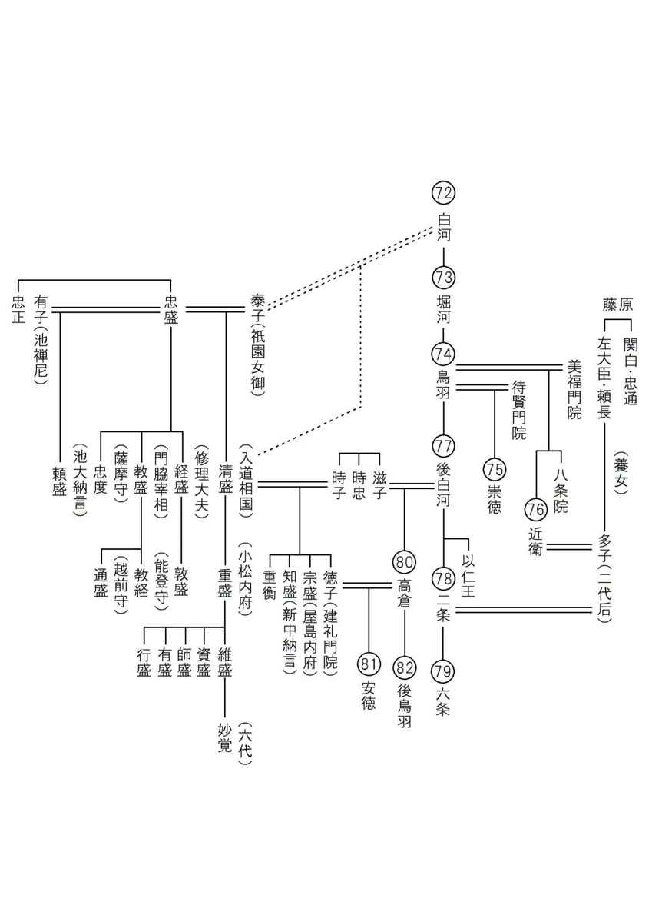
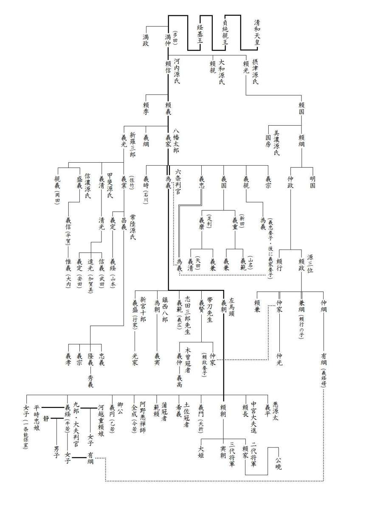

| これで読破！ 平家物語 巻十一 | |
| 三石由起子 | |
| genkosha (2014) | |
完訳 平家物語
百二十句本による
第百一句から第百十句


第百一句 やしま（屋島）
屋島
一
元暦二年正月十日、九郎大夫の判官、院の御所へ参り、大蔵卿泰経の朝臣をもつて申されけるは、「平家は宿報つきて神明にも放たれたてまつり、君にも捨てられまゐらせて、波の上にただよふ落人となれり。しかるをこの二三箇年、攻め落さずして、おほくの国国をふさげつるこそ口惜しう候へ。今度義経においては、鬼界、高麗、天竺、震旦までも、平家のあらんかぎりは攻むべき」よしをぞ申されける。院の御所を出で、国々の兵に向かつて、「鎌倉殿の御代官として、勅宣をうけたまはつて、平家追討にまかり向かふ。陸は駒の足の通はんほど、海は櫓擢のたたんかぎりは攻むべきなり。命を惜しみ、妻子をかなしまん人は、これより鎌倉へ下られべし」とぞのたまひける。
屋島には、ひまゆく駒の足早め、正月もたち、二月にもなりぬ。春の草枯れては、秋の風におどろき、秋の風やんでは、春の草になれり。送り迎へて三年にもなりぬ。
しかるを、「東国の兵ども攻め来たる」と聞こえしかば、男女の公達さし集まつて泣くよりほかのことぞなき。
元暦二年正月十日、九郎大夫の判官・義経は、院の御所へ参上し、大蔵卿・泰経朝臣に奏上させた。
「平家は、もはや宿報が尽きて神仏にも見放されました。法皇にも捨てられて、今はただ波の上に漂う落人となっております。そのような状況にも関わらず、この二、三年、攻め落とすこともなく、諸国の妨げとなっておりますのは困ったことでございます。今の度は、義経が徹底交戦を挑み、鬼界、高麗、天竺、震旦までも、平家の存在する限りはどこまでも攻める所存です。」
院の御所を出た義経は、諸国の武士に向かって、
「鎌倉殿の代理人としての勅宣を承った。平家追討に罷り向かう。陸は駒の足が通う限りどこまでも攻める。海は櫓と櫂の立つ限りは攻めて行く。命を惜しみ、妻子に未練を残す者は、ここから鎌倉へ帰れ。」
と、檄を飛ばした。
一方、屋島では飛ぶように時間が流れて、正月も過ぎて二月になった。春の草が枯れたかと思ううちに、秋の風に驚き、秋の風が止んだかと思えば、すでに春の草が芽吹いている。そうして平家の人々が送り迎えた年月は、三年にもなっていた。
そこへ「東国の兵が攻めて来る」との知らせに、男も女もただ集まって泣くだけであった。
二
同じく二月十三日、都には二十二社の官幣あり。これは「三種の神器、事ゆゑなく都へ返し入れ給へ」との御祈念のためとぞおぼえたる。
同じく十四日、三河守範頼、平家追討の為に七百余艘の船に乗つて、摂津の国神崎より山陽道を発向す。九郎大夫判官、二百余艘の船に乗りて、同国渡辺より南海道へおもむく。
同じく十六日卯の刻、渡辺、神崎にて日ごろそろへたる船のともづな今日ぞ解く。風枯木を折つて吹くあひだ、波蓬莱のごとく吹きたて、船を出だすにおよばず。あまつさへ大船どもたたき破られて、修理のためにその日はとどまる。
渡辺に、大名、小名寄りあひて、「さて、船いくさの様は何とあるべき」と評定あり。
梶原申しけるは、「船に逆櫓をたて候はばや」と申せば、判官、「逆櫓とはいかなるものにて候ふやらん」とのたまへば、梶原、「さん候。馬は、駆けんと思へば駆け、引かんと思へば弓手へも、馬手へも、まはしやすきものにて候。船は、きつと押しなほすことたやすからぬものにて候へば、櫨にも、舶にも、梶をたてて、左右に櫓をたて並べて、櫨へも、舶へも、押させばや」とぞ申しける。判官殿、「軍のならひは、一引きも引かじと約束したるだにも、あはひあしければ敵にうしろを見するならひあり。かねてより逃げ支度をしては、なじかはよかるべき。人の船には逆櫓もたてよ、かへさま櫓もたてよ。義経が船にはたてべからず」とぞのたまひける。
梶原、「あまりに大将軍の、駆くべきところ、引くべきところを知らせ給はぬは、『猪のしし武者』と申して、わろきことにて候ふものを」と申せば、「よしよし義経は、猪のしし、鹿のししは知らず。敵をばただひた攻めに攻めて勝ちたぞ心地好うはおぼゆる」とのたまへば、梶原、「天性、この殿につきて軍せじ」とぞつぶやぎける。
同じく二月十三日、都では二十二社の官幣大社に勅使が遣わされた。これは「三種の神器が無事に都に返還されるように。」との御祈念のためだったろう。
同じく十四日、三河守・範頼は、平家追討のために七百余艘の船に乗り、摂津国、神崎から山陽道を西に向かった。九郎大夫判官・義経は、二百余艘の船に乗って、同国、渡辺から南海道へ赴いた。
同じく十六日卯の刻、渡辺と神崎に準備してあった船の艫綱を満を持して今日、解く。しかし、風が枯木を折って吹き荒れるほどの強風であった。波が吹き荒れて、船は出せない。そればかりか、大船が叩き割られて、その修理のために動けなくなってしまった。
そこで、強風下の渡辺に大名、小名が集まって船戦の評議が行われる。
「さて、船戦はどうあるべきか。」
梶原は、
「船に逆櫓を立てよう。」
と、言う。
船の動きを自由に操るために艫にも舳先にも櫓を立て（＝逆櫓）ようとの提案であった。義経が、
「逆櫓とは、どういうものか。」
と、訊くと、梶原が、
「さん候。馬は、駆けさせようと思えば駆け、退却しようと思えば右へでも左へでも廻すことができる。だが、船を逆方向に押し直すのは容易ではない。そこで脇舵を入れ、艫にも舳先にも左右に櫓を立て（＝逆櫓）て、進むも退くも自由に動けるようにすることだ。」
と、説明した。すると、義経は、
「軍は、一歩も引かぬとの覚悟が大事なのだ。状況次第で敵に後ろを見せるようなことはできない。初めから逃げ支度をして戦に臨んで良かろうはずはない。他の者の船には逆櫓を立てるなり、逃げ櫓を立てるなり何とでもしたら良い。だが、この義経の船に、そのような物を立ててはならぬ。」
と、言うのであった。梶原は、
「それは総大将として、あまりの無分別であろう。出る時、退く時を知らぬのは、猪武者と言って、駄目なものだ。」
と、反論する。だが、義経は、
「何とでも言え。この義経は、猪のしし、でも、鹿のしし、でも構わぬぞ。敵をただ、ひた攻めに攻めて勝つのは、気持ち良いからな。」
と、引かないのである。梶原は、
「天性、この殿につきて軍せじ（＝生涯、この人の下で戦はすまい）。」
と、呟いたのであった。
三
夜に入りて、判官、船ども少々あらため、「一酒ものせよや。若党」とて、いとなむ体にて、物具ども運ばせ、馬ども乗せて、「船出だせ」とのたまへば、梶取ども、「風はしづまりて候へども、沖はなほ強うぞ候ふらん。かなふまじき」よしを申す。判官怒つて、「勅宣を承り、鎌倉殿の御代官として、平家追討にまかり向かふ義経が下知をそむくおのれらこそ朝敵よ。野山の末、海川にて死するも、みな前業の所感なり。その儀ならば、奴ばらいちいちに射殺せ」とぞのたまひける。奥州の佐藤三郎兵衛、四郎兵衛、武蔵房弁慶なんど申す者ども、片手矢はげて、「御諚にてあるに、まことに船を出だすまじきか」とて向かひければ、「矢にあたつて死なん身も同じこと、風つよくは、はせ死に死ねや」とて、二百余艘の船のうちにただ五艘をぞ出だしける。五艘の船は、判官の船、田代の冠者信綱が船、後藤兵衛実基が船、奥州の佐藤三郎兵衛兄弟が船、淀の江内忠俊は船の奉行たり。のこりの船は、風に恐れて出でず。
「この風には見えねども、夜のうちに四国の地に着かんとおぼゆるぞ。船どもかがりたきて、敵に船数見すな。義経が船を本船にしてかがりをまぼれ」とて、とり梶、おも梶にはせ並べてゆくほどに、あまりに強きときは大綱をおろして引かせけり。
十六日の丑の刻に、渡辺、福島を出でて、押すには三日に渡るところを、ただ三時に、十七日の卯の刻に阿波の勝浦に着きにけり。
夜のほのぼのと明けけるに、なぎさの方を見わたしければ、赤旗さしあげたり。判官のたまひけるは、「あはや、われらが設けはしてんげり。船ども平着けに着けて敵の的になして射さすな。なぎさ近うならば、馬ども海へ追ひ入れ、船ばたに引つつけ、引つつけ、泳がせて、馬の足たつほどにならば、うち乗り、駆けよ」とて、なぎさ三町ばかりになりければ、船ばた踏みかたぶけ馬ども海へ追ひ入れ、引きつけ泳がせて、馬の足たつほどになりしかば、ひたひたとうち乗り、うち乗り、をめきさけびて駆く。敵も五十騎ばかりありけるが、これを見てざつと引くに、二町ばかりぞ逃げたりける。
判官、しばしひかへて馬をやすめ、伊勢の三郎義盛を召して、「きやつばらは、けしかる者とこそ見れ。あのなかに、しかるべき者あらん。召してまゐれ」とのたまへば、義盛ただ一騎、五十騎ばかりひかへたる敵のなかに駆け入れて、なにとか会釈したりけん、齢四十ばかりの男の、黒革縅の鎧着、鹿毛なる馬に乗りたる武者一騎、兜をぬがせ、弓をはづさせて、乗つたる馬をば下人に引かせ、具して参る。
判官、「これは何者ぞ」と問ひ給へば、「当国の住人、板西の近藤六親家と申す者にて候」。「何家にてもあれ、物具な脱がせそ。屋島の案内者に具してゆけ。目ばし離つな。逃げてゆかば射殺せ」とぞのたまひける。
「この所は何といふぞ」とのたまへば、「これは『かつら』と申し候。『勝浦』と書いて候ふを、下臈どもが申しやすきままにこそ、『かつら』とは申し候へ」。判官、「これ聞き給へ、殿ばら。いくさしに来たる義経が、まづ勝浦に着くめでたさよ。さていかに、屋島には勢はいかほどあるぞ」。「千騎ばかりは候ふらん」。「など少なきぞ」とのたまへば、「阿波の民部が嫡子田内左衛門教能、三千余騎にて河野を攻めに伊予の国へ渡つて候。それ、勢の向かはぬ浦々も候はず。五十騎、百騎づつさし向けられ候」。「さて、これに平家の方人しつべき者はなきか」。「さん候。成能が弟桜間の能遠と申す者こそ候へ」。「さらば能遠討つて軍神にまつれや」とて、桜間が城へぞ押し寄せたりける。
その夜に入ると、義経は船を点検して、
「まあ、どうだ一献。飲めや。若党。」
と、何気ないふりをして武具や馬を船に積み込ませると、
「船を出せ。」
と、号令をかけた。梶取どもは、
「風は静まっておりますが、沖の風はまだ強く、とても出せません。」
と、拒んだが、義経は怒って、
「勅宣を承り、鎌倉殿の御代官として平家追討に向かう義経の下知だ。それに背くお前達こそが朝敵である。野山の末、海川で死んでも、それは皆、前世の業であると思え。逆らうと言うならこの場で一人一人、射殺すまでだ。」
と、言うのであった。
奥州の佐藤三郎兵衛、四郎兵衛、武蔵房弁慶などという者が、弓矢で脅しながら、
「御諚である。それでも船を出さぬというか。」
と、向かうので、
「矢に当たって死ねば同じことだ。風が強ければ馳せ死にして死のう。」
と、二百余艘の船の中で、ただ五艘だけが出したのである。
五艘の船は、義経の船、田代の冠者信綱の船、後藤兵衛実基の船、奥州の佐藤三郎兵衛兄弟の船、淀の江内忠俊という船奉行の船であった。残りの船は風に恐れて出なかった。
「この風で前は見えぬが、夜のうちに四国の地に着きそうだぞ。船に篝火を焚いて、敵に船の数を悟らせるな。この義経の船を本船にして、篝火を守れ。」
と、梶を右に取り、左に取って、並べて馳せて行く。
あまりに風の強い時には大綱を下ろして引かせた。
十六日の丑の刻に、渡辺と福島を出た船は、普段なら三日かかる航程を、たった六時間ほどで、十七日の卯の刻には阿波の勝浦に到着したのであった。
夜がほのぼのと明ける頃に渚の方を見ると、平家の赤旗が立ち並んでいる。義経は、
「ああ、防戦の準備がしてあるぞ。船をぴったりと寄せて、敵の的にされるな。射さすな。渚に近くなったら馬を海に追い入れて、船ばたに引きつけて泳がせ、馬の足が立つ場所になったら一気に乗って駆けよ。」
と、渚に三町ほどの距離まで来ると、船端を傾けた。
それから馬を海へと追い入れて、引きつけて泳がせ、馬の足が立ったのでひたひたとうち乗り、うち乗り、喚き叫んで踊り入った。敵も五十騎ばかりが控えていたが、これを見てざっと引き、二町ほど逃げる。
義経は、しばらく控えて馬を休めると、伊勢三郎義盛を召し、
「あの者たちは、全てが敵ではあるまい。あの中に役に立ちそうな者がいよう。召して参れ。」
と、命じた。
義盛は言いつけ通り、ただ一騎で五十騎の中に駆け入ると、どう挨拶をしたものか、四十歳ほどの男を連れて帰って来た。黒革縅の鎧を着て、鹿毛の馬に乗った武者であった。兜を脱がせ、弓を外させ、乗っていた馬を下人に引かせて義経の前に出る。義経が、
「これは何者ぞ。」
と、訊くと、
「この国の住人で、板西の近藤六親家と申す者でございます。」
「何者であっても武装を解かせるな。屋島の案内人として連れていくのだ。目を離すな。逃げたら射殺せ。」
と、指示を出す。
「ここ場所の地名は何というか。」
と、訊くと、
「かつらと申します。勝浦と書きますが、下臈どもが言いやすいように「かつら」と言うのです。」
との答えに、何と言う縁起の良さかと義経は喜んだ。
「よく聞け、殿ばら。戦に出たこの義経が、まず着いた場所が「勝つ浦」だぞ。さあ、どうだ。屋島の軍勢はどれほどか。」
「千騎ばかりでありましょう。」
「なぜ、そんなに少ないのか。」
「阿波の民部の嫡子である田内左衛門・教能が、三千余騎で河野を攻めに伊予国に渡っております。あらゆる浦々に、五十騎、百騎と差し向けておりますので。」
「さて、そのうちで平家に味方している者がいないか。」
「さん候。成能の弟で桜間能遠と言う者がおります。」
「では、その能遠を討って軍神にまつれや。」
と、一気に桜間の城へと押し寄せた。
四
桜間の介、しばし戦ひ、究竟の馬を持ちたりければ、そばの沼より落ちにけり。所の者ども二十余人が首を斬り、よろこびの鬨をつくり、軍神にぞまつられける。
判官、近藤六を召して、「これより屋島へはいかほどあるぞ」。「二日路候」。「さらば敵の知らぬさきに寄せよや」とて、駆け足になり、あゆませゆくほどに、その日は阿波の国板東、板西行き過ぎて、阿波と讃岐とのさかひなる大坂越といふ所にうち下つて、入野、白鳥、高松が里を、うち過ぎ、うち過ぎ寄せ給ふに、山中にて蓑笠背負うたる男一人ゆきつれたり。「どこの者ぞ」と問はせられければ、「京の者にて候」と申す。「どこへ行くぞ」。「屋島へ参り候」。「屋島へはどの御方へ参るぞ」。「女房の御つかひに都より大臣殿の御方へ参り候」。「これも阿波の御家人にてあるが、屋島へ召されて参るなり。この道は不知案内なるに、わ殿、案内者つかまつれ」。「これは案内は知りて候」と申す。「何事の御つかひぞ」と問へば、「下臈は御つかひつかまつるばかりにてこそ候へ。いかでか何事とは知り候ふべき」と申す。「げにも」とて、乾飯食はせなんどして、「さるにても何事の御つかひとか聞きし」。「別の子細や候ふべき。河尻に源氏どもおほく浮かんで候ふとかや申されしごさんなれ」。「さぞあらん。その文取れ」とて、うばひ取りて、「しやつ縛れ」とて、縛つて道のほとりなる木に結ひつけてぞ通られける。
判官、この文見給へば、まことにも女房の文とおぼしくて、「九郎は心すすどき男にて、大風大波たつともよもきらひ候はじ。勢を散らさでよくよく御用意候へ」とぞ書かれたる。「これは義経に天の与へ給へる文なり。鎌倉殿に見せたてまつらん」とて、深くをさめておき給ふ。
近藤六を召して、「さて屋島の城〔の様〕はいかに」とのたまへば、「さん候。知ろしめさねばこそ候へ、城は無下にあさまに候ふ。潮の干候ふときは馬の腹もつからず」と申す。
「さらば寄せよ」とて、源氏の勢、潮干の潟より寄せけるに、ころは二月十八日のことなれば、蹴上げたる潮のしぐらうたるうちより、うち群れて寄せければ、平家は運や尽きぬらん、大勢とこそ見てんげれ。
阿波の民部が嫡子田内左衛門、河野を攻めに伊予の国に越えたりけるが、河野は討ちもらし、家の子、郎等百余人が首を取り、わが身は伊予にありながら、さきだて、屋島へ奉りたりけるが、をりふし大臣殿の御宿所にて実検あり。兵ども、「こはいかに。焼亡」なんどと騒ぎけるが、よくよく見て、「さではなし。あはや。敵の寄せ候ふぞや」と申すほどこそあれ、白旗ざつとさし上げたり。
すでに、「源氏さだめて大勢にてぞ候ふらん。いそぎ御船に召さるべし」とて、なぎさに上げおきたる船ども、にはかに下ろしけり。御所の御船には、女院、北の政所、二位殿以下、女房たち召されけり。大臣殿父子は、一つ船にぞ乗り給ふ。平大納言、平中納言、修理大夫、新中納言以下の人々、みな船にとり乗つて、一町ばかりおし出だしたるところに、白じるしつけたる武者六騎、惣門のまへにあゆませて出で来る。
まつ先にすすんだるぞ大将とは見えたる。赤地の錦の直垂に、紫裾濃の鎧着て、金作りの太刀帯き、切文の矢負ひ、塗籠籐の弓のまつ中取つて、黒の馬の太うたくましきに、金覆輪の鞍おいてぞ乗つたりける。鐙ふんばりつ立ちあがりて、「一院の御つかひ、大夫判官義経ぞや。われと思はん者は進み出でよ。見参せん」とぞ名のりける。「こはいかに。大将軍にてありけるぞ。射取れや、射取れ」とて、指矢に射る船もあり、遠矢に射るもあり。つづいて名のるは、田代の冠者信綱、金子の十郎家忠、同じき与市近範、伊勢の三郎義盛、後藤兵衛実基なり。
桜間の介は、しばらく戦っていたが、名馬に乗っていたので近くの沼まで逃げ延びたのである。源氏方はその近くにいた敵、二十余人の首を斬って喜びの鬨をつくった。血祭りの首を軍神に捧げる鬨の声であった。
義経は、近藤六を召す。
「ここから屋島へはどれほどの距離か。」
「二日路で候。」
「では敵に気取られぬ前に寄せよや。」
と、駆け足で歩ませたので、その日は阿波国の板東、板西を行き過ぎて、阿波と讃岐との国境の大坂越まで下った。続いて入野、白鳥、高松が里を過ぎ、攻め寄せて行くと、山中で蓑と笠を背負った男が一人歩いている。
「どこの者ぞ。」
「京の者にて候。」
「どこへ行くぞ。」
「屋島へ参り候。」
「屋島へは誰に会いに参るぞ。」
「女房の御使いで、都から大臣殿（＝宗盛）の御方へ参り候。」
「こちらも阿波の御家人だが、屋島へ召されて行くところだ。この道は知らぬから、お前が案内してくれ。」
「はい。私は良く存じております。」
それからまた、
「何の用事だ。」
と、訊くと、
「私のような下臈は、御使いをするばかりでございます。何の用事かなどは、知る筈もございません。」
と、申しあげた。
「げにも。」
と、男に乾飯を食べさせて、
「だが、何の使いだと聞いているか。」
「特別なことではありません。河尻に源氏の武士達が大勢いることをお伝えするのでございましょう。」
「そんなことだろうと思った。その文を取れ。」
と、奪い取り、
「奴を縛れ。」
と、縛って道の辺の木に結びつけて通った。
義経がこの手紙を見ると、本当に女房からの手紙だと見えて、
「九郎は機敏な男ですから、大風や大波があったとしても構わずに攻め寄せることでしょう。軍勢を散らさずに、よくよくお備えなさいませ。」
と、書いてあった。
「これは、義経に天が与えた手紙である。鎌倉殿にお見せしよう。」
と、懐に深く納めて置かれた。
近藤六を召して、
「さて、屋島の城の有様はいかに。」
と、訊くと、
「さん候。ご存知ないでしょうが、城は非常に浅い場所にあります。干潮の時には馬の腹も浸からぬほど浅い場所です。」
と、申し上げる。
「さらば寄せよ。」
と、源氏の勢は、潮干の潟から攻め寄せる。
二月十八日のことであった。馬の蹴り上げた潮のしぶきと白旗に平家は大慌てであった。義経が大軍の襲来に見せかけたのだが、平家はもはや運が尽きていたのだろう、どんなに大勢の軍勢かとまんまと錯覚させられたのである。
阿波民部の嫡子である田内左衛門は、河野を攻めるために伊予国に行っていた。河野本人は討ち漏らしたが、家の子や郎等の首を百人余り取り、自分自身は伊予にいて、首だけを先に屋島へ奉っていたので、ちょうど大臣殿（＝宗盛）の御宿所で首実検をしているところであった。兵どもが、
「こはいかに。火事か。」
などと騒ぎ、よくよく見て、
「そうではない。敵が攻め寄せて来たのだ。」
と言う間もなく、源氏の白旗がざっと上がったのであった。
「源氏は大軍に違いありません。急いで御船にお乗り下さい。」
と、渚に上げ置いた船を大急ぎで海に下ろす。
御所の御船には、女院、北の政所、二位殿以下、女房達がお乗りになった。大臣殿父子は、同じ船にお乗りである。平大納言、平中納言、修理大夫、新中納言以下の人々は皆、船にとり乗って一町ばかり押し出だしたところに、源氏の白印を付けた武者六騎が、惣門の前にやって来た。
先頭に進んで来るのが大将のようであった。赤地の錦の直垂に紫裾濃の鎧を着ていた。金作りの太刀を帯き、切文の矢負い、塗籠籐の弓の真ん中を手に取り、逞しい黒い馬に金覆輪の鞍を置いて乗っていたのであった。それが、鐙を踏ん張って立ち上がると、
「法皇のお使い、大夫判官・義経である。我と思わん者は進み出よ。見参せん。」
と、名乗りをあげて敵を引きつけた。
「こはいかに。大将軍にてありけるぞ。射取れや、射取れ。」
と、命じられて、平家方は次々に矢を放つ船もあり、また遠くから射る船もあった。
続いて名乗りを上げたのは、田代の冠者信綱、金子の十郎家忠、同じく与市近範、伊勢の三郎義盛、後藤兵衛実基である。
五
源氏は、五騎、三騎づつ、うち群れ、うち群れ、寄せけり。佐藤三郎兵衛嗣信、同じき四郎兵衛忠信、渋谷の右馬允重助、これ三人はいくさをばせで、阿波の民部がこの三箇年があひだ、やうやうにして造りたる内裏や御所に火をかけて、片時の煙となしにけり。
大臣殿これを見給ひて、「源氏多くもなかりけるものを。内裏や御所を焼かせつるこそやすからね。能登殿はおはせぬか。一いくさし給へ」とありしかば、能登の前司、小船に乗つて寄せらる。兵二百余人、兜の緒をしめて、同じくなぎさにあがる。
越中の次郎兵衛すすみ出でて申しけるは、「今日の源氏の大将軍はいかなる人ぞよ」。伊勢の三郎申しけるは、「事もかたじけなや。清和天皇十代の御末、九郎大夫判官ぞかし」。盛嗣あざわらつて、「それは金商人が所従ごさんなれ。平治に父義朝は討たれぬ。母常盤が腹にいだかれて、大和、山城に迷ひありきしを、故太政入道殿たづね出ださせ給ひしが、『をさなければ不便なり』とて、捨ておかれ給ひしほどに、鞍馬の稚児して十四五までありけるが、商人の供して奥に下りし者にてこそ」と申しければ、伊勢の三郎、「なんぢは砥波山のいくさに、からき命を生きて乞食の身となり、京へのぼりしはいかに」と申す。盛嗣、「なんぢも鈴鹿山の山がつよ」と申しけり。金子の十郎、「雑言たがひに益なし。申さばいづれか劣るべき。去年の春、一の谷にて武蔵、相模の若殿ばらの手なみよく見たるらん」と申しもはてねば、弟の与市、よつぴいて射る。盛嗣が胸板、裏かくほどに射させて、そののちは言葉だたかひせざりけり。
源平みだれあひ、しばし戦ふ。能登殿のたまひけるは、「船いくさは様あるぞ」とて、わざと直垂は着給はず。巻染の小袖に黒糸縅の鎧着、大中黒の矢、首高に負ひなし、滋籐の弓まつ中取り、小船の舳に立つて、源氏の大将軍を射落さんとぞうかがひける。能登の前司は聞こふる精兵の、「矢先にかけたてまつらじ」と兵ども、判官の矢面にふさがつてぞ戦ひける。
能登殿、「矢面のやつばら、そこのき候へ」とて、さしつめ、ひきつめ、散々に射給ふに、鎧武者五騎射落さる。判官、あらはになり給ふところに、いつのまにかすすみけん、佐藤三郎兵衛嗣信、黒革縅の鎧着て、判官の矢面にむずとへだたるところを、胸板うしろへ射出だされて、馬よりさかさまに落ちぬ。
能登殿の童、菊王丸とて生年十八歳になるが、萌黄縅の腹巻、兜の緒をしめ、白柄の長刀の鞘をはづし、船より飛んでおり、嗣信が首を取らんと寄るところを、弟の忠信よつぴいて射る。菊王が腹巻の引合せを射られて、犬居に倒れぬ。「敵に首を取らせじ」と、能登の前司、船より飛んでおり、菊王をひつさげて船に乗り給ふ。首をば敵に取られねども、痛手なれば死ににけり。
さしも不便にし給ひし菊王を射させ、そののちはいくさもし給はず。船をば沖へおし出ださる。
判官も、手負うたる嗣信を陣のうしろへ舁かせ、手を取つて、「いかに、いかに」とのたまへば、息の下に、「今はかう」とぞ申しける。判官涙をながし給ひて、「この世に思ひおくことあらば、義経に言ひおけ」とのたまへば、世にも苦しげに申しけるは、「などか思ひおくことのなくては候ふべき。まづ奥州に候ふ老母のこと、さては、君の御世を見たてまつらず、先に立ちまゐらするこそ、冥途の障りにて候へ」と、これを最後のことばにて、二十八と申す二月十八日の酉の刻、讃岐の屋島が磯にてつひに死ににけり。
判官かなしみ給ひて、「この辺に僧やある」とのたまへば、僧一人たづね出だしたり。判官、この僧に向かつて、「ただ今果つるもののふがために、経を書き、とぶらひて賜び候へ」とて、秘蔵の馬をぞ引かれける。黒き馬の太くたくましきに、金覆輪の鞍おいたり。
この馬と申すは、一の谷鵯越を落され、あまり秘蔵におぼしめして、五位の尉にならせ給ふとき、「五位をこの馬にゆづるなり」とて、「大夫黒」と名づけらる。かかる馬を引かれし心ざしの切なるを見て、「この君の御ために命を捨てんこと、たれか惜しみたてまつるべき」と、感涙身に余り、兵どもみな鎧の袖をぞ濡らしける。
源氏の軍勢は、五騎、あるいは三騎ずつ、うち群れ、うち群れして、攻め寄せて来た。
佐藤三郎兵衛・嗣信、同じく四郎兵衛・忠信、渋谷の右馬允・重助の三人は、戦には加わらずに、その間に内裏と御所に火をかけてまわった。阿波の民部が三年がかりでようやく造った建物であったが、それが片時の煙となったのである。
大臣殿はこれを見て、
「ああ、源氏は大軍ではなかったのだ。それなのに内裏や御所を焼かせてしまった。能登殿（＝教経）はおられぬか。ひと戦し給え。」
と、御命令になったので、能登の前司・教経が、小船に乗って攻め寄せた。
その兵二百余人が兜の緒を締め、一緒に渚に上がる。
越中の次郎兵衛が進み出て、
「今日の源氏の総大将は、いかなる人ぞよ。」
と、訊くと、伊勢の三郎が、
「言うも忝いことに清和天皇の十代目の子孫、九郎大夫判官であるぞ。」
と、答えた。盛嗣は嘲笑い、
「ああ、あの金売りの付き人か。平治の乱で父・義朝が討たれた。母の常盤に抱かれて大和、山城に迷い歩いているのを故太政入道殿が見付けてやったのだ。幼くて気の毒だからと死罪を免れ、鞍馬山で稚児として十四、五歳まで暮らした後には、金売りの従者となって奥州に下った男だな。」
と、言うと、伊勢の三郎が、
「お前は砥波山の戦で、やっと逃げ延びて乞食になって京に行ったが、その後はどうした。」
と、言い返した。盛嗣も、
「お前は鈴鹿山の山賤よ。」
と、負けてはいない。金子の十郎が、
「悪口を言い合っていても益はないぞ。言えば、どちらが劣るでもないことだ。去年の春、一の谷で武蔵、相模の若殿達の手並はよく見ただろう。」
と、言い終わらぬうちに、弟の与市が寄っぴいて射る。
盛嗣の胸板の裏をかくほどに射たので、それ以後は言葉での応酬はなくなったのである。
源平が乱れあって、しばらく戦った。能登殿（＝教経）は、
「船戦にはやり方があるぞ。」
と、わざと直垂は着ない。
巻染の小袖に黒糸縅の鎧を着て、大中黒の矢を首高に背い、滋籐の弓の真ん中を手に取って小船の舳に立つと、源氏の総大将を射落とそうと窺っていた。
教経も勇者であるが、その家来も評判の精兵である。その兵達の矢先にかけてなるものかと、源氏の兵達は義経の矢面に立って防ぎ戦った。
教経は、
「矢面の奴ら、そこを退け。」
と、さしつめ、引きつめ、散々に射て、鎧武者五騎が射落とされた。
そこで義経が露わになったが、いつの間に進んで出たのか、佐藤三郎兵衛・嗣信が、黒革縅の鎧を着て義経の矢面にむずと立ち塞がったので、その胸板が後ろまで射出され、馬から逆さに落ちたのである。
教経の童侍である十八歳の菊王丸が、萌黄縅の腹巻鎧に兜の緒を締めて、白柄の長刀の鞘を外すと船から飛んで降りた。嗣信の首を取ろうと寄ったところで弟の忠信がよっぴいて射る。菊王は、腹巻鎧の引合せを射られ、犬居に倒れた。
「敵に首を取らせるものか。」
と、教経は船から飛び下りると、菊王丸を引き下げて船に戻る。首を敵に取られはしなかったが、深手を負った菊王丸は死んでしまっていた。
可愛がっていた菊王丸を射られた教経は、その後の戦をせずに、船を沖へ押し出したのであった。
義経も、手負いの嗣信を陣の後ろへ舁かせて手を取り、
「いかに、いかに。」
と、言ったが虫の息で、
「もはや、これまで。」
と、申し上げる。義経は涙を流し、
「この世に未練があるなら、この義経に言い置け。」
と、言うと、世にも苦しげに、
「未練がないことがありましょうか。まずは奥州にいる老母のことです。源氏の御世を拝見せずに先立つことは冥途へ行っても成仏の障りでございます。」
と、これを最後の言葉にして、二十八歳の二月十八日の酉の刻（＝午後六時頃）、讃岐国の屋島の磯で遂に死んだのであった。
義経は悲しんで、
「この辺りに僧やある。」
と、訊いて、僧一人を捜して来た。義経はこの僧に向かって、
「ただ今命を落とした侍のために経を書いて弔って下さい。」
と、秘蔵の馬をお布施に差し出したのであった。
逞しい黒い馬で、金覆輪の鞍を置いてあった。
この馬は、一の谷の鵯越を下った名馬であった。あまりにも大事にして、自分が五位の尉に昇進した時には、
「五位をこの馬に譲る。」
と、「大夫黒」と名づけたのであった。
このような馬を出した気持ちの深さを見て、
「この方のためなら命を捨てても惜しくはない。」
と、家来達は感涙身に余り、皆、鎧の袖をぞ濡らしたのであった。
第百二句 あふぎのまと（扇の的）
扇の的
平曲『扇の的』は、琵琶との掛け合いで大変めでたい曲とされ、よく演奏される。
一
阿波、讃岐に、平家をそむき、源氏を待ちける者ども、かしこの洞、ここの谷より馳せ来たつて加はる。源氏の勢ほどなく三百余騎にぞなりにける。「今日は日暮れぬ。勝負は決せじ、明日のいくさ」とさだめて、源氏引きしりぞかんとするところに、沖の方より尋常にかざりたる小船一艘、なぎさに寄す。「いかに」と見るところに、赤き袴に柳の五衣着たる女の、まことに優なりけるが、船中より出でて、みな紅の扇の日出だしたるを、船ばたにはさみ立て、陸へ向かひてぞ招きける。
判官、後藤兵衛を召して、「あれはいかに」とのたまへば、「射よとこそ候ふらめ。ただしはかりごとごさんなれ。大将軍さだめてすすみ出でて、傾城を御覧ぜんずらん。そのとき手だれをもつて射落さんと候ふか。扇をばいそぎ射させられべうや候ふらん」と申しければ、「射つべき者はなきか」。「さん候。下野の国、那須の太郎助孝が子に、与市助宗こそ小兵なれども手はきいて候へ」。「証拠はあるか」。「さん候。翔け鳥を三よせに二よせはかならずつかまつる」と申す。「さらば召せ」とて、召されたり。
与市そのころ十八九なり。褐に、赤地の錦をもつてはた袖いろへたる直垂に、萌黄にほひの鎧着て、足白の太刀を帯き、中黒の矢の、その日のいくさに射残したるに、薄切斑に鷹の羽はぎまぜたるぬための鏑差し添へたり。二所籐の弓脇ばさみ、兜をぬいで高紐にかけ、御前にかしこまる。
判官、「いかに与市、傾城のたてたる扇のまつ中射て、人にも見物させよ」とのたまへば、与市、「これを射候はんことは不定に候。射損じ候ふものならば、御方の長ききずにて候ふべし。自余の人にも仰せつけらるべうや候」と申せば、判官怒つて、「鎌倉を出でて西国へ向かはん殿ばらは、義経が命をそむくべからず。それに子細を申さん殿ばらは、いそぎ鎌倉へ帰りのぼらるべし。そのうへ多くの中より一人選び出ださるるは、後代の冥加なりとよろこばざる侍は、何の用にかたつべき」とぞのたまひける。
与市、「かさねて申してあしかりなん」と、御前をついたつて、月毛駮なる馬に黒鞍おき、うち乗り、なぎさの方へあゆませゆれば、兵ども追つ様にこれを見て、ふりかかりしづまりて、「一定この若者はつかまつらんとおぼえ候」と口々に申せば、判官もよにたのもしく思はれけり。
なぎさよりうちのぞんで見れば遠かりけり。遠干なれば馬の太腹ひたるほどにうち入るれば、いま七八段ばかりと見えたり。をりふし風吹いて、船、ゆりすゑ、ゆりあげ、扇、座敷にもさだまらずひらめきけり。沖には平家、一面に船を並べて見物す。うしろを見れば、みぎはに味方の源氏ども、轡を並べひかへたり。いづれも晴ならずといふことなし。なほ風しづまらざれば、扇、座敷にもさだまらず。
与市、いかがすべき様もなくて、しばらく天に仰ぎ祈念申しけるは、「南無帰命頂礼、御方を守らせおはします正八幡大菩薩、別してわが国の神明、日光権現、宇都宮、那須の湯泉大明神、願はくはあの扇のまつ中射させて賜ばせ給へ。これを射損ずるほどならば、弓切り折り、海に沈み、大龍の眷属となつて長く武士の仇とならんずるなり。弓矢の名をあげ、いま一度本国へ迎へんとおぼしめされ候はば、扇のまつ中射させて賜はり候へ」と心のうちに祈念して、目をひらき見たりければ、風もすこししづまり、扇も射よげにぞなつたりける。小兵なれば十三束、鏑取つてつがひ、しばしたもちて放つ。弓はつよし、浦にひびくほどに鳴りわたりて、扇のかなめより上一寸ばかりおいて、ひやうふつと射切つたれば、扇こらへず三つに裂け、空へあがり、風に一もみもまれて、海へざつとぞ散りたりける。みな紅の扇の日出だしたるが、夕日にかがやいて、白波の上に、浮きぬ、沈みぬゆられければ、沖には平家船ばたをたたいて感じたり。陸には源氏箙をたたいてどよめきけり。
あまりおもしろさに、感にたへざるにや、船のうちより齢五十ばかりの男の、黒革縅の鎧着て、白柄の長刀持ちたる武者一人出で来つて、しばし舞うたりけり。伊勢の三郎、与市がうしろへあゆませ寄つて、「御諚にてあるぞ。にくい、奴ばらが今の舞ひ様かな。つかまつれ」と言ひければ、中差取つてつがひ、よつぴいて射る。しや首の骨、ひやうふつと射通され、舞ひ倒れに倒れけり。源氏方いよいよ勝に乗つてぞどよみける。
阿波と讃岐は平家に背き、源氏を待って身を潜めていたが、あちらの洞や、こちらの谷から馳せ集まって義経に加わる。そうして源氏の軍勢は、ほどなくして三百余騎にもなった。
「今日は日が暮れてしまった。勝負は着くまい。明日の戦にしよう。」
と決めて、源氏が退こうとしたところで、沖の方から正式に飾った小船が一艘、渚に寄せて来たのであった。
「いかに。」
と、見ていると、赤い袴を付け、柳の五衣を着た女が、ひどく優雅な様子で船中から出て来た。そうして紅の地に金色の太陽を描いた扇を船端に挟み立てると、陸の源氏に向かって招いたのであった。
義経は後藤兵衛を召して、
「あれはいかに。」
と、訊くと、
「射てみよ、とのことでございましょう。但し、策謀かと思われます。総大将がきっと進み出て、美人を御覧になろうとなさるだろうから、その時に弓の手練れが射落とそうという魂胆でございましょうか。扇をすぐに射落とすことができればいいのですが。」
と、言うのであった。
「射落とせる者はいないか。」
「さん候。下野国、那須の太郎助孝の子で、与市助宗と申す者が、小兵ではございますが、名人とのことですが。」
「証拠はあるか。」
「さん候。飛ぶ鳥を三羽に二羽は必ず射落としますが。」
「さらば召せ。」
と、召されたのであった。
与市は、その時十八、九歳であった。濃紺の布に赤地の錦に、袖広の直垂である。萌黄色の鎧を着て、太刀は鞘の部分が銀色であった。その日の戦で射残した中黒の矢は、薄切斑に鷹の羽を混ぜた物で、それに鏑矢が差し添えられたいでたちである。それが二所籐の弓を脇ばさみ、兜を脱いで高紐にかけると、御前に畏まった。
義経が、
「いかに与市、美人が立てた扇の真ん中を射て、人にも見物させよ。」
と、命じると、
「これを射ることは力に余ります。射損ずればお味方の長き瑕となりましょう。どうか、他の方にお申し付け下さい。」
と、言うのであった。義経は怒って、
「鎌倉を出て西国へ向かう侍は、この義経の命令に背いてはならぬ。あれこれ言うのであれば、直ちに鎌倉へ帰れ。まして、大勢の中から選ばれたというのに、それを後代までの冥加だと喜ばないような侍は、何の用に立つというのか。」
と、言うのであった。
与市は、重ねてお断りしてはなるまいと、御前を立ち、月毛駮という馬に黒い鞍を置いて乗ると、渚の方向へ歩ませて行った。兵達がこれを追うように見てから振り返って、
「この若者は、必ずややり遂げるでしょう。」
と口々に申し上げたので、義経も頼もしく思うのであった。
渚から見ると、小舟は遠かった。遠干なので、馬の太腹が浸るほどに海に入ったが、まだ七、八段ほどの距離があるように見えた。
この後は、名文なので、そのままを引く。
折りふし風吹いて、船、揺りすえ、揺り上げ、扇、座敷にも定まらず閃きけり。沖には平家、一面に船を並べて見物す。後ろを見れば、汀に味方の源氏ども、轡を並べ控えたり。いづれも晴ならずということなし。なお風静まらざれば、扇、座敷にも定まらず。
与市、いかがすべき様もなくて、しばらく天に仰ぎ祈念申しけるは、
「南無帰命頂礼、御方を守らせおわします正八幡大菩薩、別して我が国の神明、日光権現、宇都宮、那須の湯泉大明神、願わくはあの扇の真ん中射させて賜ばせ給え。これを射損ずるほどならば、弓切り折り、海に沈み、大龍の眷属となって長く武士の仇とならんずるなり。弓矢の名を上げ、今一度、本国へ迎えんと思召され候わば、扇の真ん中射させて賜わり候え」
と、心の中で祈念して、目を開いて見ると、風も少し静まって、扇も射やすそうになっていた。小兵であるから決まり通りに十三束という短めの矢なのである。鏑矢を取ってつがえて、しばらくそのまま保ってから放つ。弓は強かった。浦に響く程の音を立てて鳴り渡り、扇の要の上一寸ばかりの位置に、ひょう、ふっと射切ったのである。扇は堪えられずに三つに裂けて、空へ上がり、風に一もみ揉まれてから海へざっと散り落ちたのであった。紅の扇の太陽が夕日に輝いて、白波の上に浮いては、沈み、ゆらゆらと揺れた。沖の平家は、船端を叩いて感じ入り、陸の源氏は箙を叩いてどよめいた。
あまりの素晴らしさに感に堪えなかったものか、船の中から齢五十ばかりの男が出て来た。黒革縅の鎧を着て、白柄の長刀を持った武者であったが、それが一人で出て来たかと思うと、暫く舞を舞ったのである。それを見た伊勢の三郎は、与市の後ろに歩み寄ると、
「御諚である。憎い平家の舞いである。射てしまえ。」
と、言ったので、新たな矢をつがえてよっぴいて射る。
その首の骨が、ひょう、ふっと射通されて、舞い倒れに倒れた。それを見た源氏方は、いよいよ勝ちに乗ってどよめく。
この舞いを舞った老人は、与市の腕に感心して、与市を祝福する舞を見せたのである。だが、伊勢の三郎の命令で与市はこれをも射落としてしまう。源氏は拍手をするが、平家にとっては実に残念な話である。
二
平家の方には音もせず。「本意なし」とや思ひけん、小船一艘なぎさへ寄す。長刀持ちたる者一人、楯つき一人、弓持ち一人、船のうちよりみぎはに上がりて、「源氏方にわれと思はん兵寄せよや」とぞののじりける。
判官見給ひて、「にくいやつかな。馬つよからん者、向かつて蹴ちらせ」とのたまへば、承つてすすむ者たれたれぞ。武蔵の国の住人水尾谷の四郎、同じき十郎、上野の国の住人丹生の四郎、信濃の国の住人木曾の中太をはじめとして、五騎つれてぞ駆けたりける。
まつ先にすすんだる水尾谷が馬の鞅づくしを、平家の楯のかげより筈のかくるるほどに射こまれて、馬は屏風を返すがごとし。主は右手の足を越し、馬の頭にゆらと乗り、やがて太刀をぞ抜いたりける。楯のかげより大長刀うち振つて出でたりける。「あれは長刀、われは小太刀。かなはじ」とや思ひけん、かい伏して逃げてゆく。追うて薙ぐかと見れば、いかがはしたりけん。長刀脇にかいはさみ、兜の鉢をつかまんとす。「つかまれじ」と逃げけるが、取りはづし、取りはづし、四度目にむずとつかみ、しばしたもつて見えけり。水尾谷もつよかりけるやらん、鉢つけの板ふつとひき切つて、味方のなかへ逃げ入り、しばらく息をぞやすめける。
敵やがても追うても来ず。ひき切つたる錣をさしあげ、「平家の侍に、上総の悪七兵衛景清」と名のり捨ててぞ帰りける。
判官これを見給ひて、「悪七兵衛ならば、もらすな。射取れや」とて、をめいて駆け給へば、三百余騎つづいて駆く。平家方にもこれを見て、「悪七兵衛討たすな」とて、小船百艘ばかりなぎさへ寄す。
楯の端を牝鶏羽につきむかへて、「源氏寄せよ」と招きかく。源氏三百余騎、馬のひづめをたて並べ、をめいて駆く。乱れあひてしばし戦ふ。平家の兵みなかちだつたり、楯ども散々に駆けちらされて引きしりぞくところを、源氏は馬の足のおよぶほど攻め戦ふ。
平家の方では声もなかった。音も立てない。口惜しく残念に思ったのだろうか、小船が一艘、渚に寄せられた。長刀を持った者が一人、楯を突く者が一人、弓持ちが一人、三人で船から汀に上がると、
「源氏方で、我れと思わん兵は、挑んで来よ。」
と、罵って挑発した。
義経はそれを見ると、
「憎い奴かな。強い馬に乗る者は、向かって蹴散らせ。」
と、命じたので、承って進んだ者は以下の通りであった。
武蔵国の住人水尾谷の四郎、同じく十郎、上野国の住人丹生の四郎、信濃国の住人木曾の中太を始めとして、五騎が並んで駆けて行った。
真っ先に進んだ水尾谷が馬の鞅づくし（＝馬の鞍から胸に掛けてまわした紐の当たるところ）を射倒されてしまう。平家の楯の陰から射た矢は矢筈が隠れるほど深いものだった。馬は屏風のようにひっくり返った。乗り手は、馬が倒れる前に右手の足を素早く外し、馬の頭にゆらりと乗って、すぐに太刀を抜く。そこに楯の蔭から大長刀を振って平家が出て立ち向かう。だが、水尾谷は太刀であり、敵は長刀である。とても敵わぬと見た水尾谷は、這うようにして逃げ出すと、平家は追いかけて、長刀で払うかと見えたがどうしたことか、長刀で薙ぎ払う代わりに、長刀を脇に挟むと、水尾谷の兜の鉢を掴まえようとしたのである。
「掴まれまい。」
と、水尾谷は逃げるが、何度も外しては掴み、外しては掴みして、繰り返されること四度、遂にむずと掴まえられた。そうして暫くは掴んでいたが、しかし水尾谷の首も強かった。鉢付けの板（＝最上部の札板）をふっと引き切ると味方の中へと逃げ帰って、暫く息をついて休んだのであった。
敵はすぐには追って来なかった。ひき切った錣を差し上げて、
「平家の侍、上総の悪七兵衛景清」
と、名乗りを上げて帰る。
名乗りを聞いた義経は、
「悪七兵衛ならば討ち漏らすな。射取れや。」
と、大声をあげて追いかける。三百余騎がそれに続いて再び大乱戦となった。平家方にもこれを見て、
「悪七兵衛を討たすな。」
と、小船を百艘ばかりで渚に寄せると、楯の端を牝鶏羽に突き迎えて、
「源氏、寄せよ。」
と、挑発する。
牝鶏羽は、牝鶏が羽をたたむ時に、左の羽で右の羽を覆う様子からできた言葉である。左を上に、右を下にして物を少しずつ重ねるさまである。牝鶏の羽のように盾の端を重ねて隙間なく並べて強い塀を作ったのである。
源氏は、三百余騎で馬の蹄を立て並べ、声を上げて攻め駆ける。浅い海に馬を乗り入れての戦いである。乱れあって暫く戦うが、平家の兵は皆、徒歩であった。楯も馬に散々に駆け散らされて引き退くのである。だが、源氏は馬の足が立つところまではと、海に乗り入れて攻めるのであった。
三
判官あまりに深入りし給ふほどに、船のうちより熊手を出だして、判官の兜にうちかけて、えい声を出だして引き落さんとす。味方の兵馳せ寄せて、熊手をうち払ひ、うち払ひ、戦ひけり。判官弓をかけ落されて、鞍爪ひたるほどにうち入れて、鞭の先にてかき寄せ、「取らん。取らん」とし給へば、しきりに熊手をうちかけけり。陸の者ども、「ただ捨ててしりぞかせ給へ」と、面々に申しけれども、判官つひに取り給ふ。
兵ども、「たとひ千金万金の御だらしなりといふとも、御命には代へさせ給ふべきか」と口々に申しければ、判官、「まつたく弓を惜しむにあらず。叔父八郎為朝が弓なんどなりせば、わざとも浮かべて見すべけれども、尫弱たる弓を、平家に取つて、『これこそ源氏の大将の弓。強いぞ。弱いぞ』と、あざけられんが口惜しければ、命に代へて取つた〔る〕ぞかし」とのたまへば、みなこのことばをぞ感じける。
「今日は暮れぬ。明日のいくさ」と定めて、源氏引きしりぞき、当国牟礼、高松に陣を取る。源氏は三日があひだ寝ざりけり。渡辺より三日に渡るところを、ただ三時に渡りたれば、その夜は大波にゆられて寝ねず。明くれば勝浦のいくさして、夜もすがら中山越えて、今日も一日たたかひ暮らし、みなつかれはてて、あるいは兜を枕とし、あるいは鎧の袖を片敷き、前後も知らずうち臥したり。
そのなかに、判官と伊勢の三郎は寝ねざりけり。判官は高き所にあがりて遠見し給へば、義盛はくぼみに隠れて、「敵寄せば」とて、片手矢はげてぞ待ちかけたる。
そののち平家方より、「寄せて夜討にせん」と、能登殿大将にて、ひた兜五百余騎向かひけるが、越中の次郎兵衛盛嗣と、美作の住人江見の次郎盛方と先をあらそふあひだに、その夜むなしく明けにけり。夜討にだにもしたりせば、源氏はその夜滅ぶべかりしを、平家の運のきはまるところなり。平家も引きしりぞき、当国志度の道場にぞ籠られける。
だがそのうちに義経は、深入りをし過ぎた。平家は船の中から熊手を出して、義経の兜をひっかけると、えいと、声を出して引き落とそうとする。源氏の武士達が馳せ寄せて、その熊手をうち払い、うち払いして戦った。だが、義経の弓が平家の熊手に掛けられて落とされ、波に漂ってしまったのである。義経は、「鞍爪浸るほど」鞍の下が水に浸かるほどの深さにまで馬を入れ、鞭の先で引っ掛けて、自分の弓を引きあげようとするが、平家がしきりにその上から熊手をうち掛ける。義経は弓を拾おうと夢中になり、平家はその間にと更に熊手を使った。陸の源氏は気が気ではない。
「そのような物は捨てて、退いて下さいませ。」
と、それぞれが声をかける。だが、義経は、あくまでもこの弓を引きあげようとして、遂に成功したのだった。
家来達が、
「たとえ大金をかけて作った「御だらし（＝弓の美称）」であろうとも、命には代えられないではありませんか。」
と、諫めると、義経は、
「いや、弓を惜しんだのではない。叔父・鎮西八郎為朝は弓の名人であった。あのような強弓であれば、わざとでも流してやって見せつけることもできるが、この義経の弓は弱弓なのだ。もし、平家の者が手に取って、これが源氏の大将の弓か、こんな貧弱な弓を使うのか、とあざけられては残念だ。それで命に代えても引き上げたのだ。」
と、言ったので、この言葉に人々は皆感じ入った。
敵将の弓が弱いと分かれば、平家方の戦意を高揚させてしまう。戦は心理戦だと義経は考えたのである。義経が戦上手だと言われるのは、咄嗟の判断でそこまでの配慮ができたからであろう。
「今日は暮れた。合戦は明日に持ち越しだ。」
と、決めて、源氏は屋島を臨む牟礼と高松に退いて陣を取った。源氏は三日間も寝ていなかった。渡辺から三日に渡る航程を、たった六時間で渡ったので、その夜は大波の中を船を漕いで寝なかった。あくる日はそのまま勝浦で戦をし、一晩中かかって中山を越えると、また一日戦い暮らしたのである。皆は疲労困憊して、兜を枕にしたり、鎧の袖を敷いたりして前後不覚に熟睡した。
その中にあって、義経と伊勢三郎は、寝ないでいた。義経は高い木の上に登って遠くを見張り、伊勢三郎は窪みに隠れて、もし敵が寄せて来たならば、と「片手矢はげてぞ待ちかけたる」左手に弓矢をつがえたまま、右手を添えればすぐに発射できる形で待っていた。
その後、平家は夜討ちをかけようと決定し、教経を大将として五百余騎で向かうが、越中の次郎兵衛盛嗣と江見の次郎盛方の先陣争いで喧嘩状態になって、結局空しく夜が明けてしまったのであった。もし夜討ちをかけていれば、源氏はその夜全滅していたはずであった。これが平家の運がきわまった、ということなのであろう。平家は退いて屋島の東に当たる志度の道場に籠った。
これは、志度湾に臨む四国の霊場として知られる。
第百三句 ざんげんかぢはら（讒言梶原）
讒言梶原
再び伊勢三郎の活躍が描かれる。伊勢三郎は、『平家物語』「屋島の合戦」の語り手としての役割を担っていたのかもしれない。
一
同じく十九日、判官、伊勢の三郎義盛を召して、「阿波の民部成能が嫡子田内左衛門教能、河野を攻めに伊予の国へ越えたんなるが、これにいくさありと聞きて、今日はさだめて馳せ向かふらん。大勢入れたててはかなふまじ。なんぢ行き向かひ、よき様にこしらへて召して参れ」とのたまへば、伊勢の三郎、「さ候はば、御旗を賜はつて向かひ候はん」と申す。「もつともさるべし」とて、白旗をこそ賜はりけれ。
その勢十六騎にて向かふが、みな白装束なり。兵どもこれを見て、「三千余騎が大将を、白装束十六騎にて向かひ、生捕にせんことありがたし」とぞ笑ひける。
案のごとく、田内左衛門、「屋島にいくさあり」と聞きて馳せまゐる。道にて、義盛行き逢うたり。白旗ざつとさしあげければ、「あはや、源氏よ」とて、これも赤旗さしあげたり。
伊勢の三郎、田内左衛門にあゆみ寄つて申しけるは、「かつうは聞き給ひつらん。鎌倉殿の御弟九郎大夫判官殿、西国の討手の大将に向かはせ給ひたり。一昨日御辺の叔父、桜間の介討たれまゐらせぬ。昨日屋島に寄せて、内裏や御所ども焼きはらひ、一日合戦の候ひしに、平家の人々数をつくして討たれ給ひぬ。そのなかに新中納言、能登殿ばかりぞようはおはせし。大臣殿の父子も生捕りぬ。そのほか生捕どもあまたあり。御辺の父民部の大夫も降人に参られたるを、義盛が預かり申して候。今宵夜もすがら嘆きて、『あはれ、この教能がこの世のありさまを知らずして、明日参り、合戦し、討たれまゐらせ候ひなんず。か様に預かり給ふも、前世の宿縁にてこそ候ふらめ。しかるべく候はば、御辺行き向かつて、教能にこのことを知らせて、いま一度見せ給へ』と嘆かれ候ふあひだ、参りたり」と言へば、田内左衛門、うちうなづいて、「かつ聞くことすこしも違はず」と言うて、やがて兜をぬぎ弓をはづし、降人にこそなりにけり。これを見て、三千余騎の兵ども、弓をはづして従ひけり。
義盛、白装束十六騎にて、三千余騎の軍兵を従へて具して参る。平家いくさには負けたれども、大臣殿父子も生捕にせられ給はず。また民部の大夫も降人にも参らず。判官、いくさに勝つて馬よりおり、坐つてやすみ給ふところに、おめおめと召されて参る。やがて鎧ぬがせて召しおかれ、人に預けらる。「さて、従ふところの軍兵どもはいかに」とのたまへば、「これは吹く風に草木のなびくがごとし。いづれにてもましませ、世の乱れをしづめ、国を知ろしめさん人を上とせん」とぞ申しける。「もつともさるべし」とて、みな勢にぞ具せられける。
同じく十九日、義経は伊勢三郎を呼んで、
「阿波民部成能の嫡子である田内左衛門教能が、河野を攻めるために伊予国へ越えたというが、ここで戦があると聞いて、きっと今日はこちらに馳せ向かって来るだろう。大勢との戦いになっては敵うまい。お前が行って、何とか言いくるめて連れて来い。」
と、命じた。伊勢三郎は、ためらいなく引き受けて、
「それでは源氏の旗を頂いて参りましょう。」
と、言う。
「もっともさるべし。」
と、源氏の白旗を頂き、十六騎の白装束で向かう。
白布の直垂であった。後に判明するが、平家を滅ぼした後の弔いの気持ちを表したものであった。
源氏の武士達はこれを見て、
「三千余騎の大将を十六騎で生け捕りにするのは「ありがたし」。」
と、笑った。
案の定、田内左衛門・教能は、屋島で合戦があると聞いて馳せ参じるところであった。その道で伊勢三郎と行き逢ったのである。三郎が、源氏の白旗をざっと上げると、
「あはや、源氏よ。」
と、教能も平家の赤旗を高く上げた。
伊勢の三郎は、教能に歩み寄ると、
「よそながらお聞きになっていらっしゃるでしょう。鎌倉殿の御弟九郎大夫判官殿（＝義経）が、西国の討手の大将として向かわれ、あなたの叔父・桜間介を討ち取りました。昨日は屋島に押し寄せて、内裏や御所を焼き払い、一日合戦した後に、平家の人達は大勢が討ち取られました。その中で新中納言・知盛殿、能登守・教経殿は立派に戦って自害なさいました。大臣殿（＝宗盛）の父子は生け捕りました。その他にも大勢が生け捕られ、あなたの父上の民部大夫・成能殿も降参して参られたので、この伊勢三郎が身柄を預かっております。その父上が夜通し嘆かれて、我が子、教能がこの戦局を知らないままに合戦して源氏の軍勢に討たれるに違いない、こうして私の身柄を預かっているあなたも前世の縁があるのだろうから、行って事の次第を知らせ、もう一度私と対面できるように取り計らってくれと嘆願されたので、こうしてお迎えに参ったのです。」
と、嘘八百を並べた。
それを聞いた教能は、
「そのような噂を確かに耳に入れている。」
と、兜を脱いで弓の弦を外し、降伏したのであった。三千余騎の武士達も残らずそれに倣う。
こうして伊勢三郎は、わずか十六騎で三千余騎の軍勢を全て捕虜にして連れ帰った。平家は戦には負けたが、大臣殿父子は生け捕りになどなっていなかった。また民部の大夫も降人として囚われてはいない。義経が戦に勝って馬から下り、坐って休んでいるところに、おめおめと召されて来たのである。義経の前に教能が引き出され、鎧を脱がされて預かりの身となった。
「従って来た家来達はどうするつもりか。」
と、義経が尋ねると、三千余騎の軍兵達は、
「私共は、吹く風に草木が靡くように、源平のどちらの世でもかまわないのです。世の乱れを直し、国を治める方を主君と頼むつもりです。」
との答えであった。
つまりこの三千余騎はすべて源氏の中に組み入れられたのである。
水原一は、「この伊勢三郎の嘘は、ちょうど壇ノ浦の結果であり、こういう所に『平家物語』のフィクションの種が覗いている。」と述べている。
二
熊野の別当湛増、この日ごろは平家に従ひたりけるが、源氏すでに強ると聞いて、五十余艘の船に乗り、紀伊の国田辺の浦よりおし出だし、四国の地に渡つて、源氏につきぬ。伊予の国の住人、河野の四郎通信、五百余騎にて馳せ来たり、これも一つになりにけり。
平家は、「田内左衛門、生捕にせられぬ」と聞こえしかば、讃岐の志度を出で給ひて、船にこみ乗り、風にまかせ、潮に引かれて、いづくともなくゆられ行くこそかなしけれ。
二十二日巳の刻に、渡辺にとまりたる二百余艘の船ども、梶原を先として、屋島の磯にぞ着きにける。人笑ひあへり。「六日の菖蒲、会にあはぬ花、〔祭〕ののちの葵か」なんどとぞ申しける。
そのころ、住吉の神主長盛の、院の御所へ参りて、「去んぬる十六日丑の刻に、当社第三の神殿より鏑の音出でて、西をさして行きぬ」と奏聞す。法皇御感のあまりに、色々の幣帛、種々の神宝を神主長盛に仰せて、大明神へ参らせ給ひけり。
昔神功皇后、新羅を攻めさせ給ひしに、伊勢大神宮、二神の荒御前をさしそへ給ひけり。船の艫舳に立つて、異国をたひらげまします。一神は信濃の国諏訪の郡にあがめられ給ふ大明神これなり。一神は摂津の国住吉の郡にとどまり給ふ住吉大明神これなり。「上古の征伐をおぼしめし忘れず、今また朝の怨敵を滅ぼし給ふべき」と、たのもしかりける事どもなり。
判官、周防の地におし渡つて、兄の三河守と一つになり、鎮西へ渡らんとす。「平家は長門の引島に着き給ふ。源氏は当国赤間が関に着く」とぞ聞こえける。源氏の船は三千余艘。平家の船は千余艘。平家の船のうちには唐船もありけるとかや。源氏の勢はかさなれども、平家の勢は落ちぞゆく。
三月二十四日卯の刻に、長門の国壇の浦、赤間の関にて、源平矢合せとぞ定めける。
その日すでに判官と梶原といくさせんとすることあり。梶原、判官に申しけるは、「今日の先陣をば侍のうちに賜はり候へ」と申せば、判官、「義経がなからんにこそ」。「まさなや。君は大将軍にてまします」と申せば、「鎌倉殿こそ大将軍よ。義経は奉行を承つたれば、ただおのおのと同じことぞ」とのたまへば、梶原先陣を所望しかねて、「天性この殿は侍の主にはなりがたし」とぞつぶやきける。判官、「総じてなんぢは烏滸の者ぞ」とのたまへば、「こはいかに、鎌倉殿のほかは主持ちたてまつらぬものを」と申す。判官、「につくいやつかな」とて、太刀に手をかけ、立ちあがらんとし給へば、梶原も太刀に手をかけ、身づくろひするところに、三浦の介、土肥の次郎むずと中にへだたりたてまつる。三浦の介、判官に申しけるは、「大事を御目の前にあてさせ給ふ人の、か様に候はば、敵に力をそへさせ給ひなんず。なかんづく、鎌倉殿のかへり聞かせ給はんところも穏便ならず」と申せば、判官しづまり給ふうへは、梶原すすむにおよばず。これより梶原、判官をにくみはじめて、つひに讒言してうしなひけるとぞ聞こえける。
熊野の別当・湛増は、最近では平家に従っていたが、源氏の勢いが増したと聞いて、五十余艘の船に乗って紀伊国、田辺の浦から押し出すと、四国の地に渡って源氏方についたのであった。伊予国の住人、河野の四郎通信が、五百余騎で駆けつけて、これも加わって一つになった。
平家は、教能が生け捕りにされたと聞いて、讃岐の志度を出て船に乗る。風に任せ、潮に引かれて、どこへという目的もなく揺られて行くのが哀れであった。
二十二日の巳の刻に、渡辺に停泊していた二百余艘の船が、梶原を先頭として、屋島の磯に着いた。義経の部下達はこれを嘲笑して、
「六日の菖蒲、会に合わぬ花、祭の後の葵か。」
などと言ったのであった。
これら「六日の菖蒲」「十日の菊」「法会に間に合わぬ花」「葵祭りが終わってからの葵」は、遅れた為 に無用となった物を罵る用語である。菖蒲は五月「五日」、菊は九月「九日」に必要とされ、次の日には捨てられるのである。
その頃、住吉神社の神主である長盛が、後白河院の御所に参上して、
「去る十六日の丑の刻（＝ちょうど義経が出陣した頃）に、住吉神社の第三の神殿から鏑矢の飛び出る音がして、西の方を指して行きました。」
と、お耳に入れた。
その意味は、朝敵平家を神の力で滅ぼす、神の意志は平家滅亡にある、ということであった。住吉神社には四つの社殿があり、第三神殿に祭られているのは表筒之男命である。他の寝殿には、それぞれ底筒之男命、中筒之男命、神功皇后が祀られている。神功皇后の朝鮮出兵の折には、住吉の神が道案内をしたと『古事記』『日本書紀』には記載されている。住吉の神は、難波に祭られた海の神であった。
報告を受けた法皇は感動のあまり、神主に仰せになって色々の幣帛、種々の神宝を大明神に献納なさった。
住吉の神主・長盛は、源為義の孫だとされる。娘の一人が熊野の別当に嫁いでいた。これは、熊野水軍を源氏に振り向けた女傑である。長盛は源氏に縁が深い人物で、源氏の隆盛を神託にことよせて後白河院に申し出たのだろう。
昔、神功皇后が新羅をお攻めになった時、伊勢の神は、二柱の荒御前を同行させた。神には「荒御魂（＝荒々しく強い魂）」と「和御魂（＝平和で優しい魂）」の二つの働きがあるが、戦いに必要な荒々しい魂を二柱、神功皇后に付き添わせたのである。その二神は、船の艫と舳に立って異国を平らげた。帰国後、このうちの一柱は信濃国にある諏訪神社に祭られ、もう一柱がこの住吉の神である。
『古事記』『日本書紀』では、住吉の神だけが道案内をしたとあり、『古事談』には、住吉の神と日吉の神とある。勿論、住吉と諏訪という言い伝えも『平家物語』だけではない。諏訪神社は建御名方神を祀り、武の神である。
「住吉の神は、昔の新羅征伐をお忘れにならず、今また朝敵平家を滅ぼずご意志を表わされたのだ。」
と、頼もしい事であった。
義経は、周防の地に渡り、兄の三河守（＝範頼）と一つになって九州に下ろうとしていた。
「平家は長門国の引島に着いた。源氏は赤間が関に着く予定だ。」
と、噂された。
源氏の船は三千余艘。平家の船は千余艘である。平家の船には唐船もあるそうである。源氏の勢いは重なり、平家の勢いは落ちて行く。
三月二十四日卯の刻に、長門国、壇の浦にある赤間の関で、源平の矢合せと決められた。
その日、すでに、義経と梶原とが戦闘状態にまでなろうかという事態が起きた。事の次第は次のようであった。梶原が義経に、
「先陣を部下の誰かに言いつけてもらいたい。」
と申し出ると、
「この義経が行こう。」
との答えであった。
「とんでもない。あなたは総大将ではないか。」
と、言ってみたが、
「総大将は鎌倉殿（＝頼朝）である。この義経は命令通りに動いているのである。お前達と同じだ。」
と、引かなかった。これを聞いて先陣を所望しかねた梶原は、
「天性、この殿は侍の主にはなり難し。」
と、つぶやいた。さらに義経は梶原に向かって、
「総じてお前は『をこ』の者ぞ。」
と、言うのであった。
この場合の「をこ」は、「馬鹿」ではなく、「でしゃばり」である。現在使われる「おこがましい」に近い。
言われた梶原は、
「こはいかに。自分の主人は頼朝一人で、あなたに言われる筋合いはない。」
と、申し上げた。義経が、
「憎い奴かな。」
と、太刀に手を掛けて立ち上がろうとすると、梶原も太刀に手をかけて身構えた。それを見て三浦の介と土肥の次郎が、むずと割って入る。三浦の介は義経に、
「大事を前にされた方が、このようなことでは敵に力を添えるだけです。また、鎌倉殿のお耳にでも入れば穏便ではございません。」
と、申し上げる。
頼朝の名前を出されて鎮静する義経に、梶原もそれ以上は手出しを出来なかった。だが、これ以来、梶原は義経を憎み、遂に頼朝への讒言をし始めるのである。
水原一の解説を引く。
「長年平家に味方していたが、ここで源氏に寝返る水軍の将、熊野の別当・湛増であるが、熊野水軍が源氏方に付くのは、一般の語り物系統では、もう少し後の時期である。壇ノ浦で源平が対陣した時、熊野水軍が来たと描かれる。「平家は味方だと思って非常に勢いづくが、目の前で方向を変えて、源氏の軍に入ってしまった」と壇ノ浦の戦場での出来事として語られる。あるいはまた、湛増がどちらに付こうかと思案の挙句、白い鶏と赤い鶏とを喧嘩させ、白い鶏が勝ったので源氏に付いたという話もある。だが、この百二十句本では、四国にいた義経に参加したとされる。壇ノ浦の平家の目の前で、という設定は劇的だが、事実は四国での合体だったろう。」
第百四句 だんのうら（壇の浦）
壇の浦
源平最後の合戦の壇ノ浦である。
一
同じく二十四日の卯の刻に、源平鬨をつくる。上は梵天にも聞こえ、下は海龍神までもおどろきぬらんとぞおぼえたる。
門司、赤間、壇の浦は、みなぎりて落つる潮なれば、源氏の船は潮に引かれて心ならず引き落さる。平家の船は潮に追うてぞ来たりける。沖は潮の早ければ、なぎさについて、梶原、敵の船の行きちがふ所を熊手うちかけて、乗りうつり、乗りうつり、散々に戦ふ。分捕あまたしたりければ、その日の功名の一にぞつきたりける。
新中納言知盛、船の舳に立つて、「いくさは今日をかぎりなる。おのおのすこしもしりぞく心あるべからず。天竺、震旦、わが朝にならびなき名将勇士といへども、運命尽きぬれば力およばず。さりながら東国のやつに弱気見すな。いつのために命をば惜しむべきか。これのみぞ知盛は思ふこと」とのたまへば、飛騨の三郎左衛門景経、「仰せ承れや、侍ども」とぞ申しける。
悪七兵衛景清が申しけるは、「中坂東のやつばらは、馬に乗りてこそ口はきき候ふとも、船のうちにはいつ調練し候ふべき。魚の木にのぼりたる様にこそ候はんずれ。されば、しやつばら、一々に取つて海につけ候はん」とぞ申しける。越中の次郎兵衛申しけるは、「九郎判官は色白き男の、たけ低く、向かふ歯二つさし出でて、ことにしるかんなる。心こそ猛くとも、何事のあるべき。目にかけて、ひつ組んで海に入れや、殿ばら」とぞ申しける。
新中納言、大臣殿の御前に参りて申されけるは、「今日は侍ども事よげに見え候。一定いくさこそつかまつらんとおぼえ候へ。そのなかに阿波の民部成能ばかりこそ、心変り候ふやらむ、気が変つて見え候へ。きやつが首を切り候はばや」と申されければ、大臣殿、「いかに、見えたることもなくて首をば切るべき。成能召せ」とて、召されけり。
木蘭地の直垂に洗革の鎧着て、御前にかしこまる。「いかに、成能、日ごろの様に『侍ども、いくさようせよ』なんど掟をばせぬぞ。なんぢ心変りしたるか。臆したるか」とのたまへば、「ただいま何事にか臆し候ふべき」とて、事もなげに御前をまかり立つ。
中納言、「あつぱれ、しやつが首を切らばや」と思はれけれども、大臣殿の許しなければ、切り給はず。
三月二十四日の早朝、源平が鬨をつくった。上は梵天にも聞こえ、下は眠っている海龍神までも起こすばかりの騒ぎであった。
門司、赤間、壇の浦は、漲り落ちる激しい潮であるから、源氏の船は潮に引かれて心ならず引き落とされた。平家の船は潮の速い流れに乗って一気に攻め寄せた。この合戦は平家優勢のうちに始まったのである。沖は潮が早いので渚にいて、梶原は敵の船の行き違うところを熊手を掛けて乗り移り、乗り移りして散々に戦う。分捕り品も多く、その日の功名の第一が梶原であった。
新中納言・知盛は、船の舳に立つと、
「戦は今日を限りである。銘々少しも怯んではならぬ。天竺、震旦、わが国に並びなき名将、勇士といえども運命が尽きたからには力は及ばぬ。しかしながら東国の奴に弱気を見せるな。どの将来のために命を惜しむことがあるか。死に物狂いで戦え。」
と、全軍に奮闘の下知をなした。飛騨の三郎左衛門景経も、
「下知を聞いたか。侍ども。」
と、励ました。
悪七兵衛景清も、
「坂東の奴らは、馬に乗ればまともかも知れぬが、船の中では素人だぞ。木に登った魚も同然である。奴らを一人一人、海に取って浸けよ。」
と、怒鳴った。越中の次郎兵衛は、
「九郎判官・義経は色白の背の低いちんちくりんだぞ。出っ歯が二本飛び出したのが目印だ。勇敢だろうが何だろうが、何ほどのことでもないぞ。捜し出して、組みついて海に入れや、殿ばら。」
と、叫んだ。
新中納言・知盛が、大臣・宗盛の御前に参じて、
「今日は侍どもの意気が上がっております。良い戦が出来ましょう。ですが、どうも阿波の民部・成能の心変わりが疑われます。源氏についたと見えますから、奴の首を切ります。」
と、言うと、宗盛は、
「証拠もないのに首は切れぬ。成能を召せ。」
と、召し出した。
成能が木蘭地の直垂に洗革の鎧を着て、御前に畏まった。
「いかに、成能。日頃のように家来達を励ましていないようだが。お前は心変わりでもしたか。それとも臆したか。」
と、訊くと、
「何を臆すことがございましょうか。」
と、平然と御前を立ち去った。
知盛は、首を切りたかったが、宗盛の許しがないので、切れなかったのである。
二
平家は千余艘の船を三手に分かつ。先陣は、山鹿の兵頭次秀遠五百余艘、二陣は、松浦党三百余艘にて参り給ふ。先陣にすすみたる山鹿の兵頭次秀遠がはかりごととおぼえて、精兵を五百人そろへて、五百艘の船の舳に立て、射させけるに、鎧も、楯も、射通さる。源氏の船射しらまされて漕ぎしりぞく。平家はこれを見、「御方すでに勝ちぬ」とて、攻め鼓を打つて、よろこびの鬨をつくる。
陸にも源氏の軍兵七千余騎ひかへて戦ひけり。そのうちに相模の国の住人、三浦の和田の小太郎義盛、船には乗らで、これも馬に乗り、ひかへて戦ひけるが、三町がうちの者は射はづさず。三町余里沖に浮かびたる〔新〕中納言の船を射越して、自箆の大矢を一つ波の上にぞ射浮かべたる。和田の小太郎、扇をあげて、「その矢こなたへかへし賜ばん」とぞ招きける。新中納言、この矢を召し寄せて見給へば、白箆に鵠の羽にて矧いだる矢の、十三束三伏ありけるが、沓巻のうへ一束おきて、「三浦の和田の小太郎義盛」と漆をもつて書きたりけり。
伊予の国の住人、新居の紀の四郎親家を召して、「この矢射かへせ」とのたまへば、親家異議も申さず、わが弓に取つてつがひ、射たりけり。沖より三町あまりをつと射わたし、和田が左手の肩を箆打ちにうつて、つれてひかへたる武蔵の国の住人、石迫の太郎が小がひなに、沓巻までこそ射込うだれ。和田の小太郎、「われに過ぎたる大矢なしと思ひ、射かへさせたり」と、一家の兵どもに笑はれて、腹を立てて馬よりおり、小船に乗つておし出ださせ、平家の船の中をおしめぐり、おしめぐり、さしつめ、ひきつめ射けるに、面を向くる者なし。
平家の方より、また判官の船に大矢を一つ射たてて、「その矢こなたへ賜ばん」とぞ招きける。召し寄せて見給へば、白箆に鶴の本白にて矧いだる矢の、十四束ありけるに、ただいま書きたるとおぼえて、「伊予の国の住人新居の紀四郎親家」とぞ書いたりける。
後藤兵衛実基を召して、「この矢射かへしつべき者はなきか」とのたまへば、「などかは候はざるべき。甲斐源氏のなかに、浅利の与市殿こそおはすらめ」。「さらば」とて、召されけり。与市小船に乗りて出で来る。
「いかに浅利殿。この矢射かへせ」とのたまへば、この矢賜はり、つまよつて見て、「この矢は矢束が短う、箆も弱く候。義成が矢にてつかまつらん」とて、大中黒にて矧いだる矢の十五束ありけるをつがひ、しばしたもちてひやうど射る。遠矢射て、思ふことなく大船の艫に立つたる新居の紀四郎が内兜、あなたへづんど射出だされて、船底へぞ倒れける。
平家は千余艘の船を三手に分けた。先陣は、山鹿の兵頭次・秀遠の五百艘で、二陣は、松浦党の三百余艘であった。先陣の山鹿の兵頭次・秀遠の策謀らしく、精兵を五百人揃えて船の舳に立てて射させたところ、それが源氏の鎧も、楯も、射通したのであった。源氏の船は射られて漕ぎ退いた。平家はこれを見て、
「味方の勝ちと決まった。」
と、攻め鼓を打って喜びの鬨をつくった。
源氏は岸から七千余騎で矢を放ったが、中でも相模国の住人、和田小太郎義盛は強弓であった。船には乗らずに馬に乗り、矢を放つと、三町以内であれば外さず、三町に余る沖にいた知盛の船にまでその矢は届いた。いや、届いたどころか、船を射越して、白箆（＝白木）の大矢が一つ、波の上に浮かんだのであった。和田の小太郎は、扇を上げると、
「その矢をこっちへ返してくれ。」
と、挑発して招く。新中納言・知盛がその矢を持って来させて見ると、白箆に白鳥の羽を混ぜて矧いだ矢で、拳十三握りと指三本分の強弓であった。矢先の先端部分に漆で「三浦の和田の小太郎義盛」と書いてある。
知盛が、伊予国の住人、新居の紀四郎・親家を召して、
「この矢を射返せ。」
と命じると、親家は異議も言わずに自分の弓につがえて射る。
沖から三町余りも、つと射渡して、和田の左手の肩を打ち、傍にいた武蔵国の住人、石迫の太郎の小腕に当てて射倒した。和田の小太郎は笑い者になった。「自分以上の強弓は引けまいと思って射返されたのだろうが。」
と、笑われて腹を立てて馬から下りる。すぐに小船に乗って押し出すと、平家の船の中を押し巡り、押し巡り、さしつめ、引きつめ射たので、顔を上げる者もない。
今度は平家から、義経の船に大矢を一つ射立てて、
「その矢をこっちに返せ。」
と、挑発して招く。
義経が召し寄せてその矢を見ると、白木に鶴の羽で矧いだ矢である。拳十四握りあった。それに今書いたばかりと見えて、「伊予国の住人、新居の紀四郎親家」とある。
義経は後藤兵衛実基を召して、
「この矢を射返す者はないのか。」
と、言うと、
「ない筈がございません。甲斐源氏の中に浅利の与市殿がおられます。」
「それでは。」
と、お召しになった。
与市が小船に乗って出て来た。
「いかに浅利殿。この矢射返せ。」
と命じられて、与市は手にとってその矢を見、
「この矢は矢束が短かすぎます。箆も弱すぎます。この義成の矢で射返しましょう。」
と、大中黒で矧いだ矢を番えた。拳十五握りであった。
暫く保ってひょうと射る。遠矢であった。何も用心せずに大船の艫に立っていた新居の紀四郎の内兜は、遠くにづんと射落とされ、紀四郎は船底へ射倒されたのであった。
三
さるほどに、源平みだれあひ数刻たたかふ。白雲一むら、源氏の船の陣の上にたなびいて見ゆるが、雲にてはなかりけり。主なき旗一流れ舞ひくだつて、源氏の船の舳先、棹付の緒つくるほどに見えて、また空へぞのぼりける。
兵どもこれを見て、いそぎ手水うがひどもして拝みたてまつる。今日源氏の負けいくさと見えしところに、この瑞相を見て、「これほどに八幡大菩薩の守護せさせ給はんずるに、いかでかいくさに勝たざるべき」とぞいさみあひける。
いるかといふ魚一二千、平家の船に向かうてはみければ、大臣殿、都より召し具したる晴延といふ陰陽師を召されて、「きつと勘へ申せ」と仰せければ、晴延勘へて、「このいるか、はみ通り候はば、御方のいくさ危う候ふべし。はみかへり候はば、源氏滅び候ふべし」と申しもはてねば、いるか平家の船の下をはうでぞ通りける。
阿波の民部成能は、三が年のあひだ、平家に忠を尽くしてありけれども、嫡子田内左衛門を源氏の方へ生捕られて、恩愛の道のかなしさは、「いま一度見ん」と思ひければ、たちまちに心変りして、赤じるし切り捨て、源氏の方へぞつきにける。平家は唐船には次さまの者を乗す。「源氏さだめて唐船を攻めんずらん」とてなり。兵船にしかるべき人々を乗せて、「源氏を中にとり籠めて討たん」と支度したりけるところに、成能返り忠して、「唐船にはよき人乗り給はぬぞ。兵船射よ」と教へければ、さしあはせて散々に射る。さてこそ支度相違してんげれ。
ただ今まで従ひついたりけん四国、西国の兵、君に向かうて弓を引き、主に向かうて太刀を抜き、かの岸へ着けんとすれば、波高うしてかなはず、この浦に寄らんとすれば、敵待ちかけて討たんとす。源平の国あらそひ、今日をかぎりと見えたりけり。水手、梶取ども、うち殺され、斬りふせられ、船底に倒れふためき、叫ぶ声こそかなしけれ。
そうこうして、源平両軍の乱戦は数時間に及んだ。ふと見ると、白雲が一むら源氏の陣の上に棚引いて見えたが、それは雲ではなかった。持ち主の手から離れた源氏の白旗が船の舳先に舞い降りて来たのである。それは源氏の船の舳先、棹付の緒に付くばかりに落ちて来たが、ふっとまた空に昇って行ったのであった。
源氏の兵士たちはこれを見て思わず手水うがいをして伏し拝んだ。今日の戦は源氏が負けかと思っていたところで、この瑞兆を見たのである。
「これほどに八幡大菩薩が守護なさっておられるのだ。どうしてこの戦に勝てないことがあろうか。」
と、源氏は勢いづいた。
しばらくすると、今度は海豚の大群が千、二千と平家の方に向かって泳いで来た。宗盛は早速、都から連れて来た晴延という陰陽師を召して、
「正確に占え。」
と、お命じになった。晴延は、きちんと読み取って、
「この海豚が平家の船の下を通り抜けたら平家敗北、船から戻って行けば源氏の敗北。」
と、言い終わるか終わらぬかのうちに、海豚は平家の船の下を通り抜けて、源氏の方へ泳いで行ったのだった。不吉な前兆であった。
阿波民部・成能は、三年の間、平家に忠誠を尽くしていたが、嫡子である田内左衛門が源氏に生捕られていた。親子の恩愛の道の悲しさであった。
「もう一度会いたい。」
という気持ちを捨てられなかった。
とうとう平家を見限って、赤い旗を捨て、源氏に付いたのであった。それだけでなく平家の秘密をも暴露したのである。
平家は一番立派な唐船を、安徳帝の御座船とせず、次の身分の者を乗せていたのである。源氏はきっと唐船を攻めるだろうと推測したからである。兵船にしかるべき人々を乗せて、源氏を中に囲い込んで討とうと支度していたところに成能の裏切りであった。
「唐船にはさる方はお乗りではないぞ。兵船を射よ。」
と教えたので、源氏はさし合わせて散々に射る。
そうして平家の作戦は台無しになってしまった。
今の今まで従っていた四国、西国の兵達が、主君に向かって弓を引き、太刀を抜いた。向こうの岸へ船を着けようとすれば、波が高くてそれもできない。こちらの浦に寄ろうとすれば、敵が待っていて討とうとしている。源平の国争いも今日が限りと見えた。平家の水手、舵取達も殺され、斬り伏せられて、船底に倒れふためき、叫ぶ声が悲しかった。
水原一の解説を引く。
「阿波民部・成能の裏切りは、息子の田内左衛門が源氏に捕えられていたことによる。阿波民部は平家との縁故が深く、政治、文化、宗教の面で交わり、様々な協力をしていたことが最近の歴史の研究で分かっている。平家は、四国に足かけ三年に渡って御所を築き勢力を保っていたが、阿波民部はその中心人物であった。だが、その裏切りをきっかけとして、多くの裏切りが出、平家は滅亡するのである。」
第百五句 はやとも（早鞆）
早鞆
「早鞆」という句名は、百二十句本に独特のもので、一般の『平家物語』では、「壇ノ浦」「遠矢」「海豚」「先帝入水」「能登殿最期」と、抄段が細かく分かれている。百二十句本は二つ大別して、百四句の「壇ノ浦」に次ぐ百五句「早鞆」である。「早鞆」は、平家滅亡の姿を句名自体から想像させる。「鞆」は、弓を射る際に左手首の内側につけて、矢を放った後の弦が腕に戻り当たるのを防ぐ為の武具である。弦が鞆に当たると高い寂しい音がする。哀れで痛ましく、惨めで壮絶な、荘厳な滅びの姿が様々に描かれ、その背景には連続する高い音が聞こえて来るようである。
一
新中納言知盛、御所の御船に参り給ひて、「女房たち、見苦しきものどもみな海に沈め給へ」とのたまへば、女房たち、「この世の中は、いかに、いかに」とのたまふ。新中納言いとさわがぬ体にて、「いくさはすでにかう候ふよ。今日よりのちは、めづらしき東男こそ御覧ぜんずらめ」とうち笑ひ給へば、「なんでふ、ただ今のたはぶれぞや」とぞをめき叫び給ひける。
二位殿、先帝をいだきたてまつり、帯にて二ところ結ひつけたてまつり、宝剣を腰にさし、神璽を脇にはさみ、練袴のそばを高くはさみ、鈍色の二衣うちかづき、すでに船ばたに寄り給ひ、「わが身は君の御供に参るなり。女なりとも敵の手にはかかるまじきぞ。御恵みに従はんと思はん人は、いそぎ御供に参り給へ」とのたまへば、国母をはじめたてまつり、北の政所、臈の御方、帥の典侍、大納言の典侍以下の女房たちも、「おくれまゐらせじ」ともだえられけり。
先帝、今年は八歳。御年のほどよりもおとなしく、御髪ゆらゆらと御せな過ぎさせ給ひけり。
あきれ給へる御様にて、「これはいづちへぞや」と仰せられければ、御ことばの末をはらざるに、二位殿、「これは西方浄土へ」とて、海にぞ沈み給ひける。
あはれなるかなや、無常の春の風、花の姿をさそひたてまつる。かなしきかなや、分段の荒波に龍顔を沈めたてまつる。殿を長生殿となぞらへ、門を不老門とことよせしに、十歳にだにも満たせ給はで、雲上の龍下つて海底の魚とならせ給ふ。
国母もつづいて入らせ給ひけるを、渡辺の右馬允番といふ者、熊手をおろして御髪にかけ、取りあげたてまつる。女房たち生捕にせられておはしけるが、「あさましや、あれは女院にてわたらせ給ふぞ」とのたまへば、そのとき、番、鎧唐櫃より、新しき小袖一かさね取り出だし、しほたれたる御衣に召しかへさせたてまつる。北の政所、臈の御方、帥の典侍以下の女房たち、みなとらはれ給ひけり。
中納言・知盛が、御所の御船に参上して、
「女房達よ、見苦しい物を全て海に沈めよ。」
と、おっしゃると、女房達は、
「合戦はどうなっておりますか。いかに、いかに。」
と、騒いだ。
船の中で生活していた平家の船内には様々な生活用品が残っていた。知盛はすでに敗軍を覚悟して始末するようにと指示を与えたのである。
知盛は少しも騒がず、
「戦はもはやこれまでです。今日から後は、あなた方は珍しい東男を御覧になる事になるでしょう。」
と、笑った。
「御覧ぜんずらめ」御覧になる事になるでしょうの意味は、女房達に対して敬語を使ったのであるが、「見る」は、「結婚する」「男女が情交を持つ」ことである。「今日からあなた方は東男達と交わることになる」である。自分達は今死ぬが、女であるあなた方は死ぬには及ばない。辛い事があるだろうが、運命に耐えて生きて行きなさい、という深刻な言葉を「うち笑ひ給へば」笑って言ったのである。戦に敗れた女の運命を当然、女房達も分かっていた。そこで、
「この期に及んで何という冗談をおっしゃるのか。」
と、泣き叫んだのであった。
この知盛の言葉によって運命を知った二位の尼である。安徳天皇の誕生によって平家の栄華は確定し、その後見として清盛は全権をふるったのである。都を追われても、安徳天皇をお守りして、九州へ、四国へと漂った二位の尼であった。
二位殿（＝清盛の妻、時子）は、安徳天皇をお抱き申し上げると、帯で二箇所を結び止めた。宝剣を腰にさし、神璽を脇に挟み、練袴のそばを高く挟んで、鈍色の二衣を頭からかぶって、すでに船端にお寄りである。それから、
「私は、主上の御供を致します。女なりとも敵の手にかかってはなりませんぞ。主上に従いたい者は、急いで御供に参りなさい。」
とおっしゃると、国母（＝建礼門院・徳子）を初め、北の政所（＝関白近衛基通の妻で、清盛の娘）、臈の御方、帥の典侍（＝葉室家の娘で平時忠の妻）、大納言の典侍（＝安徳天皇の乳母、平重衡の妻）以下の女房達も、
「先立たれまい。」
と、身悶えされた。
先帝・安徳天皇は今年で八歳である。年齢よりも大人であり、御髪はゆらゆらと背中を過ぎるほどに伸びておられた。
茫然となさったご様子で、
「どこへ連れて行くのか。」
と、おっしゃる。仰せ終わらぬうちに二位殿が、
「西方浄土へ。」
と、海に沈まれた。
安徳天皇が具体的に登場するのは、この場面だけである。その言葉も「これはいづちへぞや（＝私はどこへ連れていかれるのか）」の一言だけである。代々の天皇の中で、こうした運命を辿った方は例がない。それを悼む言葉が「あはれなるかなや、無常の春の風、花の姿をさそひたてまつる」であり、仏教では供養に使う文章である。
憐れなるかなや、無常の春の風が、花の姿をお誘いした。悲しきかなや、分段の荒波に龍顔をお沈め申し上げた。御所の寝殿は長生殿であり、その御門は不老門と呼ばせたのだったが、十歳にも満たずに雲上の龍は、下って海底の魚とおなりになった。
国母・建礼門院も続いてお入りになったが、渡辺の右馬允・番が、熊手を下ろして御髪に引っ掛け、お救いしたのであった。引き上げるのにはやむを得ない方法であったが、実に痛ましい姿である。すでに生け捕りにされていた女房達は、
「情けないこと。それは女院でございますぞ。」
と叫んだので、番は初めてそれが建礼門院だと気付く。
番は鎧櫃から新しい小袖をひとつ取り出して、お召しかえをして差し上げた。北の政所、臈の御方、帥の典侍以下の女房達は、そこで皆生け捕りとなる。
水原一は、「渡辺党は淀川の河口辺りに地盤を持って、水に関して熟練していた。新しい小袖に替えさせたのは渡辺党の武士らしい用意」だと述べている。
こうして、死ぬべくして死ねなかった建礼門院の悲劇は、後半生の大原寂光院の悲話へ繋がるのである。
二
本三位の中将の北の方大納言の典侍、内侍所の御櫃を取りて海へ入れんとし給ふが、袴のすそを船に射つけられて蹴つまづき給ふところを、兵取りとどめたてまつり、御唐櫃の錠をねぢ切つて、御蓋あけんとしければ、たちまち目くれ、鼻血垂る。
平大納言時忠の卿生捕られておはしけるが、これを見て、「あな、あさましや。あれ内侍所と申す、神にてわたらせ給ふものを。凡夫は見たてまつらぬことを」とのたまへば、九郎判官、「さることあらんずるぞ。そこのけよ」とて、平大納言に申して、もとのごとく納めたてまつる。末の世なれども、か様に霊験あらたなるこそめでたけれ。
門脇の平中納言教盛、修理大夫経盛兄弟は、手を手に取りくみ、海にぞ沈み給ひける。小松の三位の中将資盛、同じく少将有盛、いとこ左馬頭行盛、入道の四男知盛、これも手を手に取りくみ沈み給ふ。
大臣殿は船ばたに立ち出でて、人々海に沈み給へども、その気色もなきを、侍どもあまりのにくさに、海へつき入れたてまつる。御子右衛門督、これを見てつづいて海へぞ入り給ふ。大臣殿は、「右衛門督沈まば、われも沈まん」と思はれけり。また右衛門督は、「大臣殿沈み給はば、ともに沈まん」と、二人の人々、ややひさしう波の上に浮かんでおはしけるを、伊勢の三郎、船を漕ぎよせ、熊手をおろして、右衛門督を取りあげたてまつる。大臣殿、いとど沈みもやり給はず、同じく生捕られ給ひけり。
三位中将・重衡の妻である大納言の典侍は、内侍所（＝八咫の鏡を入れておく櫃）を抱えて海に入れようとなさったが、長袴の裾が矢で射留められ、躓いて倒れたところを、源氏の武士たちに抑えられてしまった。源氏の武士達は、何が入っているのだろうと、この唐櫃の錠を無理矢理ねじ切って開けようとしたが、たちまちに目が眩んで鼻血が垂れた。
「目が眩み鼻血が垂れる」という表現は、犯してはならない神聖を犯した時に使われる。
すでに生け捕られていた時忠がそれを見て、
「あな、浅ましや。何と言う事をするのか、それは内侍所という神であられるぞ。凡夫が拝見してはならない物だ。」
と、叫ぶと、義経は、
「さることあらんずるぞ（＝そういうこともあろう）。そこのけよ（＝そこをどけ）」
と、部下達を退かせて、時忠の指示を仰いで元の通りに唐櫃に納めた。
宝物自体も大事だが、その容れ物、容れ方にもしきたりがある。
現在は末世ではあるが、このように霊験があらたかであったのは、誠に素晴らしい事であった。
門脇の平中納言・教盛と修理大夫・経盛は共に清盛の弟であるが、手に手を取って海に沈んだ。共に一の谷で子息達を失っていた。
小松の三位中将・資盛、その弟の少将・有盛、従兄であり歌人として聞こえた左馬頭・行盛、清盛入道の四男・知盛も手に手を取って海に沈んだ。資盛は建礼門院右京大夫の愛人である。
平家の公達は、こうして次々と壇ノ浦で死を迎えたのであった。
だが、大臣殿（＝宗盛）一人は、船端に立ち出て茫然とし、人々が海に沈むのを見ながら、その気色もなかった。平家の侍達は、憎々しく思って海へ突き入れる。その子・右衛門督は、父親の様子を見ると、続いて海へと入った。宗盛は、
「我が子、右衛門督が沈んだら自分も沈もう。」
と、思っていたが、右衛門督もまた、
「父・大臣殿が沈まれたら一緒に沈もう。」
と、二人で暫くの間、波の上に浮かんでいたのであった。
そこに伊勢の三郎が、船を漕ぎよせて、熊手を下ろし、右衛門督を絡め取った。宗盛はまだ沈めずにいたので、同じく生け捕られたのである。
水原一の解説を引く。
「平家一門が次々と死を迎える中、平家の統領・平宗盛のいかにも未練な姿が語られる。壮絶な平家滅亡の中で、ただ一つの誠に惨めな姿である。父子二人が顔を見交わしたまま波の上に浮かんでいた。他の本には、宗盛も清宗も泳ぎが上手かったので沈めなかったと書いてある。ここで、またしても伊勢三郎の功名談が登場する。屋島の合戦に次いで壇ノ浦でも、総大将の宗盛を捕える手柄を立てる。『愚管抄』は、粟津の原で討ち死にした義仲も、伊勢三郎が討ち取ったと伝えている。全てを信用すれば功労第一の人物であるが、これは多分に、伊勢三郎自身が吹聴した手柄話だったと思われる。それが『平家物語』に反映され、『愚管抄』にも取り入れられた。『平家物語』では義経の片腕として活躍する伊勢三郎の役は『義経記』では弁慶に代わられている。反対に、我々に馴染みの深い武蔵坊弁慶は、『平家物語』には時々名が出る程度で、それほどの働きは伝えられていない。文学における武士達それぞれのクローズアップのされ方が興味深い。」
三
大臣殿の御乳人、飛騨の三郎左衛門景経、「わが君取りあげたてまつるは何者ぞ」とて、太刀を抜ぎ、伊勢の三郎に打ちてかかる。義盛、あぶなく見ゆるところに、ならびの船に立ちたる堀の弥太郎、よつぴいて射る。飛騨の三郎左衛門が内兜射させてひるむところを、弓を捨てむずと組む。三郎左衛門手負うたれども、ちともおくれず、上になり下になりころびあふところに、堀が郎等、三郎左衛門が草摺ひきあげ、二刀刺す。内兜も痛手なり、景経つひに討たれにけり。大臣殿、「身にかはりても」と思はれける乳人子のなりゆくありさまを見給ひて、さこそかなしく思はれけん。
能登の前司教経は矢だね尽き、「今は最後」と思はれければ、赤地の錦の直垂に緋縅の鎧着て、源氏の船に乗りうつり、白柄の長刀茎短かに取つて薙ぎ給へば、兵おほく滅びにけり。新中納言見給ひて、使にて、「詮なきしわざかな。あまりに罪なつくり給ひそ。さればとてしかるべき者にてもなし」とのたまへば、「さては、このことば、『大将軍に組め』とごさんなれ」とて、そののちは、源氏の船に乗りうつり、乗りうつり、おし分け、おし分け、九郎判官をたづね給ふ。
思ひのままにたづね逢うて、よろこび、打つてかかる。判官、「かなはじ」とや思はれけん、長刀脇にかいはさみ、一丈ばかりゆらと跳び、味方の船にのび給ふ。能登殿心は猛けれども、早業や劣られけん、つづいても越え給はず。判官殿まぼらへて、「これほど運尽きなんうへは」とて、長刀海へ投げ入れ、兜もぬいで海へ入れ、鎧の袖をかなぐり捨て、大童にて立ち、「われと思はん者、教経生捕り、鎌倉へ具して下れ。兵衛佐にもの言はん。寄れや。寄れや」とのたまへども、寄る者なかりけり。
こうして惨めに生け捕りにされた宗盛にも忠義な乳母子がいる。飛騨三郎左衛門景経である。景経は怒って、
「わが主君を取りあげ申し上げたのは何者ぞ。」
と、太刀を抜き、伊勢三郎に斬ってかかる。
危うしと見えたその時、すかさず並んだ船に立っていた堀弥太郎が景経に向けてよっぴいて弓を射た。内兜に矢を受けて怯んだ景経に、弥太郎は弓を捨ててむずと組んだ。景経は手傷を負っても平氏に聞こえた勇士であった。少しも怯まずに上になり下になりして戦うが、今度はそこに弥太郎の家来が駆けつけて、草摺を引き上げて腹を二刀刺したのである。かくして痛手を重ねた景経は、主君・宗盛の目の前で討たれてしまった。宗盛にとっては自分と一心同体の乳母子である。このような光景を見せられてどれほど悲しく思ったろうか。
宗盛の惨めさは、滑稽さでもあったが、同時に深い悲しみがある。乳母子の殉死は言い様のない空しさでもあった。
平家随一の勇将、能登守・教経は、矢種も尽きて、
「今は最後。」
と、覚悟した。赤地の錦の直垂に緋縅の鎧を着ていたが、源氏の船に乗り移ると、白柄の長刀を茎短かに手に取った。
長刀は、両手で長く持って振り回すのが普通であるが、それを短く持って、大太刀を振り回すようにして薙ぎ払った。源氏の武士はばたばたと斬り払われた。それを遠くから見た知盛が、使いを走らせ、
「無駄なことだ。余計な罪をつくるな。大した者達でもあるまい。」
と、無駄な殺生を禁じたが、
「そうか。大物を狙えというのだな。」
と、源氏の船に乗り移った。
知盛の意図は、負け戦でこれ以上源氏の武士を殺しても仕方がないという制止の言葉であったが、教経には別の意味に響いたのである。「しかるべき者にてもなし」と聞いて、つまらぬ者ではなく、大将を殺せという激励に響いた。教経は、あくまでも闘志に燃えていたので、源氏の船に乗り移って義経を求めたのである。
そうして押し分け押し分けして、遂に義経を尋ね当てた。
大喜びで討ってかかる。こんな勢いの教経とは、まともに戦える義経ではない。敵わぬと思ったのか、長刀を脇に挟んで一丈ばかりゆらと跳ぶと、味方の船に逃げ延びた。能登殿（＝教経）は、心は猛っていたが、早業では劣っていたのだろう、追いかけて飛び越えることができなかった。
武士の業には色々ある。まずは弓矢の業。刀を振り回すのは「打ち物業」である。組み討ちの「力業」。素早い動作を「早業」と言う。教経は、弓矢には優れ、太刀打ち、組み打ち、全てに優れていたが、「早業」は義経には敵わなかったのである。
逃げ去った義経をじっと睨むと、
「これほどまでに運が尽きた以上は。」
と、長刀を海に投げ込んだ。兜も脱いで投げ込んだ。そうして鎧の袖をもちぎって捨てると、ざんばら髪になって大声を張り上げた。
「われと思わん者は、この教経を生け捕って鎌倉へ連れて行け。兵衛佐（＝頼朝）に言ってやることがある。寄れや。寄れや」。
と、叫んだが、近寄る者もないのだった。
これが最後の抵抗だった。生け捕りになって頼朝に思う存分言ってやりたいと、最後まで教経の闘志は消えなかった。その恐ろしさに近づく源氏もない。平家の最期を飾る能登守の奮戦である。
四
ここに土佐の国の住人、安芸の郡を知行しける安芸の大領が子に、大領太郎実光とて、三十人が力あり。弟安芸の次郎もおとらぬしたたか者。主におとらぬ郎等一人。兄の太郎、判官の御前にすすみ出でて申しけるは、「能登殿に寄りつく者なきが本意なう候へば、組みたてまつらんと存ずるなり。さ候へば、土佐に二歳になり候ふ幼き者不便にあづかるべし」と申せば、判官、「神妙に申したり。子孫においては疑ひあるまじき」とのたまへば、安芸の太郎主従三人、小船に乗り、能登殿の船にうつり、綴をかたぶけ、肩を並べてうち向かふ。
能登の前司、先にすすみたる郎等を、「にくいやつかな」とて、海へざんぶと蹴入れらる。太郎をば左の脇へはさみ、次郎をば右の脇にはさみ、一しめ締めて、「いざうれ。さらば、おのれら死出の山の供せよ」とて、生年二十六にてつひに海へぞ入り給ふ。
新中納言これを見て、伊賀の平内左衛門家長を召して、「今は見るべきことは見はてつ。ありとてもなにかせん」とのたまへば、平内左衛門、「日ごろの約束ちがひたてまつるまじ」とて、寄つて、鎧二領着せたてまつりまゐらせ、わが身も二領着、手を取り組み、海にぞ入りにける。平生「一所に」とちぎりし侍ども二十余人、みな手を取り組み、海へぞ入りにける。
海上には赤旗、赤印、投げ捨て、かなぐり捨てたれば、龍田山のもみぢの嵐に散るがごとし。なぎさに寄する白波も薄紅にぞなりにける。むなしき船は風にまかせて、いづくともなくゆられ行く。
生捕の人々は、内大臣宗盛、平大納言時忠、右衛門督清宗、内蔵頭信基、讃岐の中将時実、兵部少輔尹明、僧には法勝寺の執行能円、二位の僧都全真、中納言の律師忠快、経受坊の阿闍梨祐円、侍には源大夫判官季貞、摂津の判官盛澄、藤内左衛門信康、橘内左衛門季康以下三十八人、女房たちには、国母建礼門院、北の政所、臈の御方、帥の典侍、大納言の典侍、治部卿の御局以下およそ四十三人とぞ聞こえし。
元暦二年の春の暮れ、いかなる年月にて、一人海の底に沈み、百官波の上に浮かぶらん。国母、官女は、東夷、西戎の手に従ひ、臣下、卿相は数万の軍旅にとらはれて、旧里に帰り給ひしに、あるいは朱買臣が錦を着て故郷へ帰らざることをかなしみ、あるいは王昭君が胡国へ向かふ思ひもかくやとおぼえてあはれなり。
その事態を見て、土佐国の住人で、安芸の郡を知行する安芸の大領の子、大領太郎実光という三十人力の勇士が登場した。弟の次郎も兄に劣らぬ勇士であった。また、その主人に劣らぬ強い家来がいる。合計三人の登場である。兄の太郎が義経の御前に進み出て、
「能登殿に寄って行く者がないのは残念でございますから、組み攻めようと存じます。そこで、私には土佐に、二歳になる子供がおりますから、死んだ後はよろしく御厚志願い上げます。」
と、言うのであった。義経は、
「神妙である。子のことは信じてもらおう。」
と、請け合った。
ここに、安芸の主従三人は小舟に乗る。そうして能登守の船に乗り移り、兜の錣を前に傾け、肩を並べて一斉に斬ってかかった。
能登守は、真っ先に進んで来た家来を、
「憎い奴かな。」
と、海にざんぶと蹴入れる。それから太郎を左の脇に挟みつけ、次郎を右の脇に挟みつけ、力任せに締め付けて、
「いざうれ。さらば、きさまらは俺の冥土の供をせよ。」
と、遂に海に入ったのだった。生年二十六歳であった。
平家で最も勇名を謳われた教経は、こうして壮絶、豪快な死を遂げる。
新中納言・知盛がこれを見て、伊賀出身の乳母子、平内左衛門・家長を召して、
「今は見るべきことは見果てつ。これ以上生きても何になろうか。」
と、言うと、平内左衛門は、
「日ごろの約束を違いたてまつるまい。」
と、傍に寄り、主人の知盛に鎧を二領重ねて着せ、自分も鎧を二領着た。
重しにして深く沈む決心であった。そうして手を取り合って海に沈んだ。
「日ごろの約束」の「約束」は、主従の縁や契りに対して宿命的な意味を込めて使う言葉である。
平生、死ぬなら「一所に」と「契りし」侍も二十余人、皆手を取り組んで海に入る。
海上には赤旗や鎧の袖に付ける平家の赤印が、あちこちに散らばって波の上に浮かび、まるで龍田山の紅葉が嵐に吹き散らされたようであった。それが渚に打ち寄せる白波に漂って、白波が薄い紅色になっていた。乗り手を失った空の船が、風に任せていずこへともなく揺られて行く。
生捕の人々は、内大臣・宗盛、平大納言・時忠、右衛門督・清宗、内蔵頭・信基、讃岐中将・時実、兵部少輔・尹明、僧では法勝寺の執行・能円、二位の僧都・全真、中納言の律師・忠快、経受坊の阿闍梨・祐円、侍では源大夫判官・季貞、摂津判官・盛澄、藤内左衛門・信康、橘内左衛門・季康以下三十八人、女房達は、国母・建礼門院、北の政所、臈の御方、帥の典侍、大納言の典侍、治部卿の御局以下およそ四十三人だったそうである。
元暦二年の春の暮れというのは、一体どういう年、どういう月で、このように天子が海底に沈まれて、大勢の公卿たちが波の上に浮かんだのであろうか。国母・建礼門院、お仕えしていた女房達が、野蛮な東国の武士や、荒々しい九州の武士の手に捕えられて、臣下、卿相が数万の軍兵の虜になった。京という故郷へお帰りにはなったが、同じ「故郷へ帰る」にしても、朱買臣が故郷へ錦を飾るのとは、およそかけ離れた悲しいことであった。むしろ王昭君が心ならずも匈奴に送られた思いが、このようであったかと思われて憐れであった。
水原一の解説を引く。
「安芸の大領太郎実光が義経の御前に進んで申し出た個所は、『平家物語』でも八坂流系統の、しかも古い本だけに出ている特別な文章である。「能登殿に寄りつく者なきが本意なう候へば、組みたてまつらんと存ずるなり。さ候へば、土佐に二歳になり候ふ幼き者不便にあづかるべし」と言う安芸太郎の心は、源氏の武士達の心を代表している。源氏の武士達は、決して平家に対する恨みや憎しみで戦っているのではなかった。土地によって生きる武士達が、土地によって繋がる子孫のために戦っていた。彼らには、能登守・教経のような勇士を討ち取る自信はない。ただ、組みついて死ねば、その死が巧名になるだろうと思う。その功名は、子孫が安芸の土地を確保する担保になる。それを義経が請け合えば思い残す事はなかった。一般の語り物系統には、この安芸の太郎の言葉はない。専ら教経を主人公として、この場面は語られる。この言葉は、安芸の太郎の家に個人的に伝わる安芸の兄弟の死の話であったかもしれない。その手柄を大きくするのに、いかに能登守教経が豪雄であったかを合わせて語る。それが『平家物語』に取り込まれて行った。教経の死は、『平家物語』全体の中でも、義仲の最期に殉じた兼平の死と共に、勇士の死の双璧と呼んでいい。この豪快な教経の死をもって、平家方の闘争は全て終わり、それを見届けて知盛が入水する。知盛の「見るべきことは見はてつ」の「見るべきこと」とは何であったか。知盛は、戦の総指揮官として、壇ノ浦の合戦の全てを見なければならなかった。それが最後の力であった教経の入水までを見たのである。それは、平家の滅亡を最後まで見届けたことであった。平家一門がこれまで辿って来た栄枯盛衰の歴史の一切の経過を見届けた事でもある。さらに比喩的に言えば、『平家物語』そのもの、文学そのものを見果てたのである。知盛の死は「運命を見届けた死」であった。
知盛が入水した直後のわずか一文「平生『一所に』とちぎりし侍ども二十余人、みな手を取り組み、海へぞ入りにける。」にも深い感動を覚える。平家の時代の主従関係は「譜代」で結ばれていた。理屈抜きの倫理である。侍たち二十余人は、名前をあげることもない。彼らの最期の言葉も伝えられてはいない。何か叫んだに違いないが伝えない。ただ「みな手を取り組み、海へぞ入りにける」である。まるで黙って主君、平家一門に殉じて逝ったかのようだ。その侍たちの姿は感動的であり、侍たちの「海へぞ入りにける」で、壇ノ浦の合戦は終わる。
生け捕りの人々の名前が並ぶ。平家一門ではあるが、武門、武士といった性格の人々ではない。彼らは生け捕られてもやむを得ないが、総大将の宗盛の生け捕りは、いかにも残念なことだった。平家一門に縁のある人達、平治の乱以来仕えていた人達、僧たちも数多くいた。一門出身の僧たちや侍階級もいる。戦って死んでも良かったのだが、そういう武士たちが三十八人。女房達四十三人。臈の御方（＝義経の母・常盤御前が捕えられて清盛との間に生まれた娘）もいた。その後には表百的な供養、哀悼の文章が続く。この表百的な文章で「早鞆」の句は終わるのである。」
第百六句 平家一もんおほぢわたし（平家一門大路渡し）
平家一門大路渡し
一
同じく四月三日、西国より早馬、院の御所へ参る。使は源八兵衛広綱とぞ聞こえし。「去んぬる三月二十四日の卯の刻、壇の浦、赤間関、田の浦、門司が関にて、平家つひに攻め落し、内侍所、神璽かへり入らせまします。大臣殿以下、生捕〔ど〕も数十人あひ具してまゐり候」と奏聞しければ、法皇御不審のあまりに、北面に候ふ藤判官信盛を召して西国へつかはす。
同じく十六日、判官、大臣殿以下の生捕あひ具して、明石の浦にぞ着き給ふ。その夜は、月おもしろくして秋の空にもおとらず。女房たち、尽きせぬ思ひのうちにも思ひ出あり。「昔は名のみ聞きし明石の月を、今見ることの不思議さよ」とて、歌を詠みなんどしてなぐさみあはれけり。そのなかに平大納言の北の方帥の典侍、古歌を思ひ出だし、
ながむれば濡るる袂にやどりけり 月よ雲井のものがたりせよ
と泣く泣く口ずさみ給へば、判官、東男なれども、優に艶なる心地してあはれにぞ思はれける。
同じく二十五日、内侍所、鳥羽殿に着かせ給ふ。御迎への公卿には、勘解由の小路の中納言経房、高倉の宰相泰通、殿上人には、権右中弁兼忠、榎並の中将公時、但馬の少将範能ぞ参られける。御供の武士には、石川判官代義兼、伊豆の蔵人の大夫頼兼、左衛門尉有綱とぞ聞こえし。
その夜、子の刻に、内侍所太政官の朝所へ入らせ給ふ。波の上に浮かびたる神璽は、片岡の太郎親経が取りあげて、判官に奉るとかや。神璽を「しるしの箱」とも申す。
宝剣は長く沈みて見え給はず。かつぎする海人に仰せて求めさせ、また水練長ぜる者を召して求めさせらるれども、見えざりけり。天神地祇幣帛をささげ、大法、秘法を修せられけれども験なし。龍宮に納めてんげるやらん、そののちはいまだ出で来ず。
元暦二年四月三日、西国から早馬が後白河院のもとに参る。使者は、源八兵衛広綱だったそうである。
「去る三月二十四日の卯の刻、壇の浦、赤間関、田の浦、門司が関で、平家を遂に攻め落とし、内侍所（＝御神鏡）と神璽（＝勾玉）が返還されます。大臣殿（＝宗盛）以下、生け捕りも数十人、引き連れて参ります。」
と、平家敗北の報告であった。
後白河院は、御不審のあまりに北面の藤判官信盛をお召しになって、急遽西国にお遣わしになったほどであった。
十六日には義経が、宗盛以下を引き連れて明石の浦に到着した。その夜は、きれいな月で秋の月にも劣らぬほどであった。女房達は、尽きせぬ思いのうちにさまざまなことを思い出す。
「昔は、名前だけでしか知らなかった明石の月を、今見る事になるとは不思議なこと。」
と、歌を詠んで慰め合う。その中で、平大納言・時忠の北の方である帥の典侍が古歌を思い出して、
ながむれば濡るる袂にやどりけり
月よ雲井のものがたりせよ
（物思いに月を眺めると、涙に濡れた袂に月が宿っている。月よ、空から宮中の昔話をしておくれ）
と、泣く泣く口ずさんだので、義経は東男ではあったが、優雅で艶な心地がしたのであった。
同じく二十五日、内侍所が鳥羽殿にご到着。御迎えの公卿は、勘解由の小路中納言・経房、高倉の宰相・泰通、殿上人は、権右中弁・兼忠、榎並中将・公時、但馬少将・範能であった。お供の武士は、石川判官代・義兼、伊豆の蔵人大夫・頼兼、左衛門尉・有綱であったという。
その夜、子の刻（＝午前零時）に、内侍所は太政官の朝所へお入りになった。波の上に浮かんだ神璽は、片岡太郎親経が取り上げて、判官に奉ったのだそうだ。神璽を「しるしの箱」と呼ぶ。
宝剣は、海に沈んでしまって見つからなかった。担ぎ売りの海人に命じて捜させたが、また、泳ぎの達者を集めて捜索させたが、とうとう見付けられなかった。果ては、天神地祇に幣帛を奉り、大法、秘法を行なわせたが、霊験は現われなかった。龍宮に納められたのだろうか、その後は今に至るまで見付からないのである。
二
二の宮、都へ入らせ給はず。都にだにもましませば、この宮こそ位にもつかせ給ふべきに、これも四の宮の御運のめでたくわたらせ給ふによつてなり。御心ならず平家にとられて、この三が年があひだ、西国の波の上にただよはせ給ひしかば、御母儀も、御乳人の持明院の宰相も、「いかなる御ありさまにか聞きなしまゐらせんずらん」とて、朝な、夕な、ただ泣くよりほかのことぞなき。されども、今別の御ことなく帰りのぼらせ給ひたれば、みなよろこびの涙をぞながしあはれける。法皇よりも迎ひに御車をぞ参らせらる。御迎ひには、七条の侍従信清、紀伊守範光とかや。七条の御母儀の御所へ入らせ給ひける。
同じく二十六日、平氏の生捕都へ入る。みな八葉の車に乗せたてまつる。前後の簾をあげ、左右の物見を開かれたり。大臣殿は浄衣を着給ふ。御子右衛門督白直垂着て、父の車の尻に乗り給ふ。平大納言時忠の車も同じくやり連れられたり。その子讃岐の中将時実、同車にてわたさるべかりしが、まことに所労にてわたされず。内蔵頭信基は傷をかうぶりたれば、間道よりぞ入りにける。兵前後にうちかこみたり。幾千万といふ数を知らず。
大臣殿は四方を見まはし、いたく思ひしづめる気色も見え給はず。右衛門督は直垂の袖を顔におしあて、目もあげ給はず。さしも優なりし人々の、三が年があひだ潮風にやせ黒み、「その人」とも見え給はぬぞいとほしき。「生捕の人見ん」とて、都のうちにもかぎらず、遠国、近国の貴賤、上下、山々、寺々より老少来り集まる。鳥羽の南の門より四塚まで満ちみちたり。人は顧みることをえず、車は轅をめぐらすことをえず。治承、養和の飢饉、東国、北国の合戦に、人種はみな滅びたりといへども、なほ残りて多かりけるとぞ見えし。
都を出で給ひても中一年、無下にま近きほどなれば、めでたかりしことどもを忘られず、親、祖父の代よりつたはりて召し使はれたる者ども、身の捨てがたさに、みな源氏につきたれども、昔のよしみを忘れねば、涙をながす人多かりけり。
平家と共におられた二の宮は、都へお入りにならなかった。もし、都にさえおられたなら、安徳天皇亡き後は、この二の宮こそが御即位なさるはずの方であったのに、そうならなかったのは、四の宮の御運が優れておられたからである。御心ならずも平家に取られて、この三年間は西国の波の上に漂っておられたのであるから、御母上も、御乳人・持明院の宰相も、
「これからどのようなお身の上になられることでしょうか。」
と、朝な、夕な、ただ泣くばかりでいらっしゃった。
しかし、特別なこともなくて帰京なさったので、皆で喜びの涙を流し合ったのである。法皇からお迎えの御車があった。お迎えに出たのは、七条の侍従・信清と、紀伊守・範光だそうである。七条にあった御母上の御所にお入りになった。
同じく二十六日、生け捕りになった平家一門が都に入った。皆、貴族の用いる八葉の牛車にお乗せするが、前後の簾を上げ、左右の物見を開かれたままの見せ物としての都入りである。宗盛は浄衣を着ておられた。御子の右衛門督は白の直垂を着て、父の車の尻にお乗りである。平大納言・時忠の車も同じ様子で引かれて行く。その子、讃岐中将・時実も同じ車で行くはずだったが、病で乗せられなかった。内蔵頭・信基は傷が深くて間道から都に入らせた。兵達が前後を取り巻いて、幾千万という数を知らず。
宗盛は、四方を見まわし、大して思い沈んだ様子もなかったが、息子の清宗は直垂の袖を顔に押し当てて顔を上げようともしない。あんなに優美だった人々が三年という年月の間に潮風に痩せて黒くなり、面影を認める事も出来ない。さすがに痛ましいことであった。
「生捕の人を見物しよう。」
と言って、都の中ばかりではなく、遠国、近国から貴賎上下のあらゆる人々が、山々や寺々からも押しかけて来たので、鳥羽の南の門から四塚まで満ち溢れていた。人間は振り返る事もできず、車は方向転換もできないほどの混雑であった。治承、養和の飢饉や、東国、北国の合戦で、人間は皆、死んでしまったと思われたが、まだこんなに大勢が残っていたのかと感心する。
平家の人々が都をお出になってから、まだ中一年であった。つい近頃のことなので、平家全盛の御代も忘れてしまうことはできなかった。親や祖父の代から召し使われて来た者達は、我が身を捨てられずに源氏に付いたのだが、昔の好を忘れることもできないので、大勢が涙を流したのである。
三
その日、大臣殿の車をつかひける牛飼は、もと召し使はれし三郎丸といふ者なり。弥次郎丸、三郎丸とて兄弟ありつるが、平家都を落ちてのち、弥次郎は木曾に仕へぬるが、木曾討たれてのち出家してんげり。こればかり男にてありけるが、鳥羽にて判官の御前にすすみ出でて申しけるは、「舎人、牛飼と申すは下臈のはてにて、心あるべき身にては候はねども、年ごろのよしみ、いかでか忘れたてまつらん。しかるべくんば御許しをかうぶり、今日大臣殿の御車をつかまつらばや」と申せば、なさけ深き人にて、「さるべし」とぞ許されける。三郎丸はよろこび、泣く泣く御車をつかまつる。道すがら車のうちをのみ顧みて涙せきあへず。されば見る人袖をぞしぼりける。
大宮をのぼりに、六条を東にわたされ給ふ。法皇も、六条東の洞院に御車を立て、叡覧あり。公卿、殿上人の車も同じく立て並べられたり。人々これを見給ひて、「『あの人々に、目をも見かけられ、一ことばをも聞かばや』なんどとこそ思ひしに、かく見なすべしとは、はからざりしことを」とぞおのおののたまひあはれける。
ある人言はれけるは、「一年内大臣になりて、祝ひ申しのありしとき、公卿には花山の院の大納言、やがてこの平大納言もおはしき。殿上人、蔵人頭以下十六人前駆して、われおとらじと面々にきらめき給ひし儀式ありさま、優なりしことどもなり。参り給ふところごとに、御前に召されて、御引出物ども賜はられしこと、昔も今もためしすくなかりしに、今は月卿雲客一人もともなはず」。
西国にて同じ生捕にせられし源大夫判官季貞、摂津の判官盛澄、これ二人ぞ白直垂着、馬上にせめつけられてわたされけり。
六条を東へ、河原をわたされてのち、九郎判官の六条堀川の宿所に入れたてまつる。物まゐらせたれども、御覧じも入れられず、ひまなく涙をぞながさせ給ひける。夜になれども装束だにものけ給はず、袖を片敷き泣き臥し給へり。御子右衛門督そばに寝給ひたりしに、大臣殿、御衣の袖を着せ給へば、守護の武士これを見て、「恩愛とて何やらん。せめての心ざしのいたすところよ」とて、猛き兵もみな袖をぞ濡らしける。
その日、京の中を引き廻される宗盛の車を引いているのは、三郎丸というかつての宗盛の牛飼いであった。弥次郎丸という兄がいて、平家が都を落ちて以後、その弥次郎は木曾義仲に仕えていたのである。だが、義仲が討たれた後では出家してしまっていた。残った三郎丸は、鳥羽で義経の御前に進み出て、
「舎人、牛飼などという者は、下臈の下の者で、人の数の内にも入りませんが、長年の好を、どうして忘れられましょうか。何卒、お許しをこうむって、今日の大臣殿（＝宗盛）の御車を引かせて下さいませ。」
と、申しあげると、義経は情け深い人だったので、
「さるべし。」
と、許されたのである。
三郎丸は喜んで、泣く泣くこの牛車を引いていたのであった。道すがら牛車の内側を見ると涙を抑える事ができない。それを見て人々も涙を流した。
大宮を上り、六条を東に引き廻された。後白河法皇も六条東の洞院に御車を立てて、叡覧がある。公卿や、殿上人の車も同じように立て並べられていた。そうした人々はこの様子を見ながら、
「あの方々に何とかして目をかけられ、一言でもお言葉を頂戴したい、などと思っておりましたのに、このようなことになるとは、思いも寄りませんでしたね。」
と、それぞれが言い合うのであった。
ある人は、
「先年、宗盛の内大臣就任のお祝いがあった時、公卿は花山院の大納言、そのすぐ後にこの平大納言（＝時忠）がおられたのです。殿上人や、蔵人頭以下十六人が前駆をして、我れ劣らじと面々に煌びやかに装った儀式のご様子は、実に優雅なことでした。参上した人々それぞれを御前にお召しになり、御引出物などを下さったのです。あんなことは、昔も今もそんなに例のあることではありませんのに、今はその月卿雲客のお供が一人もおられないのですね。」
西国で同じように生け捕りにされた源大夫判官・季貞、摂津判官・盛澄の二人は白い直垂を着て、馬上に括りつけられての引き廻しであった。
宗盛の身柄は、六条を東に折れ、河原を引き廻されてから、九郎判官・義経の六条堀川の宿所にお入れ申し上げた。お食事をお出ししても召しあがらないで、ただただ涙を流しておられた。夜になっても装束も解かずに、袖を片敷いて泣き臥しておられた。御子の右衛門督（＝清宗）が傍に寝ているのを見て、宗盛が自分の衣の袖を着せてやったりするのである。警護の武士はこれを見て、
「親子の情愛というものか。よくよくの深い思いがさせることだ。」
と、荒っぽい者達も皆、袖をぞ濡らしたのだった。
四
同じく二十八日、前の兵衛佐頼朝、従二位に叙せらる。もとは正四位の下なりしが、越階とて三階するぞありがたき朝恩なるに、これはすでに三階なり。三位こそし給ふべかりしが、平家のしたりしを忌まうてなり。それよりしてぞ「鎌倉源の二位殿」とは申しける。
その夜の子の刻に内侍所、温明殿へ入らせ給ふ。行幸なつて、三が夜、臨時の御神楽あり。長久元年九月、永暦元年四月の例とぞ聞こえし。
平大納言時忠の卿も、判官の宿所近くありけるが、なほ命やあしかりけん、子息讃岐の中将を呼うで、「散らすまじき文どもを義経に取られたるぞ。この文関東へ見えなば、人も損じなんず。わが身も生けらるまじ」とのたまへば、中将、「判官はなさけ探き男にて、女房なんどの訴へは、いかなる大事をもはなたずと承る。姫君数ましませば、なにか苦しかるべき。一人まみえさせ、親しくなりて、このよし仰せらるべうや候ふらん」と申されければ、「無慚や、われ世にありしときは、女御、后にもとこそ思ひつれ」とのたまへば、「今はそのことおぼしめし寄るべからず」とぞ申されける。当腹の十七になり給ふは、あまりに惜しみ給へば、さきの腹の姫君の二十三になり給ふをぞ判官に見せられける。優にやさしき人なれば、判官よろこび給ひて、もとの上、河越の小太郎重頼が娘もありしかども、別の御方に尋常にもてなされけり。
あるとき、女房くだんの文のことをのたまひ出だされたりければ、「さること候」とて、あまつさへ封をも解かず、大納言へぞおくられける。時忠よろこびて、すなはち焼かれけるとかや。「いかなることかありつらん、おぼつかなし」とぞ人申しける。
建礼門院は、東山のふもと、吉田の辺にぞたち入り給ひける。中納言法印慶恵と申す奈良法師の坊なりけり。住み荒らして、庭には草ふかく、軒にはよもぎ茂り、簾絶え、閨あらはれて、雨風たまるべき様もなし。花は色々にほへども、主とたのむ人もなく、月は夜な夜なさし入れども、ながめて明かす友もなし。昔は、玉の台をみがき、錦の帳にまとはれて、明かし暮らさせ給ひしに、今は、ありとしありし人には別れはてて、あさましきすまひこそかなしけれ。女房たちもこれより散り散りになり、魚の陸にあがれるがごとく、鳥の巣をはなれたるさまなる。波の上いまさら恋しかりけり。
同じく二十八日、前兵衛佐・頼朝が従二位に叙せられた。それ以前は正四位の下だったのに、越階といって二階級の特進でも滅多にない朝恩だが、これは三階級であった。三位を頂くのが当然であったのに、この処置は、かつての平家の横暴を憎んでのことだった。これ以後、頼朝を「鎌倉源の二位殿」とお呼びすることになった。
その夜の子の刻（＝午前零時）に、内侍所が温明殿へお入りになる。行幸があり、三が夜、臨時の御神楽が行なわれた。長久元年九月、永暦元年四月の例に倣ったそうである。
一方、捕われていた平大納言・時忠卿は、義経の宿所の近くにいたが、まだ命が惜しいものと見えて、重大文書を義経に抑えられたことを心配していた。子息の讃岐中将を呼び、
「他人に見せてはならぬ手紙を義経に取られたぞ。この手紙が関東へ渡って頼朝の目に触れれば、大臣殿ばかりではない。我が身も生きてはおれまい。」
と、おっしゃったので、中将は、
「判官・義経は情け深い男で、女房などの訴えは、どんな大事の場合でも耳を傾けると聞いております。父上には姫君が大勢おられるのですから、構うことはありません。そのうちの一人を義経に差し出して親しくなり、解決したらいかがでしょう。」
と、懐柔するように提案する。時忠は、
「むごいことだ。権勢のあった時には、帝の后にもと思った我が娘を。」
と、おっしゃると、
「今は、そのようなことをお考えになる時ではございません。」
と、申し上げる。
時忠は、そこで考えた。現在の妻（＝帥の典侍）の生んだ十七歳になる娘はあまりにも勿体ない。そこで先妻の生んだ二十三歳になる娘を義経に差し出した。この方は優雅で優しい方だったので、義経は大層喜んだ。義経には元の妻、河越の小太郎重頼の娘もあったが、それとは「別の御方」として正妻にして特別に可愛がった。
ある時に、女からその文書の話が出ると、
「さること候。」
と、封も解かぬままに大納言に返却されたのであった。
時忠は喜んで、直ちに焼却なさったそうである。
「何が書かれていたのか。頼りないことだ。」
と、言う人もあった。
建礼門院は、東山の麓にある吉田の辺りに引き籠られた。中納言の法印・慶恵という奈良の法師の宿坊であった。住み荒らされて庭には草深く、軒には蓬が茂って、簾もなく閨が素通しになっていた。雨風を防げる状態でもない。花は色々に咲いてはいたが、主と頼む人もない。月は夜な夜な差し入るが、眺め明かす友もない。かつては、玉の台を磨き、錦の帳に纏われて明かし暮らしておいでになったが、今は、全ての人と別れ果てて、惨めな住まいにおられる。悲しいことであった。女房達もここから散り散りになって、魚が陸に上がるように、鳥が巣を失くしたようにどこかに消えてしまった。波の上が今更のように恋しかった。
五
同じく五月一日、女院御髪おろさせ給ふ。御戒の師には、長楽寺の別当阿証房の上人印西なり。御布施には先帝の御直衣とかや。上人賜はりて、とかくのことばは出ださねども、墨染の袖をぞしぼられける。その期まで召されたれば、御香もいまだ尽きず。形見とてこれまで持たせ給ひしかども、「御菩提のためなれば」とて、泣く泣く取り出だし給ひけり。これを幡にぬひ、長楽寺の正面にかけられけるとぞ承る。
女院、十五にて女御の宣旨を下され、十六にて后妃の位にそなはり、君王の側に候はせ給ひて、朝には朝政をすすめ、夜は夜をもつぱらにし給ふ。二十二にて皇子御誕生ありて、皇太子に立たせましまし、二十五にて院号かうぶらせ給ひて、「建礼門院」とぞ申しける。入道の御むすめなるうへ、天下の国母にてましませば、とかう申すにやおよぶ。今年二十九にぞならせ給ひける。桃李の粧ひ、なほ匂やかに、芙蓉の姿、いまだおとろへ給はねども、「翡翠のかんざしをつけても、今はなににかせん」と、泣く泣く御様を変へさせ給ふ。人々沈みしありさま、先帝の御面影、いつの世にか忘れ給ふべき。五月の短夜なれども、明かしかね給へば、昔を夢にも御覧ぜず。壁にそむきたる残んの燈火のかすかに、夜もすがら窓をうつ雨の音さびしかりけり。上陽人が上陽宮に閉ぢこめられけんかなしさも、これには過ぎじとぞ見えし。「昔をしのぶつまとなれ」とてやらん、もとの主が移し植ゑたるやらん、軒近く花橘のありけるが、風なつかしくかをりけるをりふし、山ほととぎすおとづれて過ぎければ、御硯の蓋に古歌をかうぞあそばしける。ほととぎす花たちばなの香をとめて鳴くは昔の人やこひしき女院、二位殿の様に水の底にも沈み給はず、武士どもに生捕られ、思ひもかけぬ岩のはざまにぞ明かし暮らさせ給ひける。すまひし宿は煙とあがり、むなしきあとのみ残りて茂みの野辺となりつつ、見なれし人の訪ひ来ることもなし。仙家より帰りて七世の孫にあひけんもかくやとおぼえてあはれなり。
本三位の中将重衡の北の方は、五条の大納言邦綱卿の御むすめ、先帝の御乳母、「大納言の典侍」とぞ申しける。「重衡生捕られ給ひぬ」と聞こえしかば、西海の旅の空まで嘆きかなしみ給ひしが、先帝におくれたてまつり、姉の大夫三位と同宿して、日野といふ所におはしけり。「中将、露の命いまだ消えやらぬ」と聞きしかば、「いま一度、見もし、見えばや」とたがひに思はれけれども、かなはねば、ただ泣くばかりにて明かし暮らし給ひけり。
同じく五月一日、女院は御髪をお下ろしになった。御戒の師は、長楽寺の別当である阿証房上人・印西であった。御布施には先帝（＝安徳帝）の御直衣を賜ったそうである。上人はそれを頂いて、特別な言葉はなかったが、墨染の袖を絞られた。最後の日のその期までお召しになった物であるから、御香もまだ消えていなかった。形見としてお持ちになっていたのだが、
「御菩提のためなれば。」
と、泣く泣く取り出されたのであった。
これを幡として縫い上げて、長楽寺の正面におかけになったそうである。
この女院は、十五歳で女御の宣旨を下され、十六歳で后妃となった。常に帝の側におられて、昼間は朝政が滞りなく行なわれるように務め、夜はご寵愛も優れておられた。二十二歳で皇子の誕生をみて、やがて皇太子にお立ちになった。二十五歳で院号をいただいて「建礼門院」となった。清盛の娘にして国母である。何の説明も要らない。今年は二十九歳におなりである。着飾ったお姿は匂うばかりであり、容貌もいまだに美しかった。だが、翡翠の簪を付けたとしても今は何になろうかと、泣く泣く出家を決意なさったのである。
平家の人々が海の底に沈んで行った様子、先帝の御面影を忘れる日が来るとも思えない。五月の短夜であったが、明かしかねて、昔のことを夢に見ることもなかったのである。壁を背にした残りの燈火はかすかで、夜もすがら窓を打つ寂しい雨の音が聞こえていた。上陽人が上陽宮に閉じ籠められた時の悲しさも、これ以上のものではないと思われる。
本文の「上陽人が上陽宮に閉ぢこめられけんかなしさ」は、玄宗皇帝が楊貴妃を寵愛し過ぎたために、不遇のまま年老いたとされる後宮の美女たちの故事をいうものである。美女たちは上陽宮に閉じ込められて一生を終えたとされる。
「昔を偲ぶよすが」としてとかで、元の主が移し植えたのか、軒近くに花橘の木があった。風が昔懐かしい香りを運んでくる折節、山時鳥も訪れては去って行く。女院は硯の蓋に古歌をお書きになった。
ほととぎす花たちばなの香をとめて
鳴くは昔の人やこひしき
（時鳥よ、お前がこの橘の香を慕ってここに来て鳴くのは、昔の人が恋しいからなのか）
女院は、二位殿のように水の底にも沈めず、武士どもに生け捕られて、思いの寄らぬ岩の狭間に明かし暮らしておいでだった。お住みになっておられた場所は、煙となって空しい跡だけが残り、茂みの野辺となっている。かつて見馴れた人が訪ねて来ることもなかった。「仙家から帰って来て七代後の子孫に会った」気持ちもこのようなものかと思われて憐れである。
本文の「仙家より帰りて七世の孫にあひけん」もまた、中国の故事による。漢の時代に劉と阮という二人の男が、天台山中に迷い込んで、仙女と契りを交わして帰ってみると、世の中は七代後になっていたという話である。
本三位の中将・重衡の北の方は、五条の大納言・邦綱卿の御娘として生まれ、先帝・安徳帝の御乳母となって「大納言の典侍」とお呼びする。重衡が生け捕りになったと聞いたので、西海の旅の空で嘆き悲しんでおられたが、壇ノ浦では先帝と御一緒できずに生き残り、姉の大夫三位と日野に同宿しておられた。それが、
「中将、露の命いまだ消えやらぬ。」
と聞いたのであった。
「今一度、見もし、見えばや。」
と、互いにお思いであるが、叶うはずもないので、ただ泣き明かして暮らしていらっしゃる。
第百七句 つるぎのまき上（剣の巻 上）
剣の巻 上
一
神代よりつたはれる二つの霊剣あり。「十握の剣」「叢雲の剣」これなり。十握の剣は、素戔烏尊大蛇を切り給ひてのち、「天〔の〕蝿切の剣」と名づけらる。大和の国石の上布留の社にこめられたり。叢雲の剣は、のちに「草薙の剣」と号す。内裏にあつて御守りたりしに、この度長く沈みて見えず。
それ神代といつぱ、天神のはじめ、国常立尊は色はありて体なし。虚空にあること煙のごとし。ただ天地陰陽の儀なり。国狭立尊より体はありて面目なし。豊斟渟尊より面目はありて陰陽なし。第四より陰陽ありて和合なし。埿土煑尊、沙土煑尊、大戸之道尊、大戸間辺尊、面足尊、惶根尊等なり。
第七代伊弉諾、伊弉冉より、天の浮橋のもとにしてはじめて和合のまじはりあり。下界なきことを思ひ、天の逆矛をもつて大海の底をさぐり給ふ。ひきあげまします矛のしただり島となる。「あは、地よ」とのたまへば、「淡路島」と申しけり。
それより国々出で来り、山河草木生ひ長じ、また、「主なからんや」とて一女三男生み給ふ。日神、月神、蛭児、素戔烏これなり。日神はこれ天照大神、国を譲り給へり。月神は月読尊、山と岳を譲り給ふ。蛭児は五体不具なれば、天の浮船に乗せたてまつり、大海へ流されしが、摂津の国にかかつて、海を領ずる神となる。西の宮これなり。素戔烏は、「所分なし」とて遺恨あり。つひに出雲の国へ流され給ふ。
その国霧が崎、簸の川上の山に、尾、頭八つの大蛇あり。背は苔むして眼は月日のごとし。年々に人を食す。親呑まれて子かなしみ、子呑まれて親嘆く。尊あはれみ〔見〕給へば、老人夫婦泣きゐたりけるがなかに、一人の美女あり。「いかに」と問ひ給ふに、「尉はこれ手摩乳、姥はこれ足摩乳、これなるが娘、『稲田姫』と申す。かの姫大蛇がために今宵餌食にあひあたりぬれば、泣きかなしめり」と申す。尊、あはれにおぼしめし、「姫を得させなば、大蛇を従へん」とのたまへば、「子細にやおよび候」。やがてはかりごとをぞなされける。
八つの槽に酒を入れ、中に高く棚をかき、つよく八重垣をかまへ、火をとぼし、あかりに姫をよそほへば、八つの槽に影うつる。これを飲みしかば、大蛇、八岐ともに酔ひふしけり。このとき、十握の剣をもつて、段々に斬り給ふに、一つ斬れざる尾あり。あやしみ見給へば、中に一つの霊剣あり。大蛇の尾にありしときは、つねに八色の雲立ちければ、「天の叢雲」と号し、国を、「出雲」と申すなり。
さてこそ尊の歌に、
八雲立つ出雲八重垣つまこめて 八重垣つくるその八重垣を
それよりしてこそ三十一字ははじまりけれ。
大蛇は風水龍王天下りし、死してのち、近江と美濃とのさかひなる伊吹の明神これなり。姫をばやがて尊へ参らするに、かづらよそほひたる黄楊のつま櫛を、「かたみに」とて、うしろへ投げければ、夫婦これを取りてのち、ふたたびあはず。それより「別れの櫛」とは言ひつたへたり。尊は出雲の国へ宮居ましましき。今の大社これなり。
神代から伝わる二つの霊剣がある。「十握」の剣」と「叢雲の剣」である。十握の剣は素戔烏尊が大蛇を切ってからは「天の蝿切の剣」と名付けられた。大和国の石の上布留の社に込められている。「叢雲の剣」は後に「草薙の剣」と呼ばれた。宮中を守護する剣であったが、今回、海に沈んでついに発見できなかった。
そもそも神代というのは、天神の初めのことである。初めの神である国常立尊は気配はあるが実体はなかった。虚空にある煙のような存在である。ただ天地陰陽のことである。国狭立尊からは、実体があるが顔かたちはない。豊斟渟尊から顔かたちはあるが、性別はない。第四代からは性別があるが、まだ和合はなかった。埿土煮尊、沙土煮尊、大戸之道尊、大戸間辺尊、面足尊、惶根尊等が、それである。
第七代の伊弉諾尊、伊弉冉尊から、天の浮橋の下で初めての和合の交わりがあった。下界がないことを知り、天の逆矛で大海の底をお探りになった。引き上げられた矛の滴りが島となる。
「あは、地よ。」
と、おっしゃったので、「淡路島」と呼ぶ。
そこから国々が出来て山河草木が生い育ったが、そこを治める主がいなかったので、一女三男をお生みになった。日神、月神、蛭児、素戔烏がこれである。日神は天照大神で、国をお譲りになった。月神は月読尊で、山と岳をお譲りになった。蛭児は五体満足ではなかったので、天の浮船にお乗せして大海へ流されたが、摂津国で留まって、それから海を領ずる神となった。西の宮がこれである。素戔烏は、
「私の治める領分がないではないか。」
と、遺恨を持たれ、遂に出雲国へ流罪となられた。
その出雲国の霧が崎にある簸の川上の山には、尾と頭が八つある大蛇が住んでいた。背中は苔むして眼は月日のように輝いている。それが毎年、人を食べていたのである。親を呑まれた子は悲しみ、子を呑まれた親は嘆いた。素戔烏尊が、これを憐れんでご覧になると、老人夫婦が泣きながら座っている中に一人の美しい娘を見付けたのである。
「いかに。」
と、お尋ねになると、
「この爺は手摩乳、この婆は足摩乳、ここにいる娘は、稲田姫と申します。この姫が大蛇のために今宵、餌食になるのです。それで泣き悲しんでいるのです。」
と、お答え申し上げた。素戔烏尊は、哀れに思召して、
「私に姫をくれるなら、大蛇を退治してやろう。」
と、おっしゃった。
「異存はございません。」
と、両親の同意を得て、素戔烏尊は一計を案じられた。
八つの槽に酒を入れて、高い棚を作り、八重垣を頑丈に構えて、火をともした。その明かりに姫を装わせると、その姿が八つの槽に映ったのである。大蛇が、それぞれの頭でこの酒を飲むと、八つともに酔って寝てしまった。そこで十握の剣で段々に斬り刻むと、一か所斬れない尾があった。訝しく思って見ると、中に一つの霊剣があったのである。大蛇の尾に入っていた時には常に八色の雲が立ち上っていたので「天の叢雲」と名づけ、その国の名を「出雲」とした。
その時の素戔烏尊の歌が、
八雲立つ出雲八重垣つまこめて
八重垣つくるその八重垣を
（幾重にも立ち上る雲が、私の妻を籠らせる宮殿に八重垣を作っているよ。その見事な雲の八重垣を）
であり、それが我が国の三十一文字の始まりであった。
大蛇は、風水龍王が天下りしたもので、死後は近江国と美濃国との境にある伊吹の明神となった。両親は直ちに姫を素戔烏尊に嫁がせたが、姫はその時、髪を飾っていた黄楊の櫛を思い出にと後ろに投げた。老夫婦はこれを受け取ってからは二度と再び会うことはなく、それ以来「別れの櫛」と言い伝えられている。素戔烏は出雲国の宮殿にお住みになられた。現在の出雲大社がこれである。
二
かの剣は、また天照大神に参らせられ、御仲なほらせ給ひけり。それより代々つたはりしを、第十代の帝、崇神天皇、「同じ殿にはおそれあり」とて、伊勢大神宮へうつしたてまつり給ひけり。
十二代の帝、景行天皇四十年の六月、東夷そむけり。第二の皇子倭建尊、官軍を召し具して、同じき十月、都をたたせ給ひ、まづ伊勢大神宮へ参詣ある。御妹の斎の宮をもつて、「帝の御命に従つて東夷にまかり向かふ」よし申し給へば、「つつしんで、怖るることなかれ」とて、叢雲の剣を賜はりけり。
これを帯いて下り給ふに、かの大蛇、なほいきどほりやまずして大路に伏しはびこる。「破りて通りがたし」とて、官軍みな帰りければ、「不破の関」とは申すなり。倭建尊、もとより剛にましませば、「君命そむきがたし」とて、一人踏み越え給ふ。御足ほとほりたへがたし。心に悲願をおこし、清水にひやし給へば、ほとほり醒めけり。「醒が井の水」これなり。
駿河の国まで攻め下りましますに、その国の凶徒、「狩野の遊び」と申しこしらへ、浮島が原へ具足し申し、四方の野に火をつけ、「焼き殺したてまつらん」とせしとき、御剣にて三十余町の草を薙がれければ、すなはち燃え退きぬ。それよりしてぞ「草薙の剣」とは申したてまつる。
かくて三年のうちに東を攻めしたがへ、同じき四十三年癸未に帰りのぼらせ給ふが、御下りのとき、尾張の国松が小島といふ所の源太夫が娘岩戸姫に一夜の契りあさからずして、また、たち寄らせ給ふ。御悩つかせましまして、生捕の夷どもを武彦の宮に仰せて、帝へ奉り、近江の国千本の松原といふ所に悩み臥し給ひしを、岩戸姫心もとなくおぼしてたづねゆかれければ、尊うれしさのあまりに、「あは、つま」とのたまへば、東を「あづま」と名づけられけり。
尊はたち帰り、松が小島にてはて給へば、国を「尾張」と申すなり。白き鳥となりて、西をさして飛び去りぬ。「白鳥塚」これなり。剣を田作りの記太夫といふ者が田なかの杉原に暫時寄せかけ置かれたれば、剣の光燃えたちて、杉みな焼けにけり。今の熱田これなり。倭建尊は大明神と現じ給ふ。岩戸姫も、源太夫も、田作りの記太夫も同じく神とぞ斎はれける。幡納められし所をば、「幡屋」と号して今にあり。
頼朝、源氏の大将となるべきゆゑにや、かの幡屋にてぞ生まれ給ひける。剣はそのまま熱田の宮にこめられしを、天智天皇七年に、新羅の帝より沙門道行を渡して、「この剣を盗まん」とせしを、住吉の明神蹴殺し給ふ。なほ望みをかけしゆゑ、生不動といふ聖に七つの剣を持たせ、日本へ渡さる。尾張の国へ着きしかば、熱田の明神蹴殺し給ふ。七つの剣、御剣にくはへて宝殿に斎はれけり。今の「八剣〔の〕大明神」これなり。天武天皇の御宇、朱鳥元年に内裏に納めたてまつり給ひ、「宝剣」と名づけらる。昔はかうこそありしに、今海底に沈みし末の世こそうたてけれ。
つらつら事の心を案ずるに、大蛇の執着深かりければ、みな彼が化身にて、「剣をとらん」としてんげるにや。不破の関の大蛇も、沙門道行、生不動、みなこの化身なり。あまつさへ、わが朝の安天皇と生まれ、八歳の龍女の姿を示さんがために、八歳の帝王の体を現して、かの剣を取り返し、深く龍宮に納めけるとかや。
尊はその剣を姉である天照大神に献上されたので、お二人の御仲は「なおらせ給ひけり」元通りになられた。その剣は、代々の帝に伝わり、第十代の崇神天皇の御代に伊勢神宮に納められた。「同じ殿にはおそれあり」御所と同じ場所に置くには霊威に恐れがあったからである。
第十二代景行天皇四十年の六月に東夷が反乱を起こし、第二皇子の倭建尊が官軍として差し向けられた。十月に都を出た倭建尊は、まず伊勢神宮に参拝し、御妹の斎宮に、
「帝の御命に従って東夷に向かうのだ。」
とおっしゃると、斎院は、
「謹んで怖るることなかれ。」
と、宣旨に添えてこの「叢雲の剣」を下さった。
これを帯刀して征伐に向かったのだが、かつての大蛇の怒りはまだおさまらずに、通り道の大路に伏して邪魔したのであった。
「破りて通りがたし。」
と官軍が皆、帰ってしまったので、その場所を「不破の関」と呼ぶ。倭建尊は剛毅の者であったので、
「君命には背きがたし。」
と、一人でそれを踏み越えてお通りになると、それから御足がほてって耐えがたいほどになってしまった。心に強く念じて清水に足を冷やすと、熱が取れたので、その場所が「醒が井の水」なのである。
駿河国まで攻め下ると、その国の凶徒が、狩野の遊びをしようと謀った。浮島が原へと導き出して四方の野に火をつけて焼き殺そうとしたが、その御剣で三十余町の草を薙ぎ払うと、火は燃え退いたのである。以来「草薙の剣」と呼ばれることとなった。
こうして倭建尊は三年の間東国で戦い、賊を平定されて、四十三年癸未に都にお帰りになろうとした。御下りになる時、尾張国の松が小島で、源太夫の娘である岩戸姫と一夜を過ごしていたが、御帰りの時にもまたそこへ立ち寄ろうとされて、そのまま病に倒れられた。生け捕りの夷達を武彦宮に命じて帝へ奉り、近江国の千本の松原で病床に就いていると、心配した岩戸姫が尋ねて来られたのであった。倭建尊は嬉しさのあまり、
「あは、妻。」
と、仰ったので「東」を「吾妻」と呼ぶのである。
尊は、松が小島に戻ってそこでお亡くなりになったので、その国を「尾張」と呼ぶ。死後は、白鳥となって西をさして飛び去られた。「白鳥塚」がこれである。田作りの記太夫という者が、その剣を田中の杉原に暫く寄せかけて置いたのだが、その剣から出た光が燃えて杉原が皆、焼けてしまった。そこが現在の熱田である。倭建尊はそこの大明神となられた。岩戸姫も、源太夫も、田作りの記太夫も同じく神となって祀られている。幡を納めた所は、「幡屋」と名づけられて今もある。
頼朝は、源氏の大将となるべき運命だったのか、その幡屋で生まれたのであった。剣はそのまま熱田の宮に納められていたのだが、天智天皇の七年に、新羅の帝が沙門道行を使って、この剣を盗もうとしたのである。それを住吉の明神が蹴殺された。新羅の帝はそれでも望みを捨てずに、生不動という聖に七つの剣を持たせると日本へ渡らせたが、尾張国へ着いたところで今度は熱田の明神に蹴殺されたのだった。その七つの剣が、草薙剣に加えて宝殿に祀られている。現在の「八剣大明神」がこれである。
天武天皇の御宇、朱鳥元年に内裏に納められて「宝剣」となった。昔からこのように由緒ある剣が、今は海底に沈んでしまったのだから、末世とは嫌なものである。
つらつらこれらの事を考えてみると、大蛇の執着が深かったので、その化身が剣を取り戻そうとしたのかもしれない。不破の関の大蛇も、沙門道行も、生不動も、皆大蛇の化身だったのだ。それどころか、我が国の天皇として生まれて、八歳の龍女の姿を示すべく、八歳の帝王の身体を借りてかの剣を取り返し、深く龍宮に納めたのではなかろうか。
第百八句 つるぎのまき下（剣の巻 下）
剣の巻 下
一
源家に二つの剣有り。「膝丸」「鬚切」と申しけり。人皇五十〔六〕代の帝、清和天皇第六の皇子、貞純の親王と申し奉る。その御子経基六孫王、その嫡子多田の満仲、上野介たりし時、源の姓を賜はつて、「天下の守護たるべき」よし、勅諚有りければ、まづよき剣をぞもとめられける。筑前の国御笠の郡出山といふ所より鍛冶の上手を召されけり。
彼もとより名作なる上、宇佐の宮に参籠し、向後、剣の威徳をぞ祈りける。「南無八幡大菩薩、悲願あに詮なからんや。他の人よりもわが人なれば、氏子をまぼり給ふらめ、しからばかの太刀を剣となし、源氏の姓の弓矢の冥加長くまぼり給へ」と深く丹心をぬきんで、御社を出でにけり。
やがて都へのぼり、最上の鉄を六十日鍛ひ、剣二つ作りけり。いづれも二尺七寸なり。人を切るにおよんで、鬚一毛も残らず切れければ、「鬚切」と名づけらる。今一つは、もろ膝を薙ぎすましたりとて、「膝丸」と申すなり。満仲の嫡子、摂津守頼光につたはりける。
かの時人多くかき消す様に失せにければ、恐ろしかりしことどもなり。これを詳しく尋ぬるに、嵯峨の天皇の御宇、ある女、あまりにものを妬み、貴船の大明神に祈りけるは、「願はくは鬼となり、妬ましと思ふ者をとり殺さばや」とぞ申しける。神は正直なれば、示現あらたなり。やがて都に帰り、丈なる髪を五つに巻き、松脂をもつてかため、五つの角をつくり、面には朱をさし、身には丹をぬる。頭に鉄輪をいただき、三つの足に松明を結ひつけ、火を燃やし、夜にだになれば、大和大路を南へ行き、宇治の川瀬に三七日ひたりければ、逢ふ者肝を消し、やがて鬼とぞなりにける。「宇治の橋姫」とはこれなり。「にくし」と思ふ女の縁者どもを取るほどに、残りずくなく失せにけり。京中、申の刻よりのちは門を閉ぢて音もせず。
そのころ、頼光の郎等に「渡辺の源四郎綱」といふ者有り。武蔵の国箕田といふ所にて生まれければ、箕田の源四と申しけり。頼光の使として、一条大宮につかはしけるが、夜陰におよび、馬に乗り、おそろしき世の中なればとて、鬚切をはかせらる。
一条堀川の戻橋にて、齢二十あまりの女房の、まことにきよげなるが、紅梅の薄絹の袖ごめに法華経持ち、懸帯して、まぼりかけ、ただ一人行きけるが、綱がうち過ぐるを見て、夜ふけおそろしきに、送り給ひなんやと、なつかしげに言ひければ、綱馬より飛んでおり、子細にやおよび候ふべきとて、いだいて馬に乗せ、わが身も後輪にむずと乗り、堀川の東を南へ行きけるに、女房申す様、わが住む所は都のほか。おくり給はんや」。「さん候」とこたへければ、「わが行く所は愛宕山ぞ」とて、綱が髻ひつ掴んで、乾をさして飛んで行く。綱はちともさわがず、鬚切を抜きあはせ、「鬼の手切る」と思へば、北野の社の回廊の上にぞ落ちにける。髻につきたる手を取りてみれば、女房の姿にては、雪の膚とおぼえしが、色黒く、毛かがまりて小縮みなり。
これを持参しければ、頼光おどろき給ひて、播磨なる晴明を呼びて問はれければ、「綱は七日のいとま賜はつて、仁王経を購読すべし」とぞ申しける。第六日になる夜、門をたたく者有り。「たれ」と問へば、「綱が養母、渡辺よりのぼりたる」とこたふ。この養母と申すは、綱がためには伯母なり。「人してはあしかりなん」とて、綱たち寄りて言ひけるは、「七日の物忌にて候へば、いづくにも一夜を宿を借り給ひて、明日入らせ給ふべし」と言へば、母、さめざめと泣き、「生まれしよりあらき風にもあてず、人だてし甲斐有りて、頼光の御内に、『箕田源四』とだに言ひつれば、肩を並ぶる者なし。うれしきにつけても、恋しとのみ思へば、このごろはひとしほ夢見心もとなくて、のぼりたるに、門をさへひらかざりし。かかる不孝の咎なれば、神明もまぼり給はじ。七日の祈誓よしなし。今よりは子ともたのむべからず。親と思ふなよ」とかきくどき言ひければ、綱は道理にせめられて、「たとひ身はいかになるとも」とて、門をひらきて入れてげり。
来し方、行く末の物語りして、「さても物忌とは何事ぞ」と尋ねければ、隠すべきことならねば、有りのままに語る。母、「聞きて、さほどのこととは知らずして恨みしことのくやしさよ。されども親はまぼりなれば、いよいよつつがなるべし。さてその鬼の手といふなるもの、世の物語に見ばや」とぞ望みける。綱は「見せじ」とは思へども、さきの恨みが肝に染み、深く封じたる鬼の手を取り出だし、養母に見せければ、「これはわが手ぞや」とて、おそろしげなる鬼になり、破風蹴破り、出でにけり。
それより渡辺党は家に破風をたてず。あづまやにつくるなり。鬚切、鬼を切りてより「鬼丸」と改名しけり。
源氏にも二振りの剣が伝えられている。「膝丸」「鬚切」である。人皇五十六代の帝、清和天皇第六の皇子に貞純の親王と申し上げる方がおられた。その御子である経基六孫王の嫡子が多田の満仲であった。上野介だった時に、源の姓を賜わり、
「天下の守護たるべき」
との御下命、勅諚があったので、まずはと名剣を求めて、筑前国、御笠郡にある出山から鍛冶の名人を呼び寄せたのである。
元々が素晴らしい名人の刀鍛冶である上に、さらに宇佐宮に参籠して、剣の威徳を祈り上げた。
「南無八幡大菩薩、悲願の甲斐ないことがありましょうか。南無八幡大菩薩は、他人よりも源氏の守り神であられる。氏子をお守りになるはずです。この太刀を剣として、源氏姓の武運を末長くお守り下さい。」
と、深く丹心を込めて御社を出ると、そのまま都へ上って最上の鉄を六十日間鍛えて、二振りの剣を作りあげた。どちらも二尺七寸である。人を切れば、鬚の一本も残さずに切るので「鬚切」と名づけられた。もう一振りは、両膝を薙ぎ切ったので「膝丸」と呼ばれた。それが満仲の嫡子、摂津守・頼光に伝えられたのである。
頼光の頃、人々がかき消すように消えるという事件が続いて、都は恐怖に怯えていたが、詳しく事情を調査してみると、嵯峨の天皇の御宇にいた、ある嫉妬深い女が原因であった。
嫉妬のあまり、貴船の大明神に祈って、
「願わくは鬼となって、妬ましく思う者をとり殺したい。」
と、言ったのだと言う。
神というものは正直なので願いを叶えたのだそうである。祈祷を終えた女はすぐに都に帰ると、高く盛り上げていた髪を五つに巻いて松脂で固めて五本の角を作った。顔には朱をさして、身体も赤く塗った。そうして頭に鉄輪を被ると、その三つの足に松明を結びつけて火を燃やし、夜になると大和大路を南に行って、宇治川の流れに三七＝二十一日浸っていたのである。
それを見た者は肝を潰して死んでしまい、女はそのまま鬼になった。「宇治の橋姫」と呼ばれる女である。嫉妬する女の縁者達を一人ずつ取るうちに、残り少なくなっていた。京の中は、夕方以後は門を閉じて音もしない有様であった。
その頃、頼光の郎等で渡辺の源四郎綱という者がいた。武蔵国、箕田の生まれだったので「箕田の源四」と呼ばれていた。それが頼光の使いで一条大宮に向かったのだが、夜陰でもあり、馬に乗って、また恐ろしい世の中だからと鬚切を持たせてやった。その時の話である。
一条堀川の戻橋で、齢二十過ぎの実に美しい女房がただ一人で歩いていた。紅梅の薄絹の袖に法華経を持ち、垂れ帯姿でこちらを見ている。そうして、綱が通るのを見ると、
「夜が更けて恐ろしくてなりません。送っていただけませんか。」
と、懐かしげに言いかけるのであった。
綱は馬から飛んで下りると、事情など言うに及ばずと、抱いて馬に乗せ、自分も後輪にむずと乗って、堀川の東を南へ行ったが、女房が、
「私の住まいは都の外なのです。送ってくださいませんか。」
と、言うので、
「承知した。」
と、答えた途端、
「私の行く所は愛宕山ぞ。」
と、綱の髻を引き掴むと、乾（＝西北）をさして飛んで行った。
綱は少しも騒がずに、名刀、鬚切を抜き合わせると、瞬時にしてその鬼の手を切ったかと思えば、綱はたちまちにして北野の社の回廊の上に落下したのである。髻を掴んだ手を取って見ると、女房の姿だった時には雪の膚とも思われた白い肌は、色黒く、毛は縮れていたのである。
これを持参すると頼光は驚いて、播磨にいる陰陽師・晴明を呼んだのであった。晴明は、
「綱は、七日間の休みを頂いて仁王経を講読するように。」
と、進言した。
その六日目の夜のことである。門を叩く者がある。
「誰。」
と問えば、
「綱の養母が渡辺から参ったのですよ。」
と、答えた。
この養母というのは、綱の伯母であった。他人に言伝させるのも悪いので、綱は自分で門の傍まで行くと、
「七日間の物忌みでございますから、どこへでも一夜の宿をお借りになって、明日出直してくださいませ。」
と言ったが、養母はさめざめと泣いて、
「あなたがお生まれになってからこの方、荒々しい風にも当てずにお育てした甲斐があって、頼光の身内には「箕田の源四」がいると言われて肩を並べる者もないと聞いています。それが嬉しくて、恋しさに堪えず、またこの頃の夢見が頼りなかったのでわざわざやって来たのです。それなのに門さえも開いてくれないのですね。このような不孝をするようでは、到底、神明もお守りにはなりますまい。七日の祈誓をしても無駄なことです。今からは、もう子だと思って頼りにすることもありません。そちらも親とは思うなよ。」
とかき口説くのであった。綱は道理に責められて、
「この身がどうなろうと構う事ではない。」
と、門を開いて入れたのであった。
それから昔話をしたり、行く末を語ったりして、
「さても物忌みとは何事ですか。」
と、養母が尋ねると、隠すべきことでもないので、綱はありのままを語る。
「話を聞いて、やっと分かりました。それほどの大事だとは知らずに、門を開けないと恨んだことが悔やまれます。されども親というものは子の守りですから、いよいよ無事でありましょう。さて、その鬼の手というものを、話の種に見たいものですが。」
と、養母が言い出した。綱には見せるつもりはなかったが、先程の恨みが心に響いていたので、深く封じていた鬼の手を取り出して養母に見せたのであった。するとその時、
「これは我が手ぞや。」
と、恐ろしい鬼に変わって、破風を蹴破って出て行ったのであった。
破風は、切妻屋根の三角部分で、物置として使われる。
それ以後、渡辺党の家には破風がない。東屋を作って代わりにしているのである。鬚切は、この鬼を切って以来「鬼丸」と改名された。
二
また頼光、そのころ瘧病わずらはる。なかばさめたるをりふしに、空より変化の者下り、頼光を綱にて巻かんとす。枕なる膝丸抜きあはせ、「切る」と思はれしかば、血こぼれて、北野の塚穴のうちへぞつなぎける。掘りてみれば、蜘蛛にて有り。鉄の串にさしてぞさらされける。それより膝丸を「蜘蛛切」とぞ申しける。
頼光よりのち、三河守頼綱につたはる。天喜五年に頼光の弟、河内守頼信の嫡子、伊予守頼義、奥州の住人、厨川の次郎、安倍の貞任兄弟を攻めんとせし時、陸奥守に任ぜらる。宣旨にて鬼丸、蜘蛛切を頼綱が手より頼義に賜びにけり。かの太刀にて九年があひだに攻め従へ、貞任を首を切り、宗任をば生捕にし、上られけるが、丈六尺四寸なり。殿上人うち群れて、「いざや、奥の夷を見ん」とて行かれけるに、一人梅の花を手折りて、「やや宗任。これはなにとか見る」と問はれければ、とりあへず、
わが国の梅の花とは見たれども大宮人はいかがいふらん
と申しければ、殿上人しらけてぞ帰られける。そののち筑紫へ流され、今の「松浦党」とぞ承る。
かくて頼義より嫡子八幡太郎義家につたはる。また奥州を賜はつて下りしほどに、出羽の国千福金沢の城に家衡武衡とぢ籠りて、国を乱す。義家向かつて、三年に攻め従へ、あはせて十二年の合戦に、朝敵ほろびぬ〔る〕こと、二つの剣の威光なり。
義家の嫡子対馬守、「出雲の国に謀叛の者有り」とて、因幡の正盛を下され、かの国にて討たれしかば、四男六条の判官為義につたはる。十四にて叔父を討ち、左近将監に任ぜらる。十八歳にて、南都の衆徒の謀叛をたひらげ、栗子山の峠より追つ返し、あまさへ物具はぎなんどしけるも、剣の威徳とぞおぼえし。その時山法師聞きてかくぞ詠みける。
奈良法師栗子山までしぶり来て いが物具をむきぞとらるる
奈良法師やすからざることに思ひける所に、山法師、阿波の上座といふ者にたばかられて禁獄せられたれば、これを栗子山の返答にかくなん。
ひえ法師あはの上座にはかられて きびしく牢につかれおるかな
為義勧賞に右衛門尉になる。三十九にて検非違使になりて、陸奥守を望み申されければ、「頼義、義家、数年の戦ひ有り。門出あしければ他国を賜はるべし」と仰せ下さる。「先祖の国賜はらずして、なにかせん」とて、つひに受領せざりけり。
ある時、かの剣夜もすがら吠ゆる声有り。鬼丸は獅子の声なり。蜘蛛切は蛇の鳴く声なり。かかりければ鬼丸を「獅子の子」とあらため、蜘蛛切を「吠丸」とつけらる。
為義、思ひ者あまた有りければ、男女四十六人の子なり。熊野に有りけるは、「鶴原の女房」とぞ申しける。その腹に娘有り。白河の院熊野〔へ〕参詣有りし時、「別当は」と御尋ね有りければ、「もとより候はず」と申す。「いかにさることあるべし」と仰せ出だされければ、をりふし花そなへて籠りたる山伏を、「院宣なれば」とて、らいぎ党、鈴木党がおさへてなしにけり。教真別当これなり。「別当は重代すべき者なれば、子なくてはかなふまじ」とて、最愛を尋ねしに、「為義が鶴原の娘」とぞ聞こえし。為義つたへ聞きて、ゆくへも知らぬ修行者をおさへて合はせられしこと、口惜しき」ことにして、不孝の子のごとし。
かかりける所に、「源平国をあらそふべき」よし、遠国までも披露有り。教真、「この時与力して、不孝をも許さればや」と思ひ、客僧、悪僧ら一万余騎にて、都にのぼりけり。為義聞きて、「氏、種、姓は知らねども、かひがひしく、ゆゆしし。さもあれ、おぼつかなし」とてねんごろに尋ぬれば、実方中将の末葉、系図、目録あざやかなれば、対面におよんで、吠丸をこそ引きにけれ。教真別当これを賜はつて、「私宅に収むべきにあらず」とて、すなはち権現に籠め奉る。
また、その頃、頼光は瘧病（＝おこり、マラリア）を病んでいた。うつらうつらと半分眠っているような意識の時に、空から変化の物が降りて来て、頼光を綱で巻こうとする。枕元にちょうど「膝丸」があったので抜いて切ったと思ったら血がこぼれた。その血の跡をつけて行ってみると北野の塚穴まで続いている。そこを掘ってみると蜘蛛がいたので、鉄に串刺しにして晒す。その事件以来「膝丸」は「蜘蛛切」と呼ばれるようになった。
この二振りの剣は、頼光から三河守・頼綱へ伝わった。天喜五年に頼光の弟であり、河内守・頼信の嫡子、伊予守・頼義が、奥州の住人である厨川の次郎と安倍の貞任の兄弟を攻めるために陸奥守に任じられた。ここで、宣旨によって鬼丸、蜘蛛切の二振りは、頼綱の手から頼義に渡ったのである。その太刀で九年間攻め従えて、貞任の首を切り、宗任を生け捕りにして都に戻った。宗任は、身の丈六尺四寸の大男であったので、殿上人達はうち群れて、
「いざや、奥州の夷を見よう。」
と、見物に出た。そのうちの一人が梅の花を手折り、
「やや宗任。これが何が分かるか。」
とからかうと、
「わが国の梅の花とは見たれども
大宮人いかがいふらん
（我が国では梅の花ですが、都の方々が何というかは知りませんな）」
と答えたので、殿上人は白けて帰った。宗任は、その後、筑紫へ流されて、今の「松浦党」になったのだと聞く。
このような経過でさらに頼義から嫡子である八幡太郎義家に伝わった。義家は奥州を頂いて下ったが、出羽国の千福、金沢の城には、家衡と武衡が立て籠って国を乱していた。義家が、前九年の役、後三年の役の戦いと十二年の合戦で朝敵を討つことができたのは、この剣の威光であった。
義家の嫡子である対馬守は、出雲国で謀叛があって因幡の正盛を下したが、その国で討たれてしまったので、この剣は、四男であった六条の判官・為義に伝えられた。為義は十四歳で叔父を討ち、左近将監に任ぜられる。十八歳で南都の衆徒の謀叛を平らげ、栗子山の峠から追い返した上に、敵の武具を奪ったりもしたが、それも剣の威徳と思われる。その時の山法師が、からかってこんな歌を詠んだ。
奈良法師栗子山までしぶり来て
いが物具をむきぞとらるる
こう詠まれた奈良法師達が、大変なことになったと心配していたと、山法師が阿波の上座という者に騙されて禁獄にされたとの噂が聞こえて来た。そこで今度は栗子山の歌のお返しに、こう詠んだ。
ひえ法師あはの上座にはかられて
きびしく牢につかれおるかな
奈良法師を「栗」「しぶ」「いが」「剥き取る」とからかった山法師は、奈良法師に「ひえ」「あわ」「搗く」と、揶揄されたのである。
為義は褒美として右衛門尉に昇進した。三十九歳で検非違使になり、陸奥守を望み申し上げると、
「頼義、義家が何年も戦ったところである。門出が悪い。他国をやろう。」
との仰せであったが、
「先祖の国を頂かずして、何の甲斐がありましょうか。」
と、遂に受領しなかった。
ある時、その二つの剣が夜もすがら吠え声を立てた。鬼丸は獅子の声で、蜘蛛切は蛇の鳴く声であった。そんなことがあったので、鬼丸を「獅子の子」と改名し、蜘蛛切を「吠丸」とした。
為義には大勢の女達があったので、その子供達も男女四十六人がいた。そのうちで熊野にいたのが「鶴原の女房」と呼ばれ、その女房にも娘があった。
ある時、白河院が熊野へ参詣なさって、
「別当は。」
とお尋ねになって、
「そのような者はおりません。」
と、お答えすると、
「別当がいないなどということはあってはならぬ。」
と、おっしゃる。そこで、ちょうど花を供えて籠っていた山伏を、
「院宣でございますから。」
と、らいぎ党、鈴木党の武士達が取り抑えて、無理矢理別当としたのである。教真別当がこれである。
「別当というのは、代々続くべき者であるから、子がなくてはなるまい。」
と、好きな女を訊いてみると、
「為義が鶴原の女房に生ませた娘。」
だと答えたそうである。
為義はこれを伝え聞いて、将来も分からぬ修行者と結婚させられたのが残念だと、まるで不孝を働いた子のように口惜しがった。
そんな折に、源平の戦が遠国までも聞こえて来たのである。そこで教真は、ここで加勢して不孝を許されたいと思い、客僧や悪僧らを一万余騎も集めて都に上ったのであった。為義はこれを聞くと、
「氏、種、姓は知らぬが、甲斐甲斐しく、なかなかである。だが、それでも心もとないことだ。」
と、素性を丁寧に調べてみると、実方中将の子孫であって、系図も目録もはっきりとしっかりした男であった。そこで対面に及んで吠丸を引き出すと、教真別当に与えたのであった。教真は、これを頂くと、
「私宅に収むべきにあらず。」
と、そのまま熊野権現に籠め奉った。
三
昔より二つの剣なりしをひきはなち、心もとなくおぼえて、鍛冶の上手を召し、獅子の子を本にしてつくられければ、〔まさるほどにぞつくりける。目貫に烏をつくらせければ、〕「小烏」とぞ申しける。「すこしも違はず」といへども、獅子の子に二分ばかり長かりけり。
ある時二つの剣を、柄、鞘を取り、障子に寄せかけ、立てられけるが、からからと倒れあひ、同士討ちして、小烏が中子、さき二分ばかりうち切りて、同じ長さにぞなりにける。それより獅子の子を、「友切」とは呼ばれけり。為義、二つの剣を嫡子下野守義朝にゆづられけり。
さるほどに、保元の乱れ出で来る。為義は、父子七人、院の御所へ参らる。義朝一人内裏へ召さる。保元元年七月十一日寅の刻より辰の刻まで三時のいくさに、新院負け給ふあひだ、為義東国へは単己無頼なれば下らず。天台山にて出家して、「義法房」と申せしが、「されども子なれば見はなたじ」とて、嫡子義朝を頼み行かれけり。朝敵なれば力およはず、義朝承つて斬られけるこそ口惜しけれ。同じく舎弟、為朝ばかり助かりて、五人は斬られぬ。腹々の子四人ともに殺さる。為朝は伊豆の国に流され、つひに討たれにけり。
今度の勧賞に、義朝左馬頭になされしが、やがて悪右衛門督信頼にかたらはれて朝敵となり、都を落ちし時、西近江比良といふ所にて、八幡大菩薩を恨み奉り、「祖父義家は、大菩薩の御烏帽子子として、八幡太郎と号せしよりこのかた、『弓矢の冥加においては疑ひなし』と思ひしに、たのむ木のもとに雨もりて、やみやみと負けぬるこそ不思議なれ。ことに剣の威徳まで劣りはてぬるくやしさよ。今は放たせ給ふにこそ」とて、少しまどろみけるに、あらたなる示現有り。「われ放つにあらず。剣の威劣るにあらず。つねに名をあらためけることは、剣の威かろんずればなり。ことさら『友切』の名詮自性は、味方滅ぶるにあひ似たり。なほも剣の名を昔にかへさば、末はたのもしからん」とて、夢ははてにけり。義朝うちおどろき、すなはち昔の名にぞかへされける。「産衣」といふ鎧に「鬚切」そへて、頼朝にこそゆづられけれ。十二歳。いくさの場よりして、かの太刀、鎧を着せしは、末代の将軍と見なし給ふぞ奇特なる。
塩津の庄司がもとに一宿し、東近江へ道しるべせられ、「鈴鹿の関、不破の関はふさがりぬ。討手下る」と聞こえしかば、雪山に分け入りぬ。悪源太義平は、飛騨の国へ落ち行きぬ。頼朝はいとけなければ、大雪を分けかねて、山の口にとまる。義朝は朝長を召し具して、美濃の国青墓の長者が宿所へ行かれしが、朝長は痛手なれば、自害しつ。尾張の国長田の庄司忠致をたのまれしに、長田、甲斐なく討ち奉り、御首に小烏あひそへて、平家の見参に入りしより、小烏は平家の剣となりにけり。
頼朝は、雪山を出でて、東近江、草野の尉にやしなはれ、御堂の天井に隠されしが、をさなけれどもかしこくて、「われはつひにはさがし出だされなん。剣を平家に取られじ」と思ひ、草野の尉を深く頼み、母方の祖父なればとて、熱田の大宮司にあづけけり。
清盛の舎弟三河守頼盛、今度の勧賞に尾張守になり、弥平兵衛宗清を下さる。頼朝をさがし取つてのぼりければ、やがて宗清にあづけらる。頼盛の母の尼公、死罪を申しなだめ、伊豆の国北条の蛭が小島へ流され、三十一と申す治承四年の夏、一院の宣旨をかうぶりて、謀叛をおこされし時、熱田の宮より申し乞ひ、鬚切を帯き、五畿七道を従へ給ふ。
牛若、その時当歳なり。九つの年より鞍馬へのぼり、東光房円忍の弟子、覚円房に学問し、遮那王と言ひけるが、十六と申す承安四年の春、五条の橋の辺なる末春といふ商人と東へ下り、道にてみづから元服して、源九郎義経と名のり、権太郎秀衡を頼みしが、舎兄の与力としてのぼるほどに、合沢にて行き逢ひけり。木曾を誅戮し、摂津の国一の谷へ向かはんとす。ここに熊野の教真が子に、田辺の湛増、「源氏は母方なれば」とて、為義の手より渡されし膝丸を引きて、見参にこそ入りにけれ。熊野より春の山を出でたればとて、名をば「薄緑」とあらためらる。山陽、山陰、南海、西海、源氏につくも、しかしながら剣の威徳とぞおぼえし。
義経、鎌倉へ下らんとせし時、梶原が讒言によつて、かへり上られけるに、剣を箱根に籠められけり。建久四年五月二十八日の夜、曾我兄弟が夜討の時、箱根の別当行実が手より兵庫鎖の太刀を五郎に得しは、この薄緑なり。されば名を後代にあげしとかや。その時鎌倉に召され、鬚切、膝丸一具にして、つひにまはり逢ひければ、まことは源氏の重代と、奇特不思議の剣なり。
昔から二振りが揃いであった剣を別々に引き離していることを心もとなく思った為義は、新たに鍛冶の名人を召して「獅子の子」を手本に新しい刀を作らせた。すると「獅子の子」以上の逸物が出来上がったのである。目貫の部分に烏をあしらわせたので「小烏」と名づける。獅子の子と少しも違わない名剣であったが、それよりも二分ほど長かった。
ある時、二つの剣の柄と鞘とを外した状態で障子に寄せて並べて立てかけて置いたところ、それがからからと倒れ合って同士討ちとなり、獅子の子が小烏の先を二分ばかり切って同じ長さになったのであった。それ以来、「獅子の子」は「友切」という名になった。為義は、この二つの剣を嫡子である下野守・義朝に譲る。
そのうちに保元の乱が始まった。為義は、父子七人で院の御所へと参じ、義朝一人が内裏へ召された。保元元年七月十一日の寅の刻から辰の刻まで六時間の戦で、新院がお負けになった。為義は一人で頼れる者もなかったので、東国には下らずに天台山で出家して義法房と称していた。だが、嫡子の義朝は、さすがに子であるから父親を見捨てることもあるまいと、頼って出たのであった。だが、義朝は朝敵となった父を救うことは出来ず、命令によって父を斬ったのである。同様にして弟達も、為朝だけは助かったが五人は斬られた。腹々の子達が四人一緒に殺されたのであった。為朝は伊豆国に流されたが、結局は討たれてしまった。
この戦の褒美として、義朝は左馬頭に昇進したが、すぐに悪右衛門督・信頼に言いくるめられて朝敵となる。都を落ちる時、西近江の比良という場所で八幡大菩薩をお恨み申し上げ、
「祖父義家が、大菩薩の御烏帽子子として八幡太郎と名乗って以来、武門の誉れは疑いのないものと思っておりましたが、頼りとする木の元で雨が洩り、やみやみと負けたことが不思議でなりません。ことに剣の威徳までが衰え果てた口惜しさよ。今はもう無用の物です。手放してしまいますぞ。」
と、少しまどろんでいると、そこに新しい示現があった。
「私を手放してはならない。剣の威力が衰えたのではない。いつも名前を変えて、剣の威を軽んじて来た結果、このようなことになったのだ。特に「友切」は良くない。名自体が、味方が滅びるという意味を持つではないか。剣の名を元に戻せば、将来は心配ない。」
と、夢から覚めたのである。
義朝は驚いて起き上がると、直ちに元の名前に戻した。そうして「産衣」という鎧に「鬚切」を添えて頼朝に譲ったのであった。この時、頼朝は十二歳である。戦の場で、かの太刀をと持たせ、鎧を着せたのは、将来の将軍と見なしての奇特な行為であった。
それから塩津の庄司の許で一宿し、東近江へ案内されたが、
「鈴鹿の関、不破の関が塞がれました。討手が下っております。」
と聞いて、雪山に分け入った。悪源太義平は飛騨国へ落ちて行った。
頼朝は幼くて大雪の山に入れず、山の口に留まった。義朝は朝長を引き連れて美濃国、青墓の長者の宿所へ行ったが、朝長は深手を負っており、自害したのである。尾張国、長田の庄司の忠致を頼ったのだが、長田は、甲斐のないことに義朝を討ち取ったのであった。その御首に小烏を添えて平家の見参に入れて以来、小烏は平家の剣となったのである。
頼朝は雪山を出て、東近江の草野の尉に養われ、御堂の天井に隠されていたが、幼くても賢い子であったから、
「私はきっと捜し出されることだろうが、この剣を平家には取られまい。」
と、草野の尉によくよく頼み込んで、母方の祖父に当たる熱田の大宮司に預けたのであった。
清盛の舎弟である三河守・頼盛が、その戦の褒美で尾張守となり、弥平兵衛・宗清を下向させた時、頼朝は捜し出されて都に上り、そのまま宗清の許で預かりの身となった。頼盛の母の尼公（＝池禅尼）は、死罪を申し宥めて伊豆国、北条の蛭が小島への流罪となり、三十一歳になった治承四年の夏に、一院の宣旨を受けて謀叛を起こす。その時、熱田の宮から乞い受けた鬚切を帯びて、五畿七道を従えたのである。
牛若は、その時十歳であった。九つから鞍馬へ上って東光房・円忍の弟子である覚円房について学問をし、遮那王と名乗っていたが、十六歳になった承安四年の春、五条の橋の辺りで末春という商人と知り合い、それに付いて東へ下った。下る途中で自分で元服し、源九郎義経と名乗って、権太郎秀衡を頼ったのである。それから兄・頼朝に力を貸そうと帰り上るところで合沢で行き逢った。木曾を誅戮し、摂津国、一の谷へ向かおうとしていた。ここに現われたのが熊野の教真の子である田辺の湛増であった。湛増は、源氏は母方であるからと、為義の手から渡された膝丸を引き出して見参に入れたのであった。熊野から春の山を出て来たからと、名を「薄緑」と改めた。山陽、山陰、南海、西海が、源氏に味方をしたのも、この剣の威徳だと思われる。
義経が鎌倉へ下ろうとして、梶原の讒言でそのまま都に帰り上った時に、その剣は箱根に隠し置かれた。
建久四年五月二十八日の夜、曾我兄弟が夜討ちを決行した折に、箱根の別当・行実の手から五郎に渡された兵庫鎖の太刀は、この薄緑である。そうであればこそ、名を後代に上げることができたのであろう。それから鎌倉に召されたので、鬚切と膝丸は、やっと一対として巡り逢えたのだった。
本当に源氏累代の奇特不思議な剣なのである。
第百九句 かがみのさた（鏡の沙汰）
鏡の沙汰
一
神代より三つの鏡有り。内侍所と申し奉るは、その一つなり。昔天照大神、天の岩戸を閉ぢて、天下暗闇となさせましませし時、よろづの神達集りて、こはいかがすべきとはかりごとを思ひまうけ、榊の御四手をささげ、御神楽を奏し給ひしかば、天照大神、岩戸を細目に開かせ給ひて、御覧ぜられし時、世の中少し明になりて、集らせ給ひける神々の御顔白々として見えければ、岩戸のうちより面白しと宣ひける。おもしろと言ふ言葉それよりしてぞ始まりける。
天照大神岩戸より御目を少し出ださせ給ふを、集まられける神達の、あな目出たやといさまれければ、それよりこそ悦びの言葉を、めでたしとは申すなれ。
その時手力雄命と言ふ大力の神有りしが、えい声をあげて、岩戸をひき開き、扉をひきちぎつて、虚空へ遠く投げられける程に、信濃国に落ち着きぬ。戸隠の明神是なり。
それよりこのかた、日月星宿照り給へば、天照大神と申し奉る。岩戸をひき破られて、大神あらはれ給へば、千岩破る神と申すなり。その後よしあれば、又色々の文字書き替ゆるなり。
かくて天照大神岩戸に住ませましませし時、わが子孫我を見まほしく思はん時は、此の鏡を見よとて、神達に仰せて、天の香具山よりあらがねを取り、鋳給ひけれども、曇りてあしかりければ、末の世にはいかがとて、捨て給ひぬ。今紀伊国日前像と申す所なり。
神代から三つの鏡があった。内侍所はその一つである。天照大神が天の岩戸を閉じて、天下を暗闇となさった時、万の神達が集って、どうすればいいかと謀をなさり、榊の御四手を捧げて御神楽を奏されると、天照大神は、岩戸を細目にお開きになって御覧になった。そこで世の中が少し明るくなって集っておられた神々の御顔が白々と見えたのであった。それで、岩戸の内側から「面。白し。」とおっしゃった。「面白い」は、それが言葉の始まりである。
天照大神が岩戸から御目を少しお出しになったのを、お集まりの神達が「あな、目、出たや。」とお勇みになったので、それ以後、悦びの言葉を「目出たい」というのである。
その時、手力雄命と言う大力の神がいて、「えい」と声をあげて岩戸を引き開き、扉を引き千切って虚空へ遠く投げられると、その扉は信濃国に落下したのだった。戸隠の明神がこれである。
それ以来、日月も星も照っているので天照大神と申し上げる。岩戸を引き破られて、大神が現われたので「千岩破る神」というのである。その後、色々な故があって、又色々な文字を書き替えている。
かくて天照大神が岩戸に住んでおられた時、
「我が子孫よ、我を見たいと思う時には、この鏡を見よ。」
と、神達に仰せつけて天の香具山から「あらがね」を取って鏡を鋳造なさった。しかし、この鏡は曇っていて良くなかったので、「末の世にはいかが」とおっしゃってお捨てになってしまわれた。それが現在、紀伊国の日前像にある（＝日像鏡）である。
二
次に鋳給へるは、床を一つにして御かたちをありありと鋳うつされければ、内侍所と名づけて、御子の正哉吾勝勝速日天忍穂耳尊に譲り給ひけり。神といつぱ鏡なり。神はにごれるをきらふ故に、「が」の字を中略して、「かがみ」を「かみ」とは申し奉るなり。御子の尊、恋しくおぼしめされし時は、大神の御形よとて見給へば、亡きあとのしるしを今、「形見」とは申すなり。
それより次第に伝はつて人皇の御代に及び、九代の御門、開化天皇の御宇までは、御門も内侍所も一宇の殿にましましけるが、第十代の御門、崇神天皇の御時、霊威に恐れて、別殿に移し奉らる。それよりしてこそ内侍所、温明殿へは移らせ給ひけれ。
遷都遷幸の後、百六十年有りて、村上天皇の御時、天徳四年九月廿二日の子刻、内裏の中の辺より火出で来る。火元は左衛門が陣にて、内侍所のおはします温明殿近かりけり。静なる夜半の事なりければ、内侍も女官も参り合はずして、内侍所を出だし奉るべき人も無し。小野宮殿、急ぎ参り見給ふに、内侍所の渡らせ給ふなる温明殿既に焼けさせ給ひぬ。
今は世はかうこそとて、御涙にむせばせ給へば、内侍所は温明殿の唐櫃より飛び出でさせましまして、南殿の桜の木にかからせ給ひけり。光明赫奕として、朝日の山の端より出づるに異ならず。
その時、小野宮殿、世は尽きざりけりとて、悦びの涙せきあへず、右の膝をつき、左の袖をひろげさせ給ひて、昔天照大神百王を守り給はんとの御誓ひましますなり。その御誓ひいまだあらたまらずんば、神鏡実頼さねもりが袖に宿らせ給へと申させ給へば、その言葉の末いまだ果てざるに、内侍所は桜の梢より、御袖に飛び移らせ給ひけり。やがて御袖につつみ奉り、主上のまします太政官の朝所へ渡し奉り給ひけり。
此の代にはうけ奉るべき臣下も誰かおはすべき。内侍所も宿らせ給ふまじ。思へば上古こそめでたけれ。さればにや長門の国壇の浦にて、夷ども取り奉らんと唐櫃の錠をねぢ切つて、御蓋開かんとしければ、たちまち目くれ鼻血たる。平大納言時忠卿、あなあさまし。それは内侍所と申して、神にて渡らせ給ふ。凡夫はかからはぬことをと宣へば、皆恐れてぞのきにける。
同じく元暦二年三月廿五日鳥羽殿に着かせ給ふ。その夜の子刻に太政官の朝所へ入らせ給ふ。同じく廿八日の子刻に温明殿に入らせ給ふ。行幸なつて、三箇夜臨時の御神楽有り。長久元年、永暦元年四月の例とぞ聞こえし。
左近将監多の好方、別勅を承り、家に伝はりたる弓立の宮人神楽の秘曲をつかまつり、優に珍重にぞ聞こえし。此の歌は好方が祖父、八条判官資忠がほかは知れる者無し。資忠あまりに秘して、子息近方にも伝へずして、堀河の天皇御在位の時、授け奉りて死してげり。さてこそ内侍所の御神楽の有りし時は、主上御簾のうちにましまして、拍子を取らせ給ひつつ、近方に教へさせ給ひけり。誠に父に習ひたらんは世のつねなり。いやしき身として、かかる面目をほどこしけるこそめでたけれ。道を絶やさじとおぼしめされたる君の御心ざしのかたじけなさに、皆人感涙をぞ流しける。
次に作られた鏡は天照大神のお部屋の中でその御姿をありありと映し出したので内侍所と名付け、御子である正哉吾勝勝速日天忍穂耳尊にお譲りになった。神というのは鏡のことである。神は濁った字がお嫌いなので、「が」の字を抜いて「かがみ」を「かみ」と言うのである。御子の尊は、恋しく思召されると、これが大神の御形だと御覧になったので、亡き後の印を現在では「形見」と言うのである。
それから次第に伝わって人皇の御代に及び、第九代の帝・開化天皇の御宇までは、帝も内侍所も一宇の殿（＝同じ屋根の下）におられたが、第十代の帝・崇神天皇の御時に霊威に恐れて別殿にお移し申し上げた。それ以来、内侍所は温明殿に置かれているのである。
遷都遷幸の後、百六十年経って、村上天皇の御代、天徳四年九月廿二日の子の刻（＝午前零時）に内裏から出火した。火元は左衛門の陣だったので、内侍所の安置された温明殿も近かった。静かな夜半の事であり、内侍も女官も参っておらず、内侍所を避難させることの出来る人は無かったのである。小野宮殿（＝藤原実頼。左大臣）が、温明殿に駆けつけた時にはすでに建物は焼け落ちてしまっていたのだった。
これでこの世も終わりだと小野宮が涙に暮れていると、何と内侍所は温明殿の唐櫃から自分で飛び出して南殿の桜の木に移って掛かっておられた。その様子は「光明赫奕として、朝日の山の端より出づるに異ならず」であった。
実頼はこの世の終わりではなかったと、喜びの涙をこぼしながら、右の膝をつき、左の袖を広げて、
「昔、天照大神は、歴代の帝をお守り下さるとお誓い下さいました。そのお誓いがまだ生きているのであれば、神鏡をこの実頼の袖に宿らせて下さいませ。」
と言うと、言い終わらぬうちに内侍所は、桜の梢から小野宮殿の袖に飛び移られたのである。すぐに御袖にお包み申し上げて、主上のおられる太政官の朝所へお渡し申し上げた。
現代では、この内侍所を受け止めることのできる臣下などどこにもいないだろう。内侍所もまた、飛び移りはなさるまい。思えば上古とは素晴らしい時代であった。そういう内侍所であればこそ、長門国、壇の浦で夷どもが取り出そうと唐櫃の錠をねじ切って御蓋を開こうとした時には、たちまち目が潰れて鼻血が出たのである。平大納言・時忠卿が、
「あなあさまし。それは内侍所と申して、神であられるぞ。凡夫は触ってはならぬ。」
とおっしゃると、皆が恐れて退いたのであった。
元暦二年三月廿五日に鳥羽殿にご到着になって、その夜の子の刻に太政官の朝所へお入りになった。同じく廿八日の子の刻に温明殿にお入りになった。行幸があって、三が夜の臨時御神楽が行なわれたのである。それは、長久元年、永暦元年四月の例に倣ったものだと言われている。
左近将監・多好方が別勅を承って、家伝の弓立の「宮人」という神楽の秘曲を演奏した。優雅で珍しいことだったと聞いている。この歌は好方の祖父である八条判官・資忠以外には知る者がいない。資忠があまりに秘匿して子息である近方にも伝えず、堀河天皇御在位の時にやっと授け申し上げて死んだのである。そこで内侍所の御神楽がある時に、主上が御簾の中におられて拍子をお取りになって近方に教えられたのだった。誠に父親から習うのが世の常である。賤しい身で、このような面目を施したのはめでたいことである。道を絶やすまいと思召された帝の御心の忝さに、皆が感涙を流した。
三
今一つの鏡と申すは、素戔烏の尊の稲田姫の所より得て、村雲の剣と一つに天照大神へ参らせ給ふ。今は紀伊国二見の浦にあるとかや。ことに岩の奥に石に添うて有りければ、満潮には見え給はず。潮干の時はあらはれ給ふ。されば海上おだやかなる時は、押し渡り、先達をまうけて拝し奉るとぞ承る。鏡をば岩の間に納めたればこそ、蓋身の浦とは申しけれ。
又神璽と申すは、第六天の魔王の押手の判なり。いかなる子細にて、天皇帝王の御宝とはなるぞと申すに、第六天とは他化自在天なり。魔王すなはち六欲天の主なり。日本はじめて出で来しかば、わが欲界と定めし所を、天照大神領じ給ふ。神と言ひ仏と言ひ、一致の体用、遂には仏法流布すべし。許すべからずとて、三十一万五歳まで、魔界と同じ。しかるを天照大神方便をもつて宣ひけるは、此の国を譲り給はば、我と魔王の眷属なりとて、手印を出だし給ふに、三宝を見べからずとぞ誓ひある。さては疑ひ無しとて、押手の判を奉る。此の判あらんかぎりは、神前において、魔縁の障碍あるまじと、かたく誓ひ渡し奉る。されば今にいたるまで、神明の加護つよければ、悪魔も恐れけるとかや。神は正直なれば、御約束を違ひ給はず、かれが鑑みる所なればとて、殿前に出家を辞退し給へり。
もう一つの三つ目の鏡は、素戔烏尊が稲田姫から手に入れて、村雲の剣と一緒に天照大神に献上したものである。岩の奥にあるので、満潮では見えないが潮干にはお姿を現す。海が穏やかな時には、そこまで行って、先達を伴って拝し奉ると聞いている。鏡を岩の間に納めたので「蓋身（＝二見）の浦」と呼ぶのである。
また、「神璽」というのは「第六天の魔王の押手の判」なのである。それがなぜ天皇帝王の御宝となったかを説明しよう。
第六天というのは他化自在天のことである。魔王はこの六欲天の主である。日本が初めて出来た時に、魔王はここを「欲界」と決めたのであった。それが天照大神が統治なさり、神や仏を持ちこんで、神仏を一致なさって、遂には仏法が流布されるに至った。魔王にとっては許すべからざることだった。三十一万五歳までは、魔界と同じであるはずであった。ところが、天照大神が「方便をもつて宣ひけるは」嘘をついて魔王を騙しておっしゃるには、
「もし、この国を私に譲るなら、私は魔王とは腹心の身内になるのですよ。」
と、手印を出して、決して「三宝を見べからず」仏、法、僧の三つの宝を大事にはしないと誓ったのである。「さては疑ひ無し」これなら大丈夫だと、魔王は押手の判を約束の印に奉った。この判がある限り、神前では魔縁の障碍はなかろうと、固く誓って奉ったのである。今に至るまでこの神璽は神明の加護が強く、悪魔も恐れるのだそうである。
だが神は正直なので、この魔王との約束を違えず、神宮では僧侶達を中には入れないのである。
四
平家滅びて後、国々もしづまりて、人の通ひもわづらひ無し。されば九郎判官程の人こそなかりけれ。鎌倉源二位殿は何事もし出だし給はず。高名あるはただ判官の世にてあるべしと、内々申すと聞こえしかば、鎌倉殿、是を聞き伝へ給ひて、こはいかに頼朝がゐながらはかりごとをめぐらせばこそ、平家は滅びぬれ。九郎ばかりしてはいかでかよをおさむべき。人の言ふはおごりて、いつしか世をばわがままにしたるにこそ。さばかんの朝敵、平大納言が婿になる事しかるべからず。又世にもはばからず大納言が婿に取るも心得ず。定めて今度下りては、九郎は過分の振舞をぞせんずらんと、心よからず思はれける。
平家一門が滅びてから、政情も安定して交通も不便がなくなった。思えば九郎判官というのは実に立派な人である。鎌倉殿などは何もせずにいたではないか。手柄はただ義経が作ったものだとの評判が高くなり、人々の噂が頼朝の耳にも聞こえて来ると、頼朝は、
「こはいかに。頼朝が居ながらにして策謀を巡らせればこそ、平家は滅びたのである。九郎だけで、どうして世を治める事ができようか。人の評判にいい気になって、いつか世を我が物にするのではないか。あれほどの朝敵である平大納言の婿になった。あって良い話ではない。又、世をも憚らずに大納言が義経を婿にしたのも不思議なことだ。今度鎌倉に下った時には、定めし義経は分を弁えぬ振舞いをすることだろう。」
と、不愉快に思ったのである。
第百十句 ふくしやう（副将）
副将
一
そのころ九郎判官大臣殿の父子を具して、関東へ下らるると聞こえしかば、大臣殿、判官のもとへ宣ひつかはされけるば、この程誠や東へ下るべしと承る。さては生捕のうちに、八歳の童と記したるはいまだ此の世に候ふやらん。関東へ下らぬさきに一度見候はばやと宣へば、やすき御事に候とぞいはれける。二人の女房、若君を中に置き奉り、いかなる御有様にか見なし参らせんずらんとて、朝な夕な泣くよりほかの事ぞ無き。判官河越の小太郎がもとへ言ひやられければ、河越人の牛車を借つて、若君女房ともに乗せ奉り、大臣殿の御方へ入れ参らする。若君遥に父を見奉り給はで、よにも心よげにおはしけり。大臣殿、いかに副将。是へと宣へば、やがて御そばに寄り給ふ。
若君を膝にかきのせ、髪かきなで、守護の武士共に向かつて宣ひけるは、是見給へ、殿原、是が母は、是を産むとて、難産をして死にぬ。産はたひらかにしたりしかども、うち臥してなやみしかば、我は今度はかなくなりぬとおぼゆるなり。いかなる人の腹に若君まうけ給ふとも、是を育てて童が形見に御覧ぜよ。乳母なんどのもとへさし放ちやり給ふべからずと、あまりに言ひしが無惨さに、天下に事出で来ん時は、あの清宗は大将軍にて、是は副将軍をせさせんずればとて、是が名をばやがて副将と言はんと言ひしかば、なのめならず悦んで、名を呼びなんどして愛せしが、七日と言ふに遂にはかなくなりしぞとよ。見るたびにその事が忘られでとて泣き給へば、守護の武士も涙を流す。
右衛門督も泣かれけり。二人の女房共も袖をぞしぼりける。既に日もやうやう暮れゆけば、大臣殿、さらば副将嬉しく見つ、とくとく帰れと宣へば、大臣殿にひしひしと取りついて、いざや帰らじとぞ泣かれける。
右衛門督立ちて、今宵は是に見苦しき事のあらんずるぞ。とくとく帰りて又明日参るべしと宣へ共、なほも立ち給はず。二人の女房共よりて、すすめいだき奉り、車にぞ乗せ参らする。大臣殿、若君のうしろを遥に見送り給ひて、日来の思ひ嘆きは事の数ならずとぞ泣かれける。
母御前の遺言のいとほしければとて、遂にさし放ちて乳母のもとへもつかはさず、わが御前にて育て奉り給ひけり。三歳の年、冠賜はり、初冠して、名のりを能宗とぞ生ひたち給ふまま、見めかたちいつくしくして、心ざまさへ優におはせしかば、大臣殿なのめならずいとほしき事にし給ひて、西海の旅の空まで、遂に片時もはなれ給はぬ所に、軍やぶれて後、四十余日になりぬるに、今日ぞはじめて見給ひける。
その頃、九郎判官・義経が大臣・宗盛殿父子を引き連れて、鎌倉へ下るという噂を聞いた宗盛は、義経に願いの伝言を遣わせた。
「この程、誠や、鎌倉へ下ることになったと聞いた。生け捕りの中にある八歳の童と書かれた者は、まだこの世に生きているだろうか。関東へ下る前に一度会いたいのだ。」
と言うと、お安い御用だと許された。
二人の女房達は、若君を中に置いて、今後どのようなことになるのかと、朝な夕なに泣いてばかりいたのである。義経が、若君を預かる河越の小太郎に伝えたので、河越は牛車を借りて来て若君と女房達をそれに乗せ、宗盛の宿舎にお入れ申し上げた。
若君は、長い間、父親と会っていなかったので、実に嬉しそうであった。宗盛が、
「いかに副将。こちらへ。」
と、仰ると、すぐにお傍にお寄りになった。
宗盛は、若君を膝にのせて髪をかき撫でながら、警護の武士達に語り聞かせた。
「これを見よ、殿ばら。この子の母はこれを産む時に難産で死んだのだ。出産は無事に済んだのだが、産後の肥立ちが悪く、長くないと悟ったのだろう。今後どんなお方が男子をお産みになったとしても、この子は私の形見として大事にして下さい。手元に置いて育て、乳母にやって放っておかないで下さいと言い残したのだ。あまりに訴えるのが不憫なので、私は慰めようとして約束したのだよ。天下に一大事があった時には、あの清宗は大将軍、この子は副将とするから安心せよと、名前を「副将」と付けてやったら、本当に喜んでその名を呼んでいたのだが、七日目に遂に死んでしまった。これの顔を見るたびに、あの時のことが忘れられないのだ。」
と、お泣きになると警護の武士も涙を流した。
右衛門督（＝清宗）もお泣きになる。二人の女房共も袖を絞った。
既に日もだんだんと暮れて行くので、宗盛は副将を嬉しそうに見ながら、
「早くお帰り。」
とおっしゃると、副将は父にひしと取りついて、
「いざや、帰らじ。」
と、お泣きになった。
右衛門督が立って、
「今宵は、ここでは恐ろしいことが起きるぞ。早く帰って、又明日おいで。」
と言ったが、副将はなおもお立ちにならない。
二人の女房共が寄って抱き取り、車にお乗せする。
宗盛は、若君の後ろを遥かに御覧になって、日頃の嘆きなどは物の数でもなかったと、お泣きになった。
母御前の遺言が不憫であると、遂に手離さずに乳母には育てさせなかった。御自分の目の前でお育てになったのである。三歳で加冠させて、初冠で能宗と名乗らせた時のまま、美しく優しい子供であったから、宗盛は一方ならず可愛がって、西海の旅の空まで連れて行き、遂に片時も手放すことはなかったのだが、戦に負けてからは四十余日の間、見ることができずにいたのである。今日が初めての面会だった。
二
五月七日の卯の刻に、判官、大臣殿父子具し奉り、既に関東へぞ下り給ふ。六日の夜、河越の小太郎判官に参りて申しけるは、さてあの若君をば何とし奉り候ふべき。判官、当時暑き中に幼き者ひき具して、関東まで下るに及ばず、是にてよき様にはからへと宣へば、さては失ふべき人よと心得て、若君は乳母の女房と寝ね給へり。その夜、深更に及んで、河越の小太郎、女房共に申しけるは、大臣殿既に関東へ御下り候ふ。重房も判官の御供に下り候へば、若君を、緒方三郎がもとへ入れ参らすべきにて候ふ。御車寄せて、とくとくと申せば、女房共、誠ぞと心得て、寝入り給へる若君を驚かし奉り、いざさせ給へ、御迎ひに車の候ふと申せば、若君驚かされて、昨日の様に大臣殿の御方へ又参らんずるかと悦び給ふぞいとほしき。
若君乗せ奉りて、六条を東へやる。河原に車をやりとどめ、敷皮しきて、若君をおろし奉る。
二人の女房達、日来より思ひまうけたる事なれども、さしあたつては悲しかりけり。人の聞くをもはばからず、声も惜しまずをめき叫びけり。若君はあきれ給へる様にて、二人の女房共の泣くを見て、大臣殿はいづくに渡らせ給ふぞと宣へば、武士共寄りて、只今是へいらせ給はんずるに、おりて待ち参らせ給へとて、敷皮の上にいだきおろし奉る。河越が郎等太刀を抜き、寄りければ、太刀かげを見給ひて、泣くをおどすとや思はれけん、いなや泣かじとて、乳母が懐へ顔さし入れて泣かれけり。
河越遅しと目を見あはせければ、太刀にてかなはじとて、刀を抜き、乳母が懐に顔さし入れ給へる若君を、ひきはなち奉り、遂に御首取つてげり。首をば判官に見せ奉らんとて持ちてゆく。むくろはむなしく河原へ捨てにけり。
二人の女房共、かちはだしにて、判官の御前に行きて、なにか苦しう候ふべき。あの若君の御首賜はつて、後世とぶらひ奉らばやと申せば、判官、もつともさるべしとてぞ許されける。二人の女房達、若君の御首を得て、乳母の女房の懐に入れ、二人連れて、泣々帰るとぞ見えし。
その後五六日有りて、女房二人、桂川に身を投げたる事有り。一人の女房は幼き者の首を懐に入れて、沈みたりしは、若君の乳母なりけり。乳母が投げしは理なり。介錯の女房さへ身を投げけるこそ有りがたけれ。
五月七日の卯の刻に、義経は宗盛父子を引き連れて鎌倉に出発した。六日の夜、河越小太郎が義経の許に参じて、
「さて、あの若君をどういたしたらいいでしょうか。」
と、「副将」の処分について義経に伺いを立てる。義経は、
「暑い中に、幼い者を連れて鎌倉まで下るには及ばず。ここで、良きように計らえ。」
と、答える。それを聞いた小太郎は、
「殺せということか。」
と、心得た。
若君は乳母の女房と寝ておられた。その夜が更けてから、河越小太郎は女房共に話をする。
「大臣殿は既に関東にお下りになりました。この重房も判官（＝義経）のお供で下りますので、今後は若君を緒方三郎の許にお入れ申し上げます。」
と、御車を寄せ、
「早く、早く。」
と言うと、女房共は本当だと思い、寝入っていた若君をお起こし申し上げて、
「さあ、参りましょう。御迎えの車ですよ。」
と、申し上げた。起こされた若君は、昨日のように父親のところに又、行くのかと喜んでおられたのが、お気の毒なことであった。
若君をお乗せして六条を東へ折れる。河原に車を押し入れて、そこに敷皮を敷き、若君を下ろし申し上げる。
二人の女房達は、日頃から覚悟をしていた事ではあったが、その場になれば悲しみだけが全てであった。人が聞いているのも憚らずに、大声で喚き叫ぶ。若君は茫然として、二人の女房達が泣くのを見て、
「大臣殿（＝父・宗盛）は、どこにおられるの。」
と、お聞きになると、武士達がお傍に寄って、
「今すぐ、こちらにおらっしゃいますよ。下りてお待ち下さいませ。」
と、敷皮の上に抱いてお下ろし申し上げた。
河越の郎等が太刀を抜いて寄ると、太刀を御覧になって、泣くのを脅されているのだとお思いになったのか、
「いなや、泣かじ（＝もう、泣きません）。」
と、乳母の懐へ顔をさし入れてお泣きになった。
河越が、遅いと目で合図をしたので、郎党は太刀では無理だと判断し、刀を抜いて乳母の懐に顔を入れた若君を引き離した。そうして遂にその御首を取ったのである。首を義経にお見せするために持って行く。遺骸はそのまま河原に捨てて行く。
二人の女房共は、裸足で義経の御前に駆けつけて憚るところもなかった。
「あの若君の御首をお下げ渡し頂きたい。後世を弔いたいのです。」
と申し上げると、義経は、
「もっともさるべし。」
と、許したのであった。
二人の女房達は、検分を終えた若君の御首を得、乳母の女房の懐に入れると、二人で連れて泣きながら帰ったように見えた。
だが、その後五、六日してから女房二人が、桂川に身を投げるという事件が起きた。そのうちの一人は幼い者の首を懐に入れて沈んでいた。若君の乳母であった。乳母が身投げするのは道理である。だが、介錯（＝お世話係の後見人）の女房までが身投げしたのは、珍しいことであった。